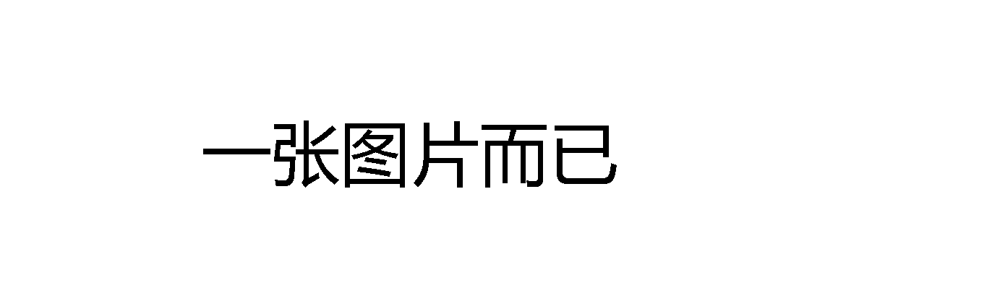

获取公众号设置的自动回复
搜索本站或百度
产品运营
自媒体平台
公众号
微博
知乎
Bilibili
————————
什么值得买
少数派
印象识堂
人人都是产品经理
风闻社区
简书
豆瓣
头条号（5篇）
百家号（1篇）
网易号（6篇）
企鹅号（3篇）
搜狐号
大鱼号
视频自媒体
Bilibili
Bilibili 直播
腾讯号
爱奇艺号
西瓜视频
好看视频
————————
视频号
抖音号
快手号
小红书
秒拍号
大鱼号
斗鱼
虎牙
喜马拉雅
YouTube Studio
TikTok Upload
Instagram
新闻资讯
今日看点
—————国内榜—————
今日热榜
MAKE
AnyKnew
拓扑排行榜
鱼塘热榜
今日热榜
多摸鱼
哔哔资讯官网
果汁排行榜
—————国外榜—————
SciURLs
TechURLs
DevURLs
今日热榜
每日简报
社交网站
—————国内网站—————
微博
微信网页版
微信搜索
果壳
豆瓣
知乎
简书
贴吧
今日头条
QQ空间
—————国外网站—————
Quora
Twitter
Reddit
Tumblr ▲
Pinterest
Medium ▲
Facebook
LinkedIn
Instagram
Telegram
TweetDeck
问答网站
—————传统问答—————
百度知道
百度经验
搜狗问问
答案答案
Diffen
wikiHow
WikiHow中文
Answers
Yahoo Answers
—————社会化问答—————
知乎
Quora
Stack Exchange
ONE问答
悟空问答
知网随问
—————付费问答—————
知乎 Live
在行一点
得到
微博问答
知识星球
使用介绍
RSS阅读
Feeder.co ▲
Inoreader ▲
Feedly ▲
Feedly Discover▲
————————
RSSHub
Datatube.dev
Feed43.com
Feedity.com
FiveFilters.org
FeedEx.Net
FetchRSS
YouTube 订阅管理器
RSS使用手册
综合新闻
谷歌新闻
网易新闻
腾讯新闻
凤凰新闻
本地宝
————————
人民日报
观察者网
界面新闻
澎湃新闻
南方周末
ZAKER新闻
多维新闻网
海外新闻
英国 - BBC
英国 - BBC 中文
英国 - 经济学人
英国 - 金融时报
英国 - 金融时报中文网
————————
美国 - CNN
美国 - 纽约时报
美国 - 纽约时报中文网
美国 - 华尔街日报
美国 - 华尔街日报中文网
美国 - 华盛顿邮报
美国 - Fox News
美国 - 时代周刊
香港 - 香港01
新加坡 - 联合早报
俄国 - RT
中国 - 中国日报
中国 - 环球时报
中国 - CGTN
图解新闻
——————图解新闻——————
图解天下
新闻百科
网易数读
数字之道
图解新闻
数据新闻
财经连环话
图数馆
——————图解知识点—————
V 百科
Information is Beautiful
Daily Infographic
Best Infographics
Visual Capitalist
199IT
品玩 PinGraphic
赛雷三分钟
二混子Stone
热搜榜
—————热搜榜—————
微博热搜榜
百度热搜
知微舆论场
微热点
知微事见
后续
—————热议榜—————
知乎热榜
知乎圆桌
知乎「根话题」
看知乎
知乎封神榜
————————
知道日报
贴吧热议榜单
虎扑社区热帖
什么值得买热门
Reddit List
Reddit List ▲
淘宝淘榜单
电商魔镜
公号榜
清博大数据
爱微帮公众号数据
西瓜自媒体数据
次幂数据
KolRank 大数据
新榜自媒体数据
————————
瓦斯阅读
视频榜
B站排行榜
B站每周必看
B站专栏排行
B站入站必刷
B站发现频道
B站UP主榜
————————
斗鱼排行榜
全网影视排行榜
爱奇艺风云榜
YouTube 时下流行
YouTube 网红排行榜 ▲
Youtube 网红排行榜 CN ▲
SocialBlade 大数据 ▲
短视频榜
新抖
抖抖侠
飞瓜数据
卡思数据
TooBigData
快手排行榜
小葫芦大数据
头榜数据
蝉妈妈
直播观察
搜索指数
百度指数
微博指数
谷歌趋势
微信指数
巨量算数
阿里指数
爱奇艺指数
新浪汽车指数
大数据
—————互联网数据—————
StatCounter 统计
百度统计
百度流量研究院
艾瑞互联网指数
互联网数据报告
全球网站技术调查报告
————————
腾讯位置大数据
腾讯移动分析
腾讯出行热度
交通拥堵延时指数
高精度IP定位
UN Data
SooPAT - 专利搜索
艾媒网 - 新行业研究报告
199IT 行业研究报告
极光大数据报告
新冠疫情分布大数据
IT桔子
七麦数据
明星消费影响力综合榜
排行榜
Alexa 网站排名
网站排行榜
中文网站排行榜
世界 500 强
公司排行榜
百度行业排行
小程序排行榜
大学权威排名
各国护照效力排行榜
艾瑞移动APP指数
互联网使用人口统计
TalkingData
信息查询
天眼查
企查查
行行查
启信宝
————————
被执行人信息查询
学信网学历查询
银行征信查询
国家职业资格证书查询
国家企业信用信息公示
国家标准全文公开
国家统计局数据
语言代码表
国家代码表
世界行政区划网
世界人口实时统计
资源搜索
搜索引擎
网页双重搜索 ✦
网页三重搜索 ✦
—————常用引擎—————
百度
谷歌
Google US
Bing
Yandex
搜狗
—————聚合搜索—————
轻略搜索
CSDN
快搜
—————搜索工具—————
移除搜索前100结果
不会百度么？
让我帮你百度一下
LMGTFY ▲
A Google a Day ▲
使用介绍
特色搜索
知识引擎 | WolframAlpha
知识引擎 | Magi
预览式搜索 | Peekier ▲
人生苦短，不妨一试！【推荐用电脑打开】
各种资源搜索教程 · 语雀
————————
网页时光机 | 网站设计博物馆
网页时光机 | WaybackMachine ▲
网页时光机 | Version Museum
网页快照查询 | 2tool.top
网页存档工具 | WebpageArchive ▲
—————匿踪搜索—————
DuckDuckGo
DogeDoge
秘迹搜索
—————元搜索引擎—————
WebCrawler
InfoSpace
Dogpile
—————多国搜索引擎—————
Ecosia
Rambler
Qwant
NAVER
电子书¹
—————电子书搜索—————
鸠摩搜书
采书
伴读搜书
淘链客
TheFuture
熊猫搜书
书单网
—————电子书网站—————
Z-Libarry ♥
LoreFree ▲
爱悦读网
快吧电子书
—————电子书博客—————
书行天下
知识库
七里香
SoBooks @
星空好书 @
PDF | 敏学网
PDF | PDF之家
PDF | ed2000
电子书²
—————英文电子书—————
Z-Library ♥
Library Genesis
Manybooks
Sridb
Project Gutenberg
PDF Drive
—————电子书图书馆—————
全国图书馆参考咨询联盟
超星读书
畅想之星电子书
互助联盟 $
科学文库
广州图书馆
—————电子书资源—————
静然书屋 1
静然书屋 2
天涯客网盘
精品电子书
文档搜索
—————文档搜索—————
百度文库
MBA智库文档
豆丁网
点点文档
道客巴巴
原创力文档
爱问共享资料
淘链客
360doc个人图书馆
—————百度文库下载—————
北斗解析工具
文库下载助手
百度文库下载
网页转换助手 @
百度文库下载 @
巴法文库下载 @
百度文库下载 $
皮皮虾学习网 $
南瓜文档服务 $
百度文库下载 $
音乐搜索
—————音乐搜索—————
MyFreeMp3 ♥
MyFreeMP3 2
MyFreeMp3Music
Audiomack
铜钟 ♥
铜钟 Lite
YesPlayMusic
半生雪
音乐下载器
下歌吧
蓝调Music
—————无损音乐—————
HiFiNi
无损生活
91无损音乐
声色互联
51Ape无损音乐
摆渡一下无损音乐
CD包音乐网
无损音乐吧
网盘搜索¹
—————第一梯队—————
优盘搜
大圣盘 @
大力盘 @
面包树 $
毕方铺 $
—————聚合搜索—————
万网搜
超能搜
懒盘
—————其他网盘—————
云搜多网盘搜索
Telegram中文搜索
蓝瘦蓝奏云搜索
熊崩蓝奏云搜索
蓝菊花城通网盘搜索
—————网盘工具—————
天翼云直链解析下载 1
天翼云直链解析下载 2
网盘提取码查询工具
使用介绍
网站搜索²
—————第二梯队—————
酷搜
云盘狗
两仪鸟搜索
PanSou
坑搜网
飞飞盘
猪猪盘
小白盘
小马盘搜索
小不点
小昭来啦
小可搜搜
BT 磁力¹
—————国外磁力——————
磁力聚合搜索 ▲
BTSOW
BTSOW 发布页
Kickass ▲
TorrentKitty ▲
Torrent Kitty 发布页
RARBG ▲
Zooqle
Torrentz
Tokyo Toshokan
动漫 | Nyaa
动漫 | 動漫花園
音乐 | RockBox
音乐 | Mixtape
电视剧 | EZTV
音频书 | AudioBook Bay
—————磁力网站代理—————
Immortal Proxy
Unblockit
Torrends
UnblockSource
TorrentBay
—————国内磁力——————
磁力狗
BT二狗
Bleget
BtDad
磁力蚂蚁
1024BT
1024BT 发布页
搜多多
搜多多发布页
吃力网
吃力网发布页
磁力海
磁力海布页
BT 磁力²
—————离线网盘——————
百度网盘
迅雷云盘
115
Loadbt
Offcloud
比特球云盘
Hotbox
—————磁力工具——————
Trackers List 1 ▲
Trackers List 2
Trackers List 3
种子转磁力工具
磁力转种子工具 1
磁力转种子工具 2
磁力转种子工具 3
————————
种子解析工具
虚假磁链生成器
我知道你下载了什么！
电影磁力
——————电影磁力—————
BT之家
电影天堂1
电影天堂2
阳光电影
人人影视分享
BT吧
哔嘀影视
66影视网
电影港
YYDS电影
——————————4K电影磁力—————
音范丝
查片源
CHAOSPACE
人人电影网
人人影视分级搜索
中国蓝光网
高清网
蓝光网
高清电台
MINI4K迷客电影
—————电影字幕—————
SubHD
字幕库
射手字幕
点点字幕
Subscene
SubFlicks
OpenSubtitles
CC0图库¹
——————第一梯队—————
图片多重搜索 ✦
图片多重搜索(谷歌) ✦
PixaBay
Pixabay中文
Pexels
Unsplash
Unsplash 镜像网站
————————
免版权图片聚合搜索
LibreStock 聚合搜索
Pixel Mob 聚合搜索
Nicepik
VisualHunt
Hippopx
StockSnap.io
Peakpx
Foter
EveryPixel
CreativeCommons
CC0图片网
沙沙野
西田图像
使用介绍
CC0图库²
——————第二梯队——————
Piqsels
Pakutaso
Stock Up
FreeImages
Stokpic
FindA.Photo
PhotoCK
Freephotos.cc
PD Pictures
AbsFreePic
picjumbo
FreeJPG
Colorhub.me
Reshot
使用介绍
—————示版权声明—————
500px
Flickr
Pinterest
花瓣
Adobe Stock
原寸画像検索
ShutterDial
FotoCommunity
——————专用图库——————
美食图片 | Foodiesfeed
美食图片 | Foodie Factor
美食图片 | Scatter Jar
动物图片 | Creature
旅行图片 | BucketListly Blog
搞怪图片 | Romain Laurent
非洲图片 | Iwaria
GIF 图库
———————GIF 图片—————
SooGIF
GIF 之家
动图宇宙
GIPHY
Gfycat
Coub
Make A GIF
———————GIF 编辑—————
Gif Super
SOOGIF
ILOVEIMG
EZGIF
Gickr
Gif-in-Gif
Make A Gif
图贴士
高清壁纸
——————高清壁纸——————
Unsplash ♥
Wallhaven ♥
WallDevil
WallpapersWide
Wallpaper Abyss
GoodFon
Desktop Nexus
35PHOTO
SooHub
WallHere
WallpaperMaiden
Backiee
3G壁纸
WallpaperCraft
10wallpaper.com
HDQwalls
彼岸桌面
极简壁纸
故宫壁纸
——————特色壁纸———————
必应壁纸图库
壁纸论坛 | Reddit Wallpaper
8K 壁纸 | Wallroom
花卉壁纸 | Kwaitki Wallpaer
游戏壁纸 | GameWallpaper
极简壁纸 | SimpleDesktops
天文壁纸 | ESO
格言壁纸 | Quotefancy
二次元壁纸 | KonaChan
Windows 壁纸 | WallpaperHub
Windows 壁纸 | 微软官方壁纸
Mac 壁纸 | AllMacWallpaper
手机壁纸 | ZEDGE
手机壁纸 | PAPERS.co
以图搜图
百度识图
搜狗识图
360识图
Google Image
Yandex Images
必应可视化搜索
Tineye Image ▲
TinEye Labs ▲
————————
商品搜索 | 拍立淘
图片信息 | 识别图
花朵搜索 | 看图识花
素材搜索 | 链图云
素材搜索 | EveryPixel
人脸搜索 | PimEyes
人脸识别 | EyeKey
人脸识别 | Face++
人脸识别 | FaceX
人脸识别 | Xslist
人脸识别 | Pornstarbyface
动漫搜索 | Ascii2d
动漫搜索 | 3D IQDB
动漫搜索 | WAIT
动漫搜索 | IQDB
图普 AI 识别
腾讯 AI 识别
阿里 AI 识别
网易 AI 识别
在线工具
小书签栏
小书签
小书签生成器1
小书签生成器2
小书签生成器3
————————————
小书签调试工具
小书签合并工具
小书签搜索引擎
小书签转拓展
Squarefree.com
Bookmarklets.com
Subsimple.com
Quix 超级小书签
万能命令
什么叫小书签？
工具
万能命令书签
随机打开网站
查找网站RSS源
————————————
弹出软键盘
搜索共享帐号
WP一键留言
摧毁网站
网页地震
网站涂鸦
显示当前时间
今年还剩多久?
年度进度条
查看浏览器UA
购物·购物党
购物·惠惠购物
购物·如意淘
Emoji表情图标
网页另存为PDF
获取 B 站封面
OK视频解析
阅读
自动滚屏
自动刷新
阅读模式
夜间模式
高亮关键词
————————————————
简单记事本
文字编辑器
编辑当前页面
解除右键限制
默认字体阅读
格式化大小写
改变文字颜色
显示明文密码
水平分屏浏览
垂直分屏浏览
限制网页宽度
关键词密度查询
给表格添加边框
下拉菜单转列表
谷歌缓存查询
网页缓存查询
网站时光机
————————————
搜索
谷度双重搜索
度谷应三重搜索
———————————————
谷歌搜索
谷歌站内搜索
谷歌搜索转中文
谷歌搜索转英文
百度搜索
百度站内搜索
谷歌快照查询
网页快照查询
网页存档查询
储存当前网页1
储存当前网页2
相似网站查找1
相似网站查找2
维基中文搜索
维基英文搜索
翻译
繁体转为简体
简体转为繁体
文本翻译为中文
文本翻译为英文
————————————————
有道全文翻译
彩云全文翻译
百度全文翻译
谷歌全文翻译 | 页内
谷歌全文翻译 | 弹窗
谷歌选词翻译
必应划词翻译
海词划词翻译
小D划词翻译
汉典划词解释
词霸划词翻译
英文字典搜索
英文缩写搜索
英文同义词搜索
英文俚语词搜索
图像
谷歌以图搜图
天眼以图搜图
————————————
显示丢失图片
移除所有图片
显示所有图片
修改背景图片
显示背景图片
简单画图工具
链接
生成二维码 | 页内
生成二维码 | 弹窗
显示邮箱地址
链接地址洗白白
————————————————
http 转 https
网页地址到根目录
网页地址向上一层
网页地址数字+1
网页地址数字-1
高亮显示链接
显示链接详情
显示出站链接
显示所有链接
显示所有链接(图片)
文本链接转超链接
显示网页标题和地址
生成网页HTML代码
生成图片HTML代码
链接在新网页打开
链接在当前页打开
开发
响应式设计测试1
响应式设计测试2
查看JS变量与函数
查看当前窗口大小
查看网页Meta元素
———————————————
查看网页Cookies
开启关闭CSS样式
ASCII码对照表
生成HTML表格
PrintWhatYouLike
给网页换个背景
屏幕尺子
字体查询
地形图查看
网页测量工具
RGB to Hex
Hex to RGB
216种标准色
站长
IP查询
SEO查询
WOT查询
Alexa查询
Whois查询
———————————————
W3C Link查询
W3C CSS查询
W3C Html查询
Buildwith查询
网站收录查询
反向链接查询
打开速度检测
正常访问检测
网站安全评级
网站病毒扫描
网站SSL检测
头部信息检测
站长工具合集
网站易用性评估
网站黑名单检测
分享
订阅到Feeder
订阅到Inoreader
订阅到Feedly
————————————
收藏到Evernote
收藏到Onenote
收藏到百度相册
收藏到百度云
收藏到云笔记
工具合集
一个木函工具箱
MikuTools
NiceTool+
兔二工具
独特工具箱
孟坤工具箱
九蛙工具箱
一个工具箱
云设
67工具网
实用工具
在线计算器
在线尺子
在线量角器
在线 IP 查询
高精度IP定位
同时打开多个网址
————————
多国语言输入键盘1
多国语言输入键盘2
保存网站的所有图片
网页截图工具 1
网页截图工具 2
MD5在线解密 1
MD5在线解密 2
软件快捷键查询
文件拓展名查询
带壳截图工具 | Device Shots ▲
带壳截图工具 | Dimmy
生成神器
卡通头像生成器1
卡通头像生成器2
卡通头像生成器3
卡通人像生成器4
卡通人像生成器5
————————
虚拟人脸生成器 1
虚拟人脸生成器 2
虚拟人脸生成器 3
真实人脸猜测
虚拟动漫妹子生成器 1
虚拟动漫妹子生成器 2
虚拟动漫妹子生成器(多个)
虚拟猫生成器
虚拟猫生成器(多个)
虚拟狐狸生成器
方格纸生成器 1
方格纸生成器 2
田字格字帖生成器
康奈尔笔记本生成器
3D书籍封面生成器
生成一个随机数
生成一个损坏的文件
迷宫生成器
键盘布局生成器
特殊字符
—————特殊符号——————
特殊符号
特殊符号大全
萌码
Glyphy
CopyChar
Cool Symbols & Fonts
——————颜文字——————
搜狗颜文字
颜文字
FSymbols
颜文字表情网
Unicode字符百科
—————————— Emoji ———————————
Emoji cheat sheet
Emoji Homepage
EmojiXD
Get Emoji
EmojiCopy
Emoji表情大全
Emojipedia
emoji®
Emoji Keyboard
中文转为Emoji
文字工具
—————文字工具—————
简繁字转换工具
普通话粤语互转
拼音缩写解释工具
文本在线处理工具
上下标号码生成工具
文字彩色渐变特效
文字倒序排列工具
—————文字云——————
美寄词云
微词云
易词云
WordArt
Word Cloud
微图云
—————字符图——————
Text-Image
IMG2TXT
TAAG
Kammerl
ASCIIFlow
QQ字符画
字符画艺术图 | fsymbols
字符画艺术图 | AsciiFlow
文字油画效果 | Textify.it ▲
动态粒子字体 | CodePen
字体涂鸦绘图 | Texter
图片工具
验证图片是否被PS
在线证件照换底色
在线雪花生成器
泥石流海报生成器
照片组合拼图神器
照片马赛克拼图神器
————————
占位图片 | Placeholder pics
占位图片 | Lorem Picsum
对称绘图 | Weavesilk
百变万花尺 | Inspirograph
友情PS社区 | Zhopped
图片趣味效果 | PhotoFunia
图片趣味效果 | pho.to
趣味图标效果 | Cool Text
图片趣味效果 | Photo505
照片故障风 | PHOTOMOSH
照片故障风 | ImageGlitcher
蒸汽波特效 | 蒸 気 機
P5 JS 图片特效
———————————————
半色调效果 | HalftonePro
半色调效果 | Halftone Maker
双色调效果 | Duotone ▲
双色调效果 | Duotone.co
放大镜效果 | ProductShot
P 站图标生成器
GIF 反转生成器
有啦拼字幕
在线去水印修补工具
查看照片 EXIF 信息
人工智能¹
AI 图片处理 | 谷歌实验室
AI 图片处理 | BoredHumans
AI 图片处理 | OpenCool
AI 图片处理 | MyHeritage
————————
图片自动上色 | ImageColorization
图片自动上色 | Algorithmia
图片自动上色 | ColouriseSG
图片自动上色 | Colorize
图片自动上色 | Image Colorizer
线稿图自动上色 | PetalicaPaint
线稿图自动上色 | PaintsChainer
智能保真缩放 | rsizr
智能保真缩放 | JS IMAGE Carver
图片智能放大 | BigJPG
图片智能放大 | waifu2x
图片智能放大 | Waifu2x API
图片智能放大 | AI Image Enlarger
图片智能清晰 | Let's Enhance
图片智能清晰 | Pix Fix
图片智能清晰 | Icons8
图像艺术化 | Ostagram
图像艺术化 | Photo Lab
图像艺术化 | AI Gahaku
图像艺术化 | Artbreeder
图像艺术化 | deepart.io ▲
图像艺术化 | deepart.io
人工智能²
谷歌涂鸦游戏
谷歌智能笔画工具
LowPoly 图片生成器
你在动漫里长什么样?
随机生成一幅山水画
将简笔画变成照片！
—————————
绘画找符号 | 特殊字
绘画找符号 | Shapecatcher
绘画找符号 | Mausr
————————
将头像变成漫画风格 1
将头像变成漫画风格 2
将头像变成漫画风格 3
把照片转化成线条画
让图片眼珠转起来
古照片效果 | 幕末古写真
图片 3D 转换器
照片生成动态表情视频 ▲
智能老照片无损修复
智能修复 | pho.to
肖像润饰 | pho.to
音乐工具
音乐解析 | 5sing
音乐解析 | 音悦台
音乐解析 | 网易云音乐 ✦
音乐解锁 - By IXarea
————————
在线音频编辑工具
在线音频转换工具
AI 歌词生成器
网易云音乐灰色解锁
音乐解锁
分离人声和伴奏 1 ♥
分离人声和伴奏 2
分离人声和伴奏 3
分离人声和伴奏 4
分离人声和伴奏 5
在线语音合成工具
语音识别 | 网易见外
语音识别 | 人人译视界
语音识别 | 讯飞听见
视频工具
在线视频制作 | 来画视频
在线视频制作 | Kapwing
在线视频制作 | B站云剪辑
在线视频制作 | PickFrom
在线字幕编辑器
在线字幕生成工具
在线视频压缩工具
在线视频转GIF
————————
M3U8 在线播放器 1
M3U8 在线播放器 2
M3U8 在线下载器
在线录屏工具 | 云设
在线录屏工具 | gifcap
在线录屏工具 | RecordScreen
换嘴型视频生成器
在线录屏工具
在线视频去背景工具 1
在线视频去背景工具 2
U2B 视频转 GIF
U2B 封面图获取
B 站封面图获取
B站 AV/BV 互转
视频解析¹
—————视频解析—————
ParseVideo
视频鱼
微博视频解析
B站视频解析 1
B站视频解析 2
——————VIP视频解析—————
VIP视频解析 ♥
VIP视频解析 1
VIP视频解析 2
VIP视频解析 3
VIP视频解析 4
VIP视频解析 5
VIP视频解析 6
VIP视频解析 7
—————短视频解析—————
短视频去水印解析
快手视频解析 1
快手视频解析 2
快手视频解析 3
抖音视频解析 1
抖音视频解析 2
抖音视频解析 3
抖音视频解析 4
Tiktok视频解析 1
Tiktok视频解析 2
视频解析²
综合 | Savieo
综合 | Video Get ▲
综合 | SaveFrom
综合 | Downloader
————————
油管 | DLD ♥
油管 | YTop
油管 | Dirpy
油管 | FLVTO
油管 | 360云转换
油管 | YT1s
油管音频 | MP3Juices ▲
油管字幕 | DownSub
推特 | TWDown
推特 | TWFK
Ins | Instagram DL
Ins | InsPorter
使用介绍
在线办公
电子邮箱
——————电子邮箱——————
QQ邮箱
163邮箱
126邮箱
Gmail
Hotmail
Outlook
——————临时邮件—————
10minutemail.com
YOPmail
Guerrilla Mail
MailDrop
Temp Mail
临时邮箱
—————短信接收服务—————
云短信
短信云接收
免费接码
接码号
云接码
Z-ZMS
MyTrashMobile
ReceiveFreeSMS
在线短信轰炸
————— 伪身份成生器 —————
NameGenerator
FakeIDGenerator
好维持
安全隐私
——————帐号查询——————
密码强度查询 | HowSecure
密码泄漏查询 | HaveIBeenPwned
密码泄漏查询 | Firefox Monitor
共享账号查询 | Bugmenot
帐号注销助手 | Just Delete Me
用户名占用查询 | Namechk
——————邮箱安全——————
邮箱地址转图片 | IMG4Me
邮箱地址转图片 | Nexodyne
邮箱批量退订 | Unroll.Me
邮件追踪工具 | 阅否
邮件追踪工具 | Mailtrack
邮件头分析 | MxToolbox
邮箱有效性验证 | Verify Email
——————隐私安全——————
文件加密 | Zipit
照片经度纬度查询
百度申请快照删除
谷歌申请快照删除
——————网站安全——————
网站信任检测 | WOT
网站信任检测 | 百度口碑
——————病毒扫描——————
腾讯哈勃分析系统
VirusTotal
VirSCAN
Kaspersky
使用介绍
谷歌应用
—————谷歌应用——————
Google 日历
Google 翻译
Google 文档
Google 图片
Google 学术
Google 图书
Google 趋势
Google Play
Google 文化学院
Google Ngram Viewer
Google 实验室
Google 涂鸦
——————谷歌地图——————
Google 地图
Google 街景
Google 地球
Google 星空
Google 月球
Google 火星
——————谷歌工具——————
Google 帐号
Google 我的活动
Google 分析
Google 快讯
Google 输入工具
Google 站长工具
Google 自定义搜索
谷歌应用替代品
谷歌废弃的项目
谷歌搜索彩蛋合集
—————镜像网站—————
Google
Goobe
爱思搜索
Guidebook 谷歌镜像
谷歌镜像网站1
谷歌镜像网站2
谷歌镜像网站4
———————————————
谷歌学术镜像
谷歌学术镜像1
谷歌学术镜像2
谷歌学术镜像3
维基百科镜像
Instagram镜像
文本分享
—————短链接分享—————
短链接工具 1
短链接工具 2
SINA 短网址
Bitly
TinyURL ▲
U.NU
批量短网址
—————二维码分享—————
草料二维码
QRBTF
二维彩虹
QRCode Monkey
Awesome-qr.js
凡科快图二维码
二维码梦工厂
第九工厂
——————文本分享—————
PasteMe
TXT.FYI
Note.ms
Privnote
Vuash
阅后即焚
PrivateBin
ControlC
网络剪贴板
——————代码分享—————
Ubuntu Pastebin
Github Gist ▲
Pastebin
Zeropaste
图片分享
—————图片分享—————
新浪相册
阿里图床
聚合图床 | 里客云
聚合图床 | 如优图床
聚合图床 | 兔二图床
映画图床
SM.MS
全能图床
即刻图床
PNG8图床
路过图床
牛图网
葫芦侠图床
Imgur
图床导航
文件分享
—————主流网盘—————
腾讯微云
百度网盘
天翼云盘
阿里云盘
iCloud
Dropbox
Google Drive
OneDrive
坚果云
永硕E盘
—————文件分享—————
蓝奏云
文叔叔
奶牛快传
小鹿快传
城通网盘
AirPortal 空投
—————国外文件分享—————
Wormhole
SendAnywhere
WeTransfer
TMP.link
Catbox
Streamvi 视频分享
轻松传
PP直连
AnonFiles
小麦云链
使用介绍
——————多媒体分享—————
Streamable
170MV
石墨文档
Treation
鸡霸图床
鸡霸网盘2号
在线办公¹
—————在线文档—————
语雀
微云文档
腾讯文档
谷歌文档
石墨文档
金山文档
—————在线笔记—————
印象笔记
OneNote
Notion
为知笔记
有道云笔记
—————团队协作—————
Treation
Trello
Tower
TeamBition
钉钉
—————表单工具—————
腾讯问卷
番茄表单
问卷星
金数据
麦客CRM
使用说明
在线办公²
—————文档转换—————
All to All
Convertio
123APPS
CloudConvert
Office Converter
Free-Converter
——————————PDF编辑—————
iLovePDF
SmallPDF
PDFCandy
LightPDF
pdf.io
docsmall
PDF24 Tools
PDF派
福昕PDF
超级PDF
—————文本识别—————
白描网页版
GK扫描仪
NewOCR
FreeOnlineOCR
OCR.Space
Yandex OCR
使用说明
Markdown
———————Markdown——————————
PostJson
Cmd Markdown
小书匠
StackEdit
Markdown 转换
Markdown 表格生成器 1
Markdown 表格生成器 2
Excel 转 HTML
MD 转 HTML
—————在线MD——————————
在线 MD | wdtf
在线 MD | Telegraph ▲
在线设计
—————在线 PS——————————
Photopea
稿定设计
—————在线设计—————
稿定设计
Canva
创客贴
DesignCap
图怪兽
京东设计
—————在线修图—————
泼辣修图
Polarr v2 ACR版
Polarr v3 新版
PhotoKit
—————在线编辑—————
Pixlr
Pixlr 专业版
Pho.to
ILoveIMG
—————矢量图设计—————
Vectr
gravit.io ▲
Icons8
——————————SVG编辑—————
Method Draw
SVG-edit
做好图
—————原型设计—————
Wireframe
墨刀
犸良
Figma @
图片编辑
格式转化 | Web2jpg
格式转化 | Jpeg.io ▲
图片转矢量 | Vectorizer
图片转矢量 | VectorMagic
图片剪裁 | SmartResize
—————图片压缩—————
TinyPNG
智图
Recompressor
Picdiet
img.top
Squoosh
—————在线抠图—————
稿定抠图
Clipping Magic
remove.bg
AI智能在线抠图
SocialBook
阿里妈妈
皮卡智能
—————在线画板—————
AutoDraw
Kkleki
WBO
画布 ▲
FlipAnim
Excalidraw
Witeboard
思维导图
—————思维导图—————
draw.io
ProcessOn
百度脑图
幕布
凹脑图
演说.io
爱莫脑图
ZhiMap 思维导图
X6 图编辑引擎 | AntV
在线流程图设计工具
————————
Whimsical
Sketchboard
Coggle.it
GitMind
markmap-lib
LOOPY
信息可视化
—————图表制作—————
文图
图说
图表秀
ChartCube
Timeline Graphics
—————信息图形—————
Tinychat
Canva
Venngage
easel.ly
Piktochart
Infogram
—————数据可视化—————
图之典
镝数图表
蚂蚁数据可视化
ECharts
HCharts
Flourish
D3.js
见齐数据可视化
PPT 模版
——————免费—————
OfficePLUS
优品PPT
51PPT
PPT之家
第一PPT
iPresst
SlideShare
叮当设计
—————免费+付费—————
锐普PPT
PPT宝藏
逼格PPT
演界网
办公资源
熊猫办公
——————付费—————
PPTSTORE
PresentationLoad
扑奔网
PPT 资源导航 1
PPT 资源导航 2
—————办公资源—————
Word联盟
格子社区
ExcelHome
iSlide - PPT 插件
哲学心理
哲学
认知偏差列表 ▲
知原学说
爱智思享
物演通论研究会
爱思想
可量化研究
香港大学思方網
中国哲学书电子化计划
————————
哲学页面
哲学百科全书
简明西方哲学史
心智模型
哲学简图
存在主义哲学漫画
10分钟速成课：哲学
知识论 Epistemology
苑舉正活用哲學
苑舉正西洋哲學史
王东岳西方哲学基础
国学堂梁冬对话王东岳
AC每日哲学的微博_微博
网络哲学资源
马克思主义文库
电车难题测试
哲学 · 博主
CrashCourse B站
CrashCourse
Crash Course
Crash Course 中文字幕组
————————
Wireless Philosophy
The School of Life
我思故我在1987
羲北偏北
苑举正
宗教学
宗教学概论
三教极简史
五大神话体系
心理学
心理学空间
壹心理
心晴网
Simply Psychology
————————
普通心理学
西方心理学史
积极心理学
社会心理学
爱情心理学
设计心理学
人格心理学
变态心理学
沟通心理学
游戏心理学
知心者联盟
心理学网站导航
心理学 · 博主
知心者联盟
Crash Course Psychology
Practical Psychology
SciShow Psych
Psych2Go
综合科普¹
CrashCourse
CrashCourse B站
Crash Course 中文字幕组
————————
B站知识区
柴知道
飞碟说
果壳
万物拣史
思维实验室
混乱博物馆
回形针PaperClip
赛雷三分钟
柚子木字幕组
吟游诗人基德
吟游诗人基德
万物30秒
庄七
综合科普²
Vsauce
Science Channel
BRIGHT SIDE
AsapSCIENCE
Domain of Science
LEMMiNO
The Infographics Show
MinuteEarth
Tom Richey
The School of Life
Great Big Story
Vox
学习方法
Knowledge Management Tools
blog.might.net
印象识堂
————————
YJango
是你们的康康
ElenaLin_青青
一条正弦
田浅浅
童哲校长
暂时没想好名字233
蜡笔和小勋
杨真直
高效工作
小强的时间管理博客
惜墨
战拖会
滴答清单与GTD时间管理
TED演讲
——————英文TED—————
TED
油管TED
TED-Ed
油管TED xTalks
油管TED Education
油管TED FellowsTalks
油管TED xYouth
——————中文TED—————
TED中国
优酷TED
网易TED
可可英语TED
腾讯TED
B站TED
TED精选演讲
TED六季演讲集
TED君学演讲
——————类TED—————
开讲啦
一席
一席精选
一席YiXi
一刻talks
译学馆
海绵演讲
万有青年演讲
SELF格致论道
在线课堂
—————免费课堂—————
网易公开课
中国大学MOOC
超星慕课
爱课程
学堂在线
大学资源网
MOOC中国
臺大開放式課程
Coursera
EDX
—————付费课堂—————
网易云课堂
腾讯云课堂
万门大学
混沌大学
插座学院
得到APP
粉笔网
好知网
————————
网络公开课导航
大学课程
—————大学导航—————
高校网址大全
高校论坛导航
全国重点高校导航
—————大学课程—————
国家精品在线开放课程表
浙江大学课程攻略共享计划
浙江大学课程攻略共享计划
中国科学技术大学课程资源
中国科学技术大学课程资源
上海交通大学课程资料分享
清华大学计算机系课程攻略
北京大学课程攻略共享计划
贵校课程资料民间整理
大学随书资源数据库
联图云.光盘
学术考研¹
—————学术论文—————
谷歌学术
Bing 学术
百度学术
百度文库
中国知网
远见搜索
万方数据
库问搜索
术语在线
iData-知识检索
全国报刊索引
文津搜索
AMiner
————————
Sci-Hub
SCI-Hub 发布页
Open Access Library
Semantic Scholar
FindArticles
—————考研论坛—————
小木虫
考研网
考研帮
免费考研网
免费考研论坛
中国教育考研频道
中国研究生招生信息网
———————————————
百度学术-论文查重
贝影论文修改助手
在线机器降重平台
PaperPaper论文查重
Google Scholars
学术考研²
—————学习导航——————
1纳米学习网站导航
学科导航
公开课导航
—————学术导航——————
木虫导航
大木虫学术导航
虫部落学术搜索
科塔学术导航
格桑花学术导航
绘雪导航
期刊导航
科研干货导航
学术网站大全
龙猫学术导航
—————考研资源——————
四六级资源
考研资源 1
考研资源 2
社会科学
政治学
政治倾向测试 | PolitiScales
政治倾向测试 | 8values
政治倾向测试 | IDRlabs
政治倾向测试 | YAVT 中文
解密维基 ▲
国家模拟生成器
美国大选模拟器
世界各国国歌网
全世界家庭生活写照
政治学 · 博主
观视频
观察者网
马督工
肝帝董佳宁
有轶见的Kris
real谷智轩
王骁Albert
小约翰可汗
————————
少康戰情室
寰宇全視界
一虎一席谈
BBC 中文
BBC News
CNN
经济学
—————财经新闻—————
新浪财经
腾讯财经
财经网
第一财经
经管之家
华尔街见闻
艾瑞网
————————
FT中文网
华尔街日报中文网
经济学人
财富中文网
福布斯名单
财富排行榜
世界经济指标
福布斯中国
胡润排行榜
经济学 · 博主
—————经济博主—————
猫眼儿观世界
猫眼儿观世界
财经郎眼2020
吴晓波频道
政经启翟
鹤老师说经济
真像大白
冲浪普拉斯
巫师财经
宁南山产业观察
宁南山
————————
The Economist
Economics Explained
Principles by Ray Dalio
Jacob Clifford
金融理财
—————金融理财—————
有为财经
东方财富网
东方财富网基金
东方财富网基金自选
东方财富网股吧
同花顺
同花顺基金
东方财富网行情中心
新浪财经行情中心
新浪财经
雪球行情中心
————————
人民币汇率
和讯黄金
每日股市简评
雪球财经导航
—————财经论坛—————
虎扑股票区
雪球
股吧
淘股吧
集思录
金融问答
财经博主
—————财经博主—————
B站财经
硬核的半佛仙人
暴躁的仙人JUMP
统一的奸商之路
财经不眠姐
Hellen海伦子
Lindsay说
有芝士的咖咖
有芝士的咖咖
—————基金博主—————
投基学堂
喜欢玩基金的小瑜哥
认真的天马
这是Morty
军事学
—————军事博主—————
凤凰网军事频道
张召忠
理科男士K一米
理科男士K一米
CRAZY262
Curious Droid
Binkov's Battlegrounds
法律学
—————政法机构—————
中国人大网
政府机构导航
公共机构导航
中央政府机构导航
国际组织导航
法律网站导航
沃客法律导航
—————法条查询—————
人大法律释义
国家法律法规数据库
中国庭审公开网
法律图书馆
法律法规数据库
中国法律法规查询
案例法规检索
—————法律问答—————
知乎法律
法言
法律问答
打假导航
—————法律博主—————
今日说法
法治新闻
罗翔说刑法
王世方律师
张鹏宇律师
社会学
吸奇侠
军师姜伯约
树根龙门阵
卢诗翰
阿健
WhatOnEarth
十万个品牌故事
观学院
月下玄月
奇葩的世界观
X博士
是桃大
见世君
统计学
—————统计学博主—————
统计学速成课
Jannchie见齐
Data Is Beautiful
Captain Gizmo
Stats Media
WawamuStats
Dr. Stats
————————
RankingMan
Animated Stats
Latos Charts
Woraph
Reigarw Comparisons
WatchData
历史学
全历史
时间地图
观沧海
中国历史时间轴
中国各朝代地图
历史数据可视化
中国历代人物数据库
历史剧里看历史
人物志
互动世界历史地图集 ▲
紫禁城历史
————————
On This Day
历史上的今天
历史上的今天 - 维基
讲历史
趣历史
中国妖怪百集
历史学 · 博主
老梁
梁知
老梁观世界
老梁有看法
老梁故事汇
老粱故事汇
老梁故事汇周播版
大唐雷音寺
月落无声网
————————
有点意思
歷史面面觀
蒋述订阅号
看鉴
CGP Grey
WonderWhy
英语学习
翻译词典
—————翻译词典—————
谷歌翻译
必应翻译
欧陆词典
有道词典
爱词霸
百度翻译
—————智能翻译—————
DeepL Translator
彩云小译
腾讯翻译君
—————文档翻译—————
翻译狗
DocTranslator
—————学习者词典—————
朗文当代词典
剑桥词典
牛津学习者词典
柯林斯词典
麦克米伦词典
韦氏学习者词典
Vocabulary.com
—————母语词典—————
牛津词典
韦氏词典
美国传统词典 ▲
专用词典¹
—————缩写词典—————
AcronymFinder
搜英文缩写
Abbreviations
AbbreviationFinder
—————押韵词典—————
Rhymer.com
RhymeZone
Rhymers.net
—————发音词典—————
Forvo
Inogolo
人人词典
VoiceTube
PlayPhrase
—————词源词根词典—————
Etymology Dictionary
词源词根词典
优词词典
优词词源字典
词根词典
词根词缀词典
同音异义词词典
—————图解词典—————
Visual Dictionary
Info Visual
iKonet ▲
LanguageGuide.org
使用介绍
专用词典²
—————俚语词典—————
Urban Dictionary ▲
The Slang Dictionary
English Slang
—————习语词典—————
Phrase.org.uk
PhraseFinder
UsingEnglish
Biggest Phrase Index
Most Popular Idioms List
—————术语词典—————
知网翻译助手
术语在线
词都
一本词典
中国特色话语术语库
联合国多语言术语库
无忌英汉摄影词汇
————————
反向查询 | OneLook
反向查询 | Reverse Dictionary
商业词典 | Business Dictionary
语录词典 | Quotations Page
名人语录 | A-Z Quotes
QuoteLand
使用介绍
英语网站
—————中文网站—————
沪江英语
扇贝
21英语
新东方英语
大耳朵英语
旺旺英语
爱思英语
巴士英语网
英语点津
英语百科
英文巴士
—————行业英语—————
可可行业英语
爱思行业英语
福步外贸英语
—————英文网站—————
engVid
mmmEnglish
EnglishClub
World English
ManyThings
Learn English
English Hilfen
PerfectYourEnglish
ThoughtCo.
English Stackexchange
英语资源
PDAWIKI 学习交流区
PDAWIKI 学习资源区
PDAWIKI 词库资源区
————————
FreeMdict
英语考研论坛
两小无猜儿童英语
田间小站
牛津阅读树
《图解英语》
新东方图书网
力哥爱英语
BellyBallot 英文起名网站
—————英语游戏—————
单词卡 | Quizlet
看图学单词 | Ba Ba Dum
Vocabulary.com Play
Ozspeller 填词游戏
英文打字练习 | Ratatype
英文打字练习 | ZType
田间小站
PurposeGames
Qwerty Learner
《英语》翻转课堂
单词词汇
—————背单词—————
词频背单词
YouZack背单词
轻松背单词
可可背单词
UE 分级词汇表
爱词吧背单词
爱词霸卡片背单词
Memrise 词汇
—————词汇量测试—————
扇贝词汇量测试
Test Your Vocabulary
听力口语
在线英语听力室
每日英语听力
普特听力
听力课堂
可可英语
————————
48个英语音标表
48个国际音标发音表
英语听力逐句精听
听力特快
Youglish
ESL Cyber Listening Lab
CNN10 Student News
美国之音
VOA 慢速英语网
VOA英语学习网
口语陪练网
在线雅思机考模拟
口语博主
EnglishTube
口语老炮儿马思瑞
Ella教美语
英语老师Lee
阿曾曾儿
FanfaniShare
一起暴击口语
免子队长油百万
————————
EngVid
EngVid
English Like A Native
Rachel's English
English with Lucy
mmmEnglish
Maaaxter English
Sounds American
跟洋妞学英语 Jackie
阅读理解
—————杂志周刊—————
TIME
The Economist
The Economist 下载
Discover
Newsweek
Reader’s Digest
—————西方新闻—————
CNN
USA TODAY
Washington Post
New York Times
Los Angeles Times
BBC
The Guardian
—————中国新闻—————
China Daily
People's Daily Online
七彩英语
英文阅读网
可可双语阅读
蛐蛐英语
21个英语新闻网站
英语分级阅读
语法网站
—————语法网站—————
英语词汇资源网
英语语法网
UsingEnglish.com
English Pages
My English Pages
Engrish 英语错用收集
宇宙最全在线词典网站导航
1000 部英语类词典名录
语法博主
—————语法博主—————
张富贵的英语世界
rio老师
Mmxgxg
————————
KMF考满分
JamesESL English Lessons
JenniferESL
EnglishLessons4U
51xiaochu雅思写作
魏剑峰
写作词典
—————类义词典—————
Wordnik
Collins Thesaurus
PowerThesaurus
Words to Use
Thesaurus.com
FreeThesaurus
Big Huge Thesaurus
WordHippo
VisuWords
—————搭配词典—————
Collocation Dictionary ▲
Ozdic.com
Just the Word
Linggle
Netspeak ▲
TextRanch
—————例句词典—————
句库
词都句库
SentenceDict
Linguee
Ludwig
—————语料库——————
COCA
BNC
WebCorp
批改网语料库
写作语法
—————语法检测—————
旺旺英语语法
Grammarly
LanguageTool
易改
NounPlus
GrammarChecker
Hemingway Editor
Aim Writing
WordCounter
—————写作建议—————
英语作文网
Writing Commons
The Elements of Style
英文写作模版
英语写作模板
guinlist
Paradigm
Squibler 写作工具
Writer's Digest 写作文摘
Grammica 伪原创工具
语言学
新编简明英语语言学
十分钟速成课：语言学
语言学概论40集
语言学及应用语言学
英语史
————————
Langfocus
Xidnaf
日语语法指南
全国各地方言故事
乡音
全球英语口音档案馆
小语种学习网
自然科学
物理学
Nature
Science
Nature Index
科普中国
微科普
果壳
科学松鼠会
PanSci 泛科學
中国数字科技馆
十万个为什么
物理学 · 博主
科技袁人
科技袁人
科技袁人
李永乐老师
李永乐老师
妈咪说
天才简史
Veritasium真理元素
薛定饿了么
鹿哥来了
Alien老吴
科学声音
————————
老高與小茉
Veritasium
Domain of Science
LEMMiNO
MinutePhysics
The Slow Mo Guys
Arvin Ash
Eugene Khutoryansky
Sixty Symbols
数学
数字帝国
直观的数学观念
文艺数学君
数学乐
Math is Fun
欧氏几何原本彩色版
数学分步计算器
傅里叶变换交互式入门
在线手写公式流程图
—————数学博主——————
陶哲轩博客 ▲
3Blue1Brown
3Blue1Brown
Numberphile
Mathologer
化学
重现化学
元素周期表
元素周期表
—————化学博主——————
美丽科学
H2元素实验室
小朋友字幕
真·凤舞九天
生物学
Discovery
生物谷
中国生物志库
世界上奇特的树
非洲野生动物
动物世界
动物爱好者导航
物种搜索
生物学 · 博主
BBC Earth
National Geographic
Brave Wilderness
SciShow
Animalogic
Animal Planet
Nat Geo WILD
Primer
Facts Junkie
————————
龙女之声
芳斯塔芙
养犬兄妹
天文学
NASA
Space.com
哈博天文望远镜
Space Telescope
爱航天网
中国天文科普网
NASA Image of the Day
Google 国际空间站
————————
十万颗星体
探测器罗塞塔10年漫游模拟
一天一张天文学图片
星图 Star Atlas
在地球上观察星系
天文摄影交流 | AstroBin
航天飞船模拟器
太阳系地图册
720 星球 VR
Timeline of Earth ▲
太阳系模拟器
宇宙的刻度2
太空天体的大小
宇宙的未来会怎样？
海底是怎么样的？
天空有多高
国际空间站实景图
《三体》网站
天文学 · 博主
NASA - YouTube
CosmoSapiens
Harry Evett
Kurzgesagt – In a Nutshell
SciShow Space
SpaceX
Space Reloaded
Scott Manley
PBS Space Time
表象的本质
中科院中国科普博览
豆先生的纠缠态
科学史评话
Linvo说宇宙
地理学
标准地图服务系统
国家领土实际大小
四大名著地图
网络的演变
易制地图制作工具
原子弹核爆范围计算
地图云集
MapChart 世界地图自定义
Map Porn
Mapmania
Sublime Maps
David Rumsey Map Collection
可视化地理图表生成器
从瑞典到达中国的物流艺术
Random Country
Random City
中国地图生成器
地平说学会协会
—————360全景—————
Poly
指尖上
AirPano
随机观看全球街景
全景客虚拟旅游网
北京A级景区虚拟旅游
大像素星球
全景故宫
Where is Rosetta?
D-Maps
地理学 · 博主
Geography Now
Geography and Space
Ollie Bye
Khey Pard
OverSimplified
RealLifeLore - YouTube
Atlas Pro
antartida ball
Johnny Harris
————————
史图馆
呆丸刺史
何解毒
有趣地图
科技数码
科技新闻
IT之家
36氪
PingWest 品玩
少数派Matrix
爱范儿
创业邦
好奇心日报
湾区日报
雷锋网
煎蛋
虎嗅网
How-To Geek
CarlCheo.com
————————
中关村在线
太平洋电脑网
数字尾巴
Chiphell
互联网
IBM PC 模拟器
Macintosh 模拟器
Windows 模拟器
Windows 93
Windows XP
老式电脑赏析
滚动条进化史
Flash 保存计划
90年代个人网站欣赏
1999年 秘密花园
网页里的电脑博物馆 ▲
互联网地图
在线键盘模拟器
————————
鱼爷的道场
灵魂歌者聊科普
Apple
Apple
苹果历年发布会
——————Apple博主—————
Apple
Apple Support
Apple Explained
MacMost
我的宇宙_Yoga
深空灰SpaceGrey
钟文泽
数码科技
Microsoft
Apple
三星
甲骨文
IBM
————————
小米
华为
vivo
OPPO官
大疆
科大讯飞
科技数码 · 博主
TESTV
爱否科技FView
科技美学
ZEALER
TechQuickie
老师好我叫何同学
胖丁家的林亦
bonjour呼呼
白TV
啃芝士
喵喵折App
白呀白Talk
物色
远古时代装机猿
————————
Dave Lee
I know I'm Awesome
JerryRigEverything
Linus Tech Tips
Marques Brownlee
Techquickie
Unbox Therapy
摄影器材
橙猫涉影
阿布垃机手册
彩蜂摄影生活杂志
彩蜂摄影生活杂志
摄影师顾俊
永遠那么遠
电脑硬件
中关村数码排行榜
太平洋数码排行榜
京东排行榜
————————
模拟装机
自助装机
BIOS 面板模拟器
天梯排名
天梯帝排行榜
鲁大师排行榜
快科技性能排行榜
CPUBoss
CPU天梯图 | 超能网
CPU天梯图 | 驱动之家
CPU天梯图 | Benchmark
移动芯片性能排行榜
GPUBoss
显卡天梯图 | 超能网
显卡天梯图 | Benchmark
显卡天梯图 - 桌面
显卡天梯图 - 笔记本
SSDBoss
硬盘天梯表
在线屏幕检测
汽车之家
特斯拉
蔚来汽车
小鹏汽车
理想汽车
————————
汽车之家
太平洋汽车
爱卡汽车
电车资源
第一电动
工业技术
工业导航网
光伏导航网
设计癖工业设计导航
学数控网导航
————————
知筑导航
建筑师网址导航
建筑曲奇导航
KenTT
The B1M
软件开发
发现应用
—————发现应用—————
ProductHunt
BetaList
Slant
异次元软件世界
小众软件
发现小众
最美应用
少数派
创造者日报
新趣集
IT之家
V2EX 发现 ▲
—————软件资讯—————
Microsoft Store
Alternativeto
SourceForge
FileHippo
MakeUseOf
Lifehacker
—————软件论坛—————
52破解
卡饭论坛
学破解
远景论坛
乐愚社区
软件推荐
——————Windows 软件推荐—————
年度最喜欢 Windows 软件
Best-App
Awesome Windows
Best Windows Apps
Windows Apps That Amaze Us
——————————Mac 软件推荐—————
年度最喜欢 Mac 软件
macOS icon pack
Dynamic Wallpapaer ▲
Awesome macOS
Awesome Mac 1
My-mac-os
腾讯柠檬精选
Win 软件¹
—————第一梯队—————
423Down ♥
六音软件
果核剥壳
大眼仔旭
墨涩网
独木成林
th_sjy
联合优网
PC6下载站
软件多重搜索 ✦
—————第二梯队—————
YAMADIE
懒得勤快
歪果不求仁
反斗软件
阿萨姆软件
重灌狂人 ▲
免費資源網路社群 ▲
乐软博客
软件学堂
绿色软件
独孤求软
软件SOS
Win 软件²
—————国外网站—————
Portable App
Softonic
Softasm
PortableApps
REPACK.ME
iGet Into PC
AllSoftCracks
SadeemPC
LR EPACK
Get Into PC
haxNode
—————稀缺资源—————
FXXKMAKEDING
FXXKMAKEDING 镜像 1
FXXKMAKEDING 镜像 2
瓜子云盘
脑袋瓜子
—————系统下载—————
MSDN,我告诉你
Windows 系统下载器
极简系统
Win7 系统下载
Win10 系统下载
Windows 系统美化
Windows KMS 激活
云萌Windows 10激活
软件密钥分享网站
Mac 软件
—————发现应用—————
#Mac - 少数派
Mac玩儿法
威锋网
黑苹果社区
黑苹果星球
Reddit Mac
MacRumors Forums
——————————Mac 软件—————
MacWk
xClient
Digit77
史蒂芬周
马可菠萝
知您网
Mac 稀缺资源
AppKed
OurMacs
Mac Torrent
MacApps.to
移动应用
——————————iOS 应用—————
AppStore 应用搜索
爱思助手应用搜索
AppStore 排行榜
APPStore 历史版本
—————捷径库—————
Shortcuts Gallery
捷径社区
捷径库
iOS捷径推荐
小良捷径规则
—————安卓应用—————
Google Play
Google Play 代理下载1
Google Play 代理下载2
Google Play 代理下载3
Google Play 代理下载4
翻应用下载站
—————小程序—————
小程序商店
小程序排行榜
Github
GitHub
GitHub 镜像网站
Github Explore
GitHub Ranking
Github User Ranking
GitHub Trending
————————
中国开发者项目列表
GitHub 中文排行榜
Github 星聚弃疗榜
GitHub 开源项目推荐
编程语言排行榜
GitLogs ▲
HelloGitHub
GitHub仓库头图生成器
GitHub 加速下载 1
GitHub 加速下载 2
编程开发
—————编程社区—————
GitHub
码云
CSDN
V2EX
掘金
博客园
开源中国
极客阅读
开发者头条
—————编程问答—————
极客搜索
StackOverflow
SegmentFault
CSDN问答
V2EX问答
—————编程博客—————
阮一峰
张鑫旭
廖雪峰网站
V2EX最热
每日时报 ▲
科技爱好者周刊
开发手册
—————开发手册—————
Mozilla 开发者网络
菜鸟教程
w3school 在线教程
DevDocs 程序语言手册
CSS 属性指导手册
CSS参考手册
GM脚本开发手册 ▲
前端开发仓库
JS 小技巧
JS Keycode 查询
计算机科学主题列表
网络的演变
代码书写规范 1
代码书写规范 2
简易的前端入门教程
前端小课
Python-100-Days
easyAI - 人工智能学习库
996.ICU
—————开发书籍—————
搬书匠
书栈网
IT熊猫
图灵社区图书
经典编程书籍大全
成为专业程序员
如何成为一个程序员
免费中文编程书籍
计算机书籍控
自学计算机科学
免费计算机书籍汇总
—————开发课程—————
oeasy
Udacity
实验楼
慕课网
网站建设
—————博客程序—————
GitHub Pages
WordPress
Typecho
Hexo
WordPress大学
爱找主题
知更鸟
Colorlib
404模板网
CorePress 主题
WordPress 资源分享
—————域名空间—————
阿里云
腾讯云
万网域名注册
GoDaddy 域名注册
搬瓦工
必盛互联
老薛主机
VPS日报
全球主机交流论坛
网页设计
—————网页源码——————
模板之家
懒人程序
jQuery之家
站长素材
17素材网
怪兽模板中文网
Mashup Template
HTML5 UP!
TEMPLATED
小胡子哥的 Snippet
Little Snippets
jQuery 插件库
HTML素材网
—————网页赏析——————
Awwwards
The FWA Awards
CSS Design Awards
WebDesignBlog
CSSMania
CSS Winner
Reeoo
Straightline.jp
MUUUUU.ORG
4db
Hongkiat
Form Follows Function
全球酷站
云瑞
网页设计师加油站
全球酷站中心
由CSS生成的油画
WebGL网页3D作品集
日本精美网站欣赏
站长工具
域名查询
网站显示效果测试 1
网站显示效果测试 2
检查网站是否在正常运行
网站主机服务器查询
————————
网站打开速度 | PageSpeed
网站打开速度 | WebPagetest
网站打开速度 | Website Speed Test
相似网站查询 | SimilarSiteSearch
相似网站查询 | Similarsites.com
相似网站查询 | SimilarWeb
网站配色查询 | CheckMyColours
建站程序查询 | Built With
检测WP使用了什么模版
防抄袭检测工具 | Copyscape
网站换字体演示工具 | TypeWonder
加载动图生成 | loading.io
favicon.ico 生成器
知名网站副本源码 | CloneIDEA
同ip反查 | SameIP.org
SEO工具
在线工具
开源中国
ATOOL
站长之家
脚本之家
爱站网
———————————————
同IP网站查询
真实IP检查工具 | CA App SM
Whois查询 | Chinaz.com
Whois查询 | Whos.is
网站综合检测 - Chinaz.com
网页关键词密度检测
关键字密度查询工具
死链查询 | 站长之家
死链检查 | W3C Link Checker
友情链接查询
网页编码规范查询
外链查询 | Ahrefs
外链查询 | Moz.com
关键词分析 | SEMRush
关键词分析 | Wordtracker
关键词分析工具 | Keyword Tool
前端工具
正则表达式 | Regex Tester
正则表达式 | Regulex
正则表达式 | 脚本之家
正则表达式速查表
————————
JS美化 | 程序员工具箱
JS美化 | JSBeautifier
JS语法检测 | JSLint
JS编辑和预览 | RunJS
URL转码工具
PX转EM
HTML-UBB代码转换
图片转DataURI
CSS优化工具
CSS3样式生成器
CSS按钮生成器
CSS压缩工具
CSS语法验证服务
CSS滤镜 ▲
CSS平滑阴影生成器
Transition.css
CSS Border-Radius
浏览器UA查询 1
浏览器UA查询 2
HTTP状态码详解
代码转换成漂亮图片 1 ▲
代码转换成漂亮图片 2
程序员在线工具
SVG 在线编辑器
———————API 工具—————
姬长信 API
Shields.io
获取网站 Favicon
一为Api
W3在线手册
在线HTML编辑器
Country Flags API
Chrome
——————资讯信息——————
gHacks Chrome
Techdows Chrome
Make Tech Easier
Chrome - 小众软件
Chrome Story
Chrome 发布更新日期
Chrome 历史版本
Browser Logos
——————博客论坛——————
Reddit Chrome
Chrome浏览器论坛
Chrome吧-百度贴吧
V2EX › Chrome
——————下载更新——————
下载 Chrome
下载 Chrome
下载 Chrome
下载 Chrome 2
下载 Edge
下载 Edge
——————常用资源——————
Chrome WebStore
Microsoft Edge Store
Firefox Add-ons
Greasy Fork
Sleazy Fork
Userstyles
浏览器扩展推荐
—————拓展代理下载—————
CrxDL
Crx搜搜
Crx Downloader
极简插件
173应用网
GugeApps
Crx4Chrome
——————————Chrome开发—————
Chrome 扩展开发教程
DevTools 使用技巧
Chrome 开发者工具文档
用Chrome学编程
——————广告过滤——————
最全广告拦截资源整理
卡饭广告过滤规则
浏览器反跟踪能力测试
CCAVA 广告过滤
Firefox
——————资讯信息——————
gHacks Firefox
Techdows Firefox
Make Tech Easier
The Mozilla Blog
Firefox 信仰充值中心
Firefox - 小众软件
Firefox 新特性开发进展汇总
Firefox 发布更新时间
——————博客论坛——————
Reddit Firefox
MozillaZine Forums
Extension Development
Firefox中文社区
Firefox 卡饭论坛
Firefox吧_百度贴吧
V2EX › Firefox
——————拓展下载——————
Firefox Add-ons
火狐旧式拓展存档
JustOff's Extensions
Chrome拓展移植火狐
MyBrowserAddon
add0n.com
Fixed AddOns
Fast Addons
Firefox 吧项目组
——————火狐内建页——————
新标签页
空白页
About 页面
Firefox 下载页面
Firefox FTP 下载页面
Firefox Roadmap
UserAgent 列表
Firefox 开发
———————开发资源———————
BugZilla
Mozilla Add-ons Blog
CustomizableUI.jsm
Browser Extensions
Open web technologies
Web APIs | MDN
Mozilla Hacks
Knowledge Base
Chrome URLs
About:config entries
ghacks-user.js
Firefox oncommand
DXR
—————UserChromeCSS—————
Aris-t2/CustomCSSforFx
Firefox-CSShacks
photon-australis
ShadowFox
MaterialFox
Minimal Functional Fox
userChrome.css
Reddit FirefoxCSS
FirefoxCSS Store
uc.css.js
——————UserChromeJS—————
What is userChrome.js?
firefox-quantum-userchromejs
Camp Firefox
wiki@nothing
Day-to-day up bug
scdhao userChromeJS
日本UC脚本上传中心
addMenu脚本配置生成器 ▲
Firefox不完全开发手册
keyConfig
反盗链测试
KeyChanger.uc.js热键命令
addMenuPlus.uc.js 配置说明
——————Github开发者—————
Timvde
nuchi
Endor8
ardiman
alice0775
ywzhaiqi
Griever
xinggsf
RunningCheese
haiwx/others
xiaoxiaoflood
平面设计
资讯灵感
Dribbble
Behance
Deviantart
Pinterest
Muzli
UsePanda
————————
站酷 ZCOOL
站酷榜单
优设 UISDC
优优灵感
UI中国
秀设计
花瓣网
——————设计博客——————
设计周刊
图月志
设计达人
亿品元素
海报收集 | Baubauhaus.
书籍封面 | Book Cover
包装设计 | LovelyPackage
——————行业博客——————
腾讯CDC
腾讯ISUX
一淘UX
京东JDC
设计教程
—————英文教程—————
PsdTuts+
PSTutorials
PSDVault
PSDBox
PhotoshopStar
PhotoshopLady
PSDDude
Textuts.com
—————中文教程—————
16xx8
PS家园网
优优教程网
思缘教程
思缘设计论坛
————————
doyoudo
doyoudo
我要自学网
优设基础训练营
高高手
翼狐网
视达网
国内素材
——————国内素材—————
CC0 | 给图网
CC0 | 爱西西
CC0 | 高图网
VRF | 千图网
千图网解析工具
VRF | 千库网
VRF | 包图网
VRF | 摄图网
VRF | 我图网
VRF | 昵图网
CC | 叮当设计 ♥
—————商用需谨慎—————
CCNC | 觅元素
CCNC | 素材岛
CCNC | 站长素材
CCNC | 懒人图库
CCNC | 沙沙野
CCNC | 大美工
CCNC | 68Design
CCNC | 16素材网
CCNC | 创意悠悠花园
CCNC | 素材中国
CCNC | 设计是空
CCNC | 未来素材
——————电商素材—————
VRF | 90设计网
VRF | 黄蜂网
CCNC | 大美工电商
(c) | Banner设计欣赏
(c) | 设计业
国外素材
——————国外素材—————
平面素材搜索引擎 | Muzli
CC0 | AllTheFreeStock
CC | Freepik
CC | 365PSD
CC | 1001FreeDL
CC | Freebbble
CC | Freebiesbug
CC | GraphicsFuel
RF | GraphicRiver
RF | Adobe Stock
CC0 | TopeconHeroes
VRF | PNGtree
矢量素材
———————矢量素材———————
VectorPortal
Vector
Vecteezy
PDVectors
Stockio
VEXELS
Peecheey
VectorHQ
CC0 | 公共领域的载体
——————专用矢量素材—————
社会身份 | VectorCharacters
老旧图案 | I Heart Vector
轮廓图案 | All-Silhouettes
复古图案 | Retro Vectors
地图图案 | Vector Maps
地图图案 | Vector Maps
———————PS笔刷———————
PS笔刷吧
Brusheezy
PsBrushes ▲
FBrushes
Obsidian Dawn
———————Sketch———————
Sketchapp TV
Sketch App Sources
Icon 素材
——————————Icon搜索—————
Iconfinder
Findicons
IconSeeker
Flaticon
Icon Ninja
Icon-Icons
——————————Icon图标—————
Iconfont
Icons8
草莓图标库
NounProject
Simple Icons
IconStore
Tabler Icons
ICONSVG
ByteDance IconPark
Orion Icon Library
Streamline
Remix Icon
Ikonate
Tabler Icons
VisualPharm
Iconscout
Logo 素材
———————Logo图标——————
Logopedia
InstantLogoSearch
BrandsoftheWorld
Seeklogo.net
Seeklogo.com
Logo Download
矢量图下载
1000 Logos
LogoDix
汽车Logo | 车标大全网
复古Logo | EpicIcons
运动Logo | VectorportalSport
运动Logo | SportsLogos.Net
———————Logo制作——————
Logospace
Logoshi
Logoshi Draw a Logo
Instant Logo Design
Logo Maker
ShapeFactory
LOGASTER
DesignEvo
Logo Lab
U钙网
YEELOGO
Logomaster.ai
标点狗
———————Logo工具——————
文字Logo生成器
Logo 设计 AI 评分
查找知名 Logo 中的字体
猜 Logo 游戏
———————Logo赏析——————
Rologo
Logo Instant
LogoFaves
LogoHeroes
Logopond
60Logo
Desinion
LogoLounge
Logospire
PNG素材
PNG素材网
PngFind
StickPNG
Pngtree
PNG img
PNG All
Crazy Png
————————
PNG Mart
KissPNG
PngPix
FreePNG
PixelSqui
PlusPNG
IMGBIN
PinPNG
Iconscout
觅元素
無料DTP素材
Snipstock
插画素材
Open Doodles
OUCH
unDraw
Glaze
———————————————
Fresh Folk
Mixkit
DrawKit
Humaaans
ArtStation
FACETS
ManyPixels
Aritify
Vektors
Illustration Kit
可商用 | Cliply
模板素材
Smartmockups
Dunnnk
Mockup World
Behance Mockup
GraphicBurger ▲
Mockups Design
Free Mockup Zone
Good Mockups
ZippyPixels
FreeDesignResources
GraphicTwister
Sketchsheets
Graphberry
手机 3D 模板
纹理素材
—————纹理图案—————
The Pattern Library
Subtle Patterns
图鱼
BackgroundLabs
Ava7Patterns
Wallpaper Patterns
SVG Backgrounds
GraphicSurf
Low Poly Art
Paints
—————纹理材质—————
Textures.com
Plaintextures
Texturer
Lost and Taken
Texture Haven
Wild Textures
Texture Ninja
TexturePalace
Lovetextures
PatternCooler
—————纹理生成器—————
BGPatterns
Tartan Maker
Stripe Generator
Star Emission
Cool Backgrounds
Trianglify
Patternizer
Vactual Papers
Perlin Noise Painter
Hero Patterns
背景生成器 1
背景生成器 2
Patterns1
配色方案¹
———————颜色查找——————
Color Hex
Color Picker
Picular
HTML Color Codes
147 Colors
HEX 2 RGBA
0to255
———————配色表——————
中国传统颜色
中国传统颜色 ▲
日本の伝統色
中国传统颜色手册
颜色值对照表
BrandColors
口红颜色可视化
——————配色思维——————
色彩设计方法
色彩搭配思维
安全配色指南
配色方案²
———————配色方案——————
Encycolorpedia
Adobe Color CC
Scheme Designer 3
Happy Hues
Colorsinspo
Coolors.co
Color Supply
Color Hunt
Flat UI Colors
Material Palette
Material Mixer
Material UI
ColorBlender
Colordot
Coolors.co
Bootflat
LOL Colors
—————配色方案提取—————
图片配色 | Color Hunter
图片配色 | ColRD.com
图片配色 | Palette Generator
图片配色 | Art Palette
网站配色 | Colorfy It
网站配色 | Site Palette
—————渐变配色方案—————
CSS Gradient
Grabient
Free Mesh Gradient
WebGradients💎
CSS GEARS
ColorSpace
Gradient Hunt
uiGradients
Cool Backgrounds
ColorZilla
oulu.me
字体素材
———————中文字体——————
字体之家
找字网
字客网
新蒂字体
造字工房
字体传奇网
[字由]
免费商用中文字体
免费中文字体下载
字魂网
字体天下
字体版权查询
———————英文字体——————
Get the Font
Type is Beautiful
Dafont
视巨网
1001FreeFonts
1001Fonts
Fonts.com
AZfonts
Fontsup.com
FontSpace
———————特殊字体——————
复古字体 | FontDiner
漫画字体 | Blambot
图形字体 | DingbatFonts
等宽字体 | Monospaced
草泥马字体
字体工具
—————字体查询—————
求字体
WhatTheFont!
WhatFontIs
Identifont
Identify Fonts
Typekit
Fount ✦
————————
字体预览 | Wordmark.it ▲
在线字体 | Google Fonts
在线字体 | OnlineFontConverter
在线字体 | Webfont Generator
图标字体 | Font Awesome
图标字体 | IcoMoon App
图标字体 | Fontello
—————字体效果生成器—————
文字闪图 | TEXTANIM
手写字体 | 老鞋子 ▲
手写字体 | Calligrapher
艺术字体 | 字体网
艺术字体 | 艺术字
艺术字体 | 老鞋子
艺术字体 | QT86
艺术字体 | VAU Fonts
书法字体 | 书法迷
古风家书 | Moage @
图章字体 | 改图宝
图章字体 | 墨芳印章
图章字体 | 395公章
交互设计
——————移动 UI—————
微美设计
优界网
Pttrns
Mobbin
Collect UI
———————UI 动效—————
Animaticons
loading.io
CSS Buttons Design
动效元素周期表 ▲
动效设计专题
——————————UI Kit——————————
PSDDD.co
UI8
Freeuid
UIKit
Freebie Supply
UICloud
设计规范
Apple Design
Google Design
Windows Design
Material Design
————————
字体使用规范
字体排版规范
GoodUI Ideas
中文字体的英文名称对照表
设计软件快捷键查询 ▲
苹果人机交互设计指南
PS礼仪白皮书
PS礼仪白皮书英文
PS设计礼仪检测
iOS 设计尺寸规范
手机屏幕尺寸大全
手机屏幕尺寸大全
平面设计尺寸大全
日常物体尺寸比例 1
日常物体尺寸比例 2
标准纸张海报尺寸
黄金比例在线计算工具
设计游戏
PS钢笔工具练习
圆点是在中心吗？
选择更恰当的设计 ▲
RGB颜色值猜测
锻炼色彩感能力的游戏
像素宽度识别能力
找色差小游戏
相似颜色查找
I AM NOT AN ARTIST
文化艺术
摄影艺术
蜂鸟网
图虫网
新摄影
500px
500px摄影社区
色影无忌
色影无忌论坛
Behance 摄影
National Geographic
国家地理中文网
中国国家地理网
Gallerix
IMGII在线视觉杂志
————————
Chinese Posters
leonid afremov
Michael Kenna
New Old Stock
Streetwill | Free Hi-Res Photos.
Luke Stephenson
DxO 摄影排名
IPPAWARDS - iPhone摄影奖
Camarts
秋影随行
摄影&佳作
峰鸟网摄影后期
#手机摄影 - 少数派
单反模拟器 | CameraSim
单反模拟器 | Canon
单反模拟器 | 好知
索尼风景图
天空之城航拍
LittleBigWorld
微缩摄影日历
摄影后期
——————————Photoshop———————
Alfoart.com ▲
翼虎网PS视频教程
站酷PS教程
飞特网PS教程
PS技巧之如何做褪色..
Captain Awesome
怎么做日系后期的调色？ - 知乎
适合新手学习网站设计与网页配色口诀
——————————Lightroom——————————
Free Lightroom Presets
Photonify Presets
Presets Collection
Creativetacos
PhotoPS LR预设专栏
巧用Lightroom调出日系色调风格照片
请问这种干净的日式风格如何用LR实现？
Export LUT Lightroom Plugin
LR预设转视频lut调色软件教学
如何用LR预设给视频调色
Peter McKinnon PM Lightroom Preset
petermckinnon
Excessor – Capture Monkey
PhotoPS 论坛
————————
PiXimperfect
PresetPanda: Convert
绘画艺术
绘画、 艺术家、 图片
世界艺术鉴赏库
全景看梵高画作
—————————
艺术很难吗
艺术侦探董悠悠
艺术很难吗
在线影院¹
—————电影搜索—————
茶杯狐
疯狂影视
Neets
电影淘淘
橘子盘搜
未知搜索
小蛇搜搜
电影狗
—————在线电影 1—————
蛋蛋赞影院 ♥
片库 ♥
爱迪影视
在线之家
真不卡电影网
4K鸭奈飞资源站
大师兄影视
阿房影视
南瓜电影
电影先生
LIBVIO
COKEMV影视
素白白影视
欧鹏影院
电影蜜蜂
碟调网
谷易电影
在线影院²
—————在线电影 2—————
555电影
全民电影网
ADC电影网
GimyTV剧迷
NO视频
APP影院
99电影网
蚂蚁影视
MaGeDN
看片狂人
看片狂人发布页
两个BT
尘落电影网
麻瓜影院
电影盒子
————————
6v电影
爱剧网
更看影视
云播TV
努努影院
白夜影视
闪电影视
片吧影院
在线电视剧
—————美剧—————
美剧鸟
美剧迷
美剧天堂
爱美剧
绅士Go
低端影视
XijingTv
—————韩剧—————
韩迷TV
韩剧热播网
韩剧集网
—————日剧—————
91日剧
日剧TV网
东京不够热
—————港剧—————
TVB云播
港剧屋
无厘头影视
说粤语
—————英文原版—————
Watchseries
FMovies
CouchTuner
YesMovies
SolarMovie
电影频道¹
—————电影影评—————
豆瓣
IMDb
烂番茄
时光网
—————电影短片—————
场库
新片场
TVCBOOK
—————电影资讯—————
电影网
影猫网
即将上映电影
豆瓣电影排行榜
豆瓣 Top 250
IMDb Top 250
实时电影票房查询
历史电影票房查询
收视率排行
此刻电影日历
公版影像典藏计划
电影频道²
—————电影台词—————
剧本 | 剧本库
剧本 | 拍电影网
台词 | 字幕寻影
台词 | 找台词
台词 | Yarn
台词 | 33台词
台词 | Subzin
截图 | Screenmusings
截图 | [FILMGRAB]
音乐 | Tunefind
电影博主¹
—————深度解说—————
嘻咦啊看
瞎看什么
有请老梁看电影
独立鱼
九筒空间站
牛叔
前进四放映室
新之说
司空离
木鱼水心
文曰小强
—————几分种看完—————
阿斗带你看电影
毒一郎
问舰科幻
科幻梦工场
光影故事汇
电影最TOP
一米看电影
电影博主²
—————搞笑解说—————
虫哥说电影
开心嘴炮
Big笑工坊
来呀官人
小片片说大片
排雷小分队
萌迪迪
纪录片
—————在线记录片—————
B站纪录片
B站纪录片频道
央视纪录片
腾讯纪录片
优酷纪录片
爱奇艺纪录片
————————
猛犸君侯
纪录片之家字幕组
咪咕记录片
西瓜纪录片
芒果TV纪录片
乐视纪录片
—————记录片下载—————
行者物语纪录片
纪录片天地
盗火纪录片
公开课纪录片下载网
每天一小时纪录片
博物馆
谷歌典藏
国家博物馆数字展厅
博物馆计划
故宫名画记
故宫博物院
台北故宫博物馆
世界数字图书馆
————————
大都会
大英博物馆
卢浮宫
巴黎博物馆
纽约公共图书馆
芝加哥艺术馆
动漫番剧
B站番剧
爱奇艺动漫
————————
哈哩哈哩
嘶哩嘶哩
嘀哩嘀哩
嘛哩嘛哩
新时空动漫
AGE动漫
捏它追剧
哆咪动漫
妮可动漫
怡萱动漫
哔咪动漫
迅播动漫
欧派动漫
吐槽弹幕
ZzzFun
漫画网站
—————漫画网站—————
搜漫搜索
pixiv
动漫屋
動漫狂
—————欧美网站—————
CommitStrip
Abstruse Goose
StopWatch
Hi, I'm Liz
The Oatmeal
XKCD
SMBC
Cyanide & Happiness
SadAnimalFacts
Bonkers World
Wait But Why
音乐视频
音乐网站
—————国內网站—————
网易云音乐
云音乐排行榜
Apple Music
QQ音乐
咪咕音乐
音悦台
爱奇艺MV
AeKun
SongTaste
伴奏 | 5sing
伴奏 | 搜伴奏
—————国外网站—————
音乐分享 | Last.fm
音乐分享 | Songg ▲
音乐分享 | SoundCloud ▲
音乐歌词 | Musixmatch
音乐歌词 | Genius
相似音乐 | Musicroamer
音乐识别 | Midomi
使用介绍
电台FM
—————国内电台—————
喜马拉雅
豆瓣FM
心理FM
荔枝FM
蜻蜓FM
猫耳FM
TingFM
奶酪电台
—————国外电台—————
TuneYou
FIT Radio
ANZI
SHOUTcast
Generative.fm
Radio Garden ▲
Radio Code
使用介绍
白噪音
——————白燥音——————
Nature Sounds
Nature Sounds 分类
Calm
Defonic
Raining FM
Noisli
VirtOcean
A Soft Murmur
白噪音FM
潮汐白噪音
办公室白燥音
办公室窗外
——————环境音乐—————
LavaRadio
潮汐
班得瑞
日本自然之声
JazzAndRain
myNoise
Ambient Mixer
Nature Soundmap
Lounge V Studio
音乐博主
—————音乐博主—————
冯提莫
Bart Baker
Vinheteiro
悦耳音乐酱
某人轩
耳朵听了能怀孕
唯一音乐小魔王
VBS声音平衡歌唱教学
歌者盟音乐
—————音乐博客—————
极乐在线音乐
如果你能静下来
嘻哈中国
清音陋屋
麦田音乐网
好音乐发现计划
音乐相关
——————乐器模拟——————
在线钢琴模拟
交互式钢琴学习
在线虚拟电子琴
阿卡贝拉混音工具
Chrome Music Lab
初音未来歌唱模拟
Virtual Musical Instruments
架子鼓模拟
架子鼓模拟器
渐进式音乐创作之旅
虚拟乐器交互实验室
视频网站
—————视频网站—————
BiliBili
Youtube
变Tube
腾讯视频
爱奇艺
优酷
芒果TV
CCTV
AcFun
秒拍
西瓜视频
好看视频
Vimeo
Odysee ▲
TikTok ▲
TikToks 热门推荐
—————短视频网站—————
抖音
快手
斗鱼
虎牙
B站直播
企鹅直播
Twitch
网络直播
—————电视直播—————
CCTV直播
电视眼
网络电视
好趣网
看全球
咪咕直播
全球电视直播
全球直播源汇总
全球直播频道 ▲
—————体育直播—————
直播吧
黑白直播 1
黑白直播 2
可乐直播
飞速直播
溜溜体育
柠檬直播
哇哈直播
无插件网
音效素材
—————国内音效网站—————
爱给网 ♥
耳聆网 ▲
站长素材音效
音笑网
淘声网
音效网
声音网
耳聆网
音效网
录音网
—————国外音效网站—————
AudioMicro
AudioJungle
FreePD
Soundsnap
FindSounds
小森平
OpenGameArt
Bensound
DL Sounds
LANDR
MUSOPEN
最全的H5音效素材
数码资源网
甘茶の音楽工房
くらげ工匠
Freesound
Free Sound Effects
Fugue
whatfunk
配乐素材
爱给网 ♥
Fugue
YouTube Studio
YouTube Studio Effects
Youtube Free Music
————————
Free Music Audio Library
NoCopyrightSounds
Alrota Music
Music City
Music Only
Audio Library
Freeplay Music
TunePocket
CChound
Sample Focus
Musopen
DOVA-SYNDROME
CommercialTunage
Purple Planet Music
Free Production Music
Free Music Archive
Jamendo Music
视频素材
爱给网 ♥
Pexels Videos
Coverr
Mixkit
Mazwai
Videezy
Pixabay Video
VideoBlocks
Videvo
MonZoom
————————
Dareful（4K）
IgniteMotion
Vidsplay
Motion Places
CuteStockFootge
Footage Crate
ISO Republic
后期素材
LookAE.com
书生影视
做视频网
CG模型网
FCPX资源站
CG资源站
CG资源网
————————
人人素材
新CG儿
CG爱好者网
Ghostxx-CG
CGUFO
01Pr模板网
PR模板网
爱生活的乐先生
GFXCamp
ffmpeg命令详解
AEPON
shareAE
CG猫
AE Download
帧资源
黑镜资源网
视频制作¹
Brandon Li
Peter McKinnon
CaseyNeistat
Kyung6Film
Serge Ramelli Photography
————————
影视飓风
FilmTheWorld
视频大拍档
HeyDrones
我是于干
剪个视频
爱生活的乐先生
贰_33
养乐多泡
fulluck福乐
视频制作²
深夜摄影教室
泰罗摄影后期课堂
图层实验室
Gofellow
江君是也
皮蛋骚老周
lockeyang
果子坤-sockite
INSAN引闪
巫师后期
云巢智慧官方
青杨丝丢丢
左手plus
极客船
娱乐休闲
表情包
—————表情包—————
闪萌 ♥
我爱斗图
发表情
逗比拯救世界
斗图吧
斗图啦
DIY斗图
表情包系列之家
搜狗表情包
开源表情包
—————表情包制作—————
表情包制作器 1
表情包制作器 2
表情包制作器 3
————————
梗图制作工具 1
梗图制作工具 2
梗图制作工具 3
在线装逼生成器 1
在线装逼生成器 2
在线装逼生成器 3
网络模因
—————国外MEME———————
imgflip
LiveMeme
Memes
Make a Meme
KEK.gg
Rage Maker
QuickMeme
MEME
—————模因图制作——————
让奥巴马为你读文字
特郎普推文生成器
虚假推特生成器
特郎普举牌生成器
诺基亚短信图片生成器
面试四格生成器
幽默有趣
—————中文网站—————
知乎·瞎扯
糗事百科
博海拾贝
青年图摘
弱智吧
抽屉新热榜
煎蛋
炒饭
沙雕新闻
穿帮网
傲游哈哈
—————英文网站—————
9GAG ▲
Imgflip
FML
Imgur
4chan
FactSlides
Bored Panda
I Waste So Much Time
Vlogger
吃花椒的喵酱
欧阳娜娜
wannabe_bora
是你钒爷Yifan
王怡苏
Shu_channel
十音Shiyin
Travellight
大陸尋奇
————————
youzang
MickeyworksTV
米奇沃克斯
非洲飞哥
搞笑博主¹
朱一旦的枯燥生活
正经C座802
导演小策
毒角SHOW
阿幕降临
南宫星宇
二哥日记本
郝凡啊
————————
Key & Peele
Andrew Ucles
暴走漫画
大霓奈
矮油王老六
梅嘲讽
papi酱
王尼玛
人生回答机
搞笑博主²
————————
大天丶搞笑配音
MrMIKI
邻居家的小猫咪哇
委屈的小香蕉
YY的奇妙冒险
三Lu有毒
粗犷毛线君
人类早期驯服
泽野螳螂
怪物彼岸花
伊丽莎白鼠
这奇闻有毒
动物萌宠
—————熊猫博主—————
iPanda熊猫频道
iPanda熊猫频道
iPanda
Pandapia
大连动物园熊猫馆三宝
迩後咩熊猫直拍
dl流年向阳花开
梅兰肉肉
肉肉全地球最可爱
辛辛糖包
金虎jinhu
Giant Panda World
Adorable Panda
—————萌宠博主—————
Hosico Cat
Pets Paws
美食博主
李子柒
李子柒 Liziqi
TrevorJames吃货老外
小文哥吃吃吃
柚Japan
敬汉卿
爱做饭的芋头SAMA
翔翔大作战
拜托了小翔哥
我是不白吃
醉鹅娘
————————
Kimagure Cook
Bloveslife
Grandpa Kitchen
Blondie in China
体育运动
腾讯NBA
腾讯CBA
央视体育
虎扑论坛
湿乎乎的话题
NBA中国官方网站
CBA官方网站
————————
凌云健身
Hi运动
MuscleWiki
肌肉锻炼宝典
肌肉网
在线游戏
——————游戏网站—————
Steam
17173
FRVR
Y8 Games
Git游戏
GBT乐赏游戏空间
小霸王学习机游戏
在线 FC 怀旧游戏
4399小游戏
中文家用游戏博物馆
—————在线游戏—————
轨道滑行者游戏
Canvas Rider
鼠标躲避球游戏
Excited 版 flappy bird ▲
在线开车
在线 CS
在线飞行模拟器
YORG 塔防游戏
在线拳皇97
在线红色警戒 2
在线我的世界
——————棋牌游戏—————
在线斯诺克
在线井字棋
在线国际象棋
FRVR 连线游戏
在线俄罗斯方块 1
在线俄罗斯方块 2 ▲
在线拼魔方 1
在线拼魔方 2
Friv
ThisisSand
魔术键盘
腾讯云游戏
堆沙子游戏
是男人坚持20秒
在线拼图游戏
水果忍者网页版
有趣网站
—————休闲娱乐—————
The Useless Web
Weird or Confusing
Twins or Not?
海带鱼拍脸
有趣谷歌街景图
蒙娜丽莎展馆
给猫咪穿衣服
给狗狗穿衣服
童年模拟器
帮马云爸爸花钱
贾斯纳的猫
教你如何拆纸飞机
教你如何给绳子打结
无限二分法下去
————————
模拟边开车边听音乐
2分钟什么事也不做
深呼吸放松 60 秒
静心呼吸 感受平静
Neal.fun 有趣解压网站
—————假装的艺术—————
全球海底光缆分布图 ▲
卡巴斯基攻击地图
假装黑客工作的页面
假装在升级
假装在升级手机版
你电脑被黑了！
支付鸨到账1亿元
支付宝到账生成器
朋友圈转发截图生成工具
虚假截图生成器 1
虚假截图生成器 2
寓教于乐
—————寓教于乐—————
信任的进化
眼睛的幻觉
听觉测试
音质区别测试
色盲色弱测试
带你体验扭曲幻觉
Illusion of the Year
IQ测试题
心理学测试
各种各样的自我测试
20个问题猜你在想什么
一张纸折N次的厚度
记忆力，反应能力测试
决战24点
请画一个小人
————————
键盘指法练习 ▲
双拼指法练习
五笔指法练习 ▲
五笔编码查询
英语指法练习 1
英语指法练习 2
写给未来的自己 2
写给未来的自己 1
无限放大的插画
Fake News 是怎样炼成的
文学知识
百科全书
Wikipedia
维基百科
维基百科（美化版）▲
维基百科（镜像版）
万维百科（符合政策）
百度百科
搜狗百科
头条百科
业百科 ▲
————————
WikiHow
WikiHow中文
网页时光机
大英百科全书
Knowpia 百科
维基词条六度关系 ▲
维基词条更新演示
使用介绍
WolframAlpha
自由百科
Encyclopedia
行业百科
MBA智库
萌娘百科
流行语百科
北城百科网
商品百科
汽车百科
維基大典
十万个为什么
————————
网络模因百科 ▲
视觉艺术百科
鸟类百科大全
地球物种百科
美国法律百科
中文电影百科
歌词百科
国家百科
农业百科
使用介绍
百科词条
消歧义
网络爆红列表
国外网络爆红列表 ▲
中国大陆网络用语列表
————————
成句 - 萌娘百科
天朝网络流行语句
欧美网络流行语句
历年热门词语
时代100人
大学学科图谱
杜威十进制分类查询
中国图书馆分类法
吉尼斯世界纪录
在线阅读
微信读书
Pocket
Goodreads
ONE一个
ONE·一个
豆瓣读书
豆瓣阅读
亚马逊电子书
京东电子书
Kindle云阅读
得到主义
聚听网
瓦斯阅读
—————在线阅读器—————
Koodo Reader
Neat Rader
云设
XODO
电子书格式转换
—————杂志周刊—————
《故事会》
《意林》
《读者》
《读者校园版》
《作文与考试》
—————在线报刊—————
角度区
报刊在线阅读
期刊杂志聚合阅读
书籍推荐
—————书籍推荐——————
知乎书店精选
豆瓣图书标签
雅书
书田
阅读链
稻草人书屋
张子阳的博客
阮一峰书单
一单书
辣豆瓣
书伴
—————读书笔记——————
读书笔记（思维导图解读）
我爱图谱
—————写作技巧——————
墨星写作
笨方法学写作
秘塔写作猫
公务员公文
点点范文网
读书博主
道长讲书
有书快看
V辣说
阿鸦AyaZ
樊登读书会
Super Y超級歪
泛投资书籍阅读笔记与讨论
聊聊书
真的得到APP
藏書閣
陪你读书
————————
新喜幽默创作
新喜幽默科学
笑点情报局
中文词典
——————汉语词典——————
汉语字典
汉典词典
百度汉语
新华字典
汉辞网
维基词典
——————词库查询—————
谚语查询
歇后语词林
近义词查询 | 语文网
近义词查询 | 词林
成语词典 | 词林
成语词典 | 语文网
成语词典 | 成语接龙查询器
——————句库查询—————
维基语录
句子迷
名言通
句子控
造句网
网易云热评墙
使用介绍
词典工具
押韵助手
疯狂押韵
押韵灵感
押韵助手
————————
谐音找句
近邻词汇检索
姓名生成器
文体校对工具
文本校对工具
在线中文纠错
在线中文纠错 @
中文语义平台
敏感词检测工具
广告法违禁词查询
广告禁用词查询系统
古诗词
—————古汉语词典—————
古诗文网
文言文翻译
象形字典
书法字典
汉字字源词典
中華語文知識庫
中文诗歌全集
典籍导航
古典文献导航
汉典重光
————————
搜韵网
律韵网
诗词吾爱
随机古诗词生成器
中文诗词数据库
太极书馆 - 古籍经典
自动对对联
微软电脑对联生成器
人工智能诗歌写作系统
寻古诗词网
段子手
银教授
纯手动吹风机
每天来点负能量
刘二麻花
德卡先生的信箱
谷大白话
杜蕾斯
大哥王振华
Sharon張寶華
英式没品笑话百科
谐音梗研究所
机器人夏先生1号
糗事百科
梗百科bot
全是老梗
段子库
—————段子语录—————
土味情话
渣男语录
恋爱话术
舔狗语录
舔狗日记
情话网
云段子
————————
骂人宝典
祖安语录
污橘子
凡尔赛语录
你好污啊
朋友圈情话大全
毒鸡汤
心灵毒鸡汤
来碗毒鸡汤
心灵乌鸡汤
毒鸡汤文案生成器
朋友圈文案
一个热评墙
话术生成器
———————————————
小论文神器
微软爱写作
写作猫写作校正
Get智能写作
Giiso写作机器人
百灵文字美化助手
————————
AI 伪原创工具 1
AI 伪原创工具 2
AI 伪原创工具 3
AI 伪原创工具 4
抽象话生成器
随机语录句子
胡编生成器
营销号生成器
营销号文案生成器 2
苏联笑话生成器
抽象话生成器
狗屁不通文章生成器 ▲
CP 短打生成器
老师评语生成器
淘宝好评模板
淘宝评论生成器
满分作文生成器！
电商营销文案 (需登录)
生活频道
生活助手
—————天气预报—————
天气预报
腾讯天气
实时台风路径
—————日历查询—————
万年历
节日大全
下一步日历
节目倒数日
人生小格
世界各国公共假期表
—————时区查询—————
Time Zones
Qlock
whena.re ▲
time.is
—————日常查询—————
菜鸟裹裹
快递100
常用电话号码大全
全国各地车牌查询表
标准尺码对照表
垃圾分类查询
315 防伪码查询
药品健康
—————健康自查—————
搜狗明医
丁香医生
好大夫
春雨医生
丁香园
医学微视
药品查询
丁香园用药助手
商品防伪查询
莆田系医院黑名单
—————医药导航—————
丁香导航
A+医学百科
默沙东诊疗手册
医学导航
百科名医
—————健康博主—————
深读视频
视知TV
美食攻略
—————美食菜谱—————
中午吃什么？
下厨房
豆果美食
食物营养成分
烧烤指南
—————茶酒咖啡—————
酒一搜
红酒世界网
红酒百科全书
本地活动
—————本地交通—————
坐车网
广州地铁
百度地图
高德地图
街景地图
公交线路辐射图
—————同城活动—————
本地宝
豆瓣同城
大麦网
互动吧
活动行
出门旅行
铁路12306
马蜂窝
去哪儿
穷游网
飞猪旅行
携程旅行
Airbnb爱彼迎
Visa Map
————————
神州租车
一嗨租车
携程用车
大方租车
网上购物
—————网上商城—————
淘宝
京东
天猫
天猫超市
京东超市
1688
亚马逊
考拉海购
天猫国际
京东国际
—————团购网站—————
饿了么
美团网
大众点评
—————电商品牌—————
网易严选
苏宁易购
礼物说
蘑菇街
唯品会
爱稀奇
省钱攻略
—————导购推荐—————
小红书
什么值得买
慢慢买
没得比
—————官方返利—————
淘宝联盟
京东联盟
苏宁联盟
多多进宝
一淘网
考拉赚客
1688分销客
—————优惠秒杀—————
京东优惠券
天猫优惠券(第三方)
拼多多优惠券
淘抢购
淘宝特卖
京东秒杀
亚马逊秒杀
—————比价工具—————
购物党
比一比价网
数码电器比价
西贴网
历史价格查询
不俗比价购物
购物省钱攻略
品味提升
LOOKBOOK
YOKA
YOKA男士网
GQ男士网
男士网
————————
宋世泊
女院的教室
雅趣
女神进化论
穿衣打扮
教你打领带
电商运营
—————电商新闻—————
搜外网
亿邦动力网
派代网
ITFeed
电商报
天下网商
猫窝论坛
学电商
—————跨境电商—————
广告中国
雨果网
米课圈
福步外贸论坛
顾小北的B2C博客
知无不言跨境电商社区
—————电商工具—————
沃姆设计
疯狂的美工
店酷装修编辑器
小语言布局工具
一秒美工助手
电商导航
——————————B2B网站—————
Alibaba
中国制造网
Made-in-China
中国供应商
—————电商导航—————
龙之向导
福步外贸导航
卖家导航
大电商导航
优设电商导航
卖家导航
亚马逊卖家导航
店查查电商导航
外贸导航
海购网站大全
—————商品货源—————
淘宝官方 | 淘货源
女鞋货源 | 开山网
箱包货源 | 包牛牛
义乌货源 | 义乌购
杭州货源 | 网商园
莆田货源 | 安福家园
莆田货源 | 安福相册
服装货源 | 17网
纺织货源 | 全球纺织网
电子货源 | 华强电子网
招聘简历
——————招聘—————
58同城
赶集网
拉勾网
猎聘网
BOSS直聘
智联招聘
前程无忧
——————职场—————
知乎职场
职Q
一览业问
职场问答
——————简历—————
脚步网
乔布简历
五百丁简历
极简简历
超级简历
知页简历
简历本
瓦斯抽采题库
单选题 《劳动法》规定，国家对女职工和（ ）实行特殊劳动保护。 童工|未成年工|青少年| B
单选题 《劳动合同法》规定，劳动合同期限3个月以上不满1年的，试用期不得超过（ ）。 1个月|3个月|6个月| A
单选题 坚持“管理、（ ）、培训并重”是我国煤矿安全生产工作的基本原则。 装备|技术|检查| A
单选题 煤矿安全生产是指在煤矿生产活动过程中（ ）不受到危害，物（财产）不受到损失。 人的生命|人的生命与健康|人的健康| B
单选题 下面不属于矿井“一通三防”管理制度的是（ ）。 瓦斯检查制度|机电管理制度|防尘管理制度| B
单选题 对于发现的事故预兆和险情，不采取事故防止措施，又不及时报告，应追究（ ）的责任。 当事人|领导|队长| A
单选题 煤矿职工因行使安全生产权利而影响工作时，有关单位不得扣发其工资和给予处分，由此造成的停工、停产损失，应由（ ）负责。 该职工|企业法人|责任者|班长| C
单选题 新招入矿山的井下作业人员，接受安全教育培训的时间不得少于（ ）学时。 72|36|24| A
单选题 从业人员（ ）违章指挥、强令冒险作业。 不得拒绝|有条件服从|有权拒绝| C
单选题 矿山企业必须建立健全安全生产责任制，（ ）对本企业的安全生产工作负责。 矿长|各职能机构负责人|各工种、岗位工人|特种作业人员| A
单选题 离开特种作业岗位（ ）以上的特种作业人员，应当重新进行实际操作考试，经确认合格后方可上岗作业。 1年|10个月|6个月|2年| C
单选题 煤矿企业必须建立健全各级领导安全生产责任制，（ ）安全生产责任制，岗位人员安全生产责任制。 党团机构|职能机构|监管机构| B
单选题 煤矿企业应对从业人员进行上岗前、在岗期间的职业危害防治知识培训，上岗前培训时间不少于（ ）学时，在岗期间培训时间每年不少于2学时。 2|4|6|8| B
单选题 煤矿应当建立健全领导（ ）下井制度，并严格考核。 不定期|带班|定期| B
单选题 煤矿作业场所从业人员每天连续接触噪声时间达到或者超过8h的，噪声声级限值为（ ）。 55dB（A）|65dB（A）|85dB（A）|115dB（A）| C
单选题 煤与瓦斯突出矿井应建设采区避难铜室。突出煤层的掘进巷道长度及采煤工作面推进长度超过500m时，应在距离工作面（ ）范围内，建设临时避难铜室或设置可移动式救生舱。 50m|100m|300m|500m| D
单选题 任何单位和个人有权举报煤矿重大安全生产隐患和行为，经调查属实的，应给予最先举报人1000元至（ ）的奖励。 1万元|2万元|3万元| A
单选题 生产经营单位（ ）与从业人员订立协议，免除或者减轻其对从业人员因生产安全事故伤亡依法应承担的责任。 可以|不得以任何形式|可以按约定条件| B
单选题 生产经营单位应当向从业人员如实告知作业场所和工作岗位存在的（ ）、防范措施以及事故应急措施。 危险因素|人员状况|设备状况|环境状况| A
单选题 特种作业人员必须经专门的安全技术培训并考核合格，取得（ ）后，方可上岗作业。 《特种作业资格证》|《特种作业合格证》|《特种作业上岗证》|《特种作业操作证》| D
单选题 未经（ ）合格的从业人员，不得上岗作业。 基础知识教育|安全生产教育和培训|技术培训|法律法规教育| B
单选题 我国煤矿安全生产的方针是“安全第一，（ ），综合治理”。 质量为本|预防为主|安全为了生产|生产为了安全| B
单选题 用人单位应当保证劳动者每周至少休息（ ）日。 0.5|1|1.5|2| B
单选题 在煤矿生产中，当生产与安全发生矛盾时必须坚持（ ）。 安全第一|生产第一|完成任务第一| A
单选题 职工因工死亡，一次性工亡补助金标准为上一年度全国城镇居民人均可支配收人的（ ）倍。 5|10|15|20| D
单选题 《刑法》规定，企业管理人员强令他人违章冒险作业，因而发生重大伤亡事故或者造成严重后果的行为，构成了（ ）。 玩忽职守罪|重大责任事故罪|危害公共安全罪|渎职罪| C
多选题 《煤矿安全规程》规定，凡井下盲巷或通风不良的地区，都必须及时封闭或（ ），严禁人员入内。 设置栅栏|悬挂“禁止入内”警标|派人站岗| AB
多选题 从业人员发现事故隐患或者其他不安全因素，应当立即向（ ）报告;接到报告的人员应当及时予以处理。 煤矿安全监察机构|地方政府|现场安全生产管理人员|本单位负责人| CD
多选题 生产经营单位的从业人员在作业过程中，应当（ ）。 严格遵守本单位的安全生产规章制度|严格遵守本单位的安全生产操作规程|服从管理|正确佩戴和使用劳动防护用品| ABCD
多选题 生产经营单位应当对从业人员进行安全生产教育和培训保证从业人员（ ）。未经安全生产教育和培训合格的从业人员，不得上岗作业。 具备必要的安全生产知识|具备必要的企业管理知识|熟悉有关的安全生产规章制度和安全操作规程|掌握本岗位的安全操作技能| ACD
多选题 在处理冒顶事故中，必须（ ）清理出抢救人员的通道。必要时可以向遇险人员处开掘专用小巷道。 由外向里|由里向外|加强支护| AC
多选题 瓦斯超限作业，是指有下列情形之一的:（ ）。 瓦斯检查员配备数量不足的|不按规定检查瓦斯，存在漏检、假检的|井下瓦斯超限后不采取措施继续作业的|没有预抽瓦斯的| ABC
多选题 《煤矿安全规程》是煤矿安全法律法规体系中一部重要的安全技术规章，以下特点中正确的是（ ）。 强制性|科学性|规范性|灵活性| ABC
多选题 紧急避险设施应具备（ ）等基本功能，在无任何外界支持的情况下，额定防护时间不低于96h。 安全防护|氧气供给保障|有害气体去除|环境监测|通讯、照明|人员生存保障| ABCDEF
多选题 符合从业条件并经考试合格的特种作业人员，应当向其所在地的考核发证机关申请办理特种作业操作证，并提交（ ）等材料。 身份证复印件|学历证书复印件|休检证明|考试合格证明|户籍证明| ABCD
多选题 矿山企业职工必须遵守有关矿山安全的（ ）。 法律|法规|企业规章制度|标准| ABC
多选题 煤矿井下安全避险“六大系统”是指（ ）。 监测监控系统|井下人员定位系统|紧急避险系统|压风自救系统|供水施救系统|通信联络系统|运输系统| ABCDEF
多选题 生产经营单位的从业人员在安全生产方面的权利有（ ）。 了解其作业场所和工作岗位存在的危险因素、防范措施及事故应急措施|对本单位的安全生产工作提出建议|对本单位安全生产工作中存在的问题提出批评、检举、控告|拒绝违章指挥和强令冒险作业|发现直接危及人身安全的紧急情况时·停止作业或者在采取可能的应急措施后撤离作业场所| ABCDE
多选题 生产经营单位要加强对生产现场的监督检查，严格查处（ ）的“三违”行为。 违章指挥|违反交通规则|违反劳动纪律|违章作业| ACD
多选题 《安全生产法》规定，生产经营单位与从业人员订立的劳动合同，应当载明有关保障从业人员（ ）的事项。 工伤社会保险|劳动安全|住房公积金|防止职业危害| ABD
多选题 《劳动法》规定，不得安排未成年人从事（ ）的劳动。 矿山井下|有毒有害|国家规定的第四级体力劳动强度|其他禁忌从事| ABCD
多选题 煤矿企业应当免费为每位职工发放煤矿职工安全手册，煤矿职工安全手册应当载明（ ）。 职工的权利、义务|煤矿重大安全生产隐患的情形|煤矿事故应急保护措施、方法|安全生产隐患和违法行为的举报电话、受理部门| ABCD
判断题 安全生产责任制是一项最基本的安全生产制度，是其他各项安全规章制度得以切实实施的基本保证。 正确
判断题 井下使用的润滑油、棉纱、布头和纸等，用过后可作为垃圾任意处理。 错误
判断题 应对尘毒防治设施的运行情况和尘毒浓度进行定期检测.并向职工公布检测结果。 正确
判断题 举报已被责令关闭、停产整顿、停止作业，而擅自进行生产的煤矿，经核查属实，给予举报人奖励。 正确
判断题 矿山企业职工无权获得作业场所安全和职业危害方面的信息。 错误
判断题 煤矿工人不仅有安全生产监督权、不安全状况停止作业权、接受安全教育培训权，而且还享有安全生产知情权。 正确
判断题 煤矿企业必须按规定组织实施对全体从业人员的安全教育和培训，及时选送主要负责人、安全生产管理人员和特种作业人员到具备相应资质的煤矿安全培训机构参加培训。 正确
判断题 严格执行敲帮问顶制度，开工前班组长必须对工作面安全情况进行全面检查，确认无安全隐患后，方准人员进入工作面。 正确
判断题 在发生安全事故后.从业人员有获得及时抢救和医疗救治并获得工伤保险赔偿的权利。 正确
判断题 煤矿特种作业人员具有丰富的现场工作经验，就可以不参加培训。 错误
判断题 二氧化碳是比空气密度高的气体，常积存于巷道的底板、下山等低矮的地方。 正确
判断题 煤矿企业要保证“安全第一，预防为主，综合治理”方针的具体落实，必须严格执行《煤矿安全规程》等相关规定。 正确
判断题 煤矿安全监察机构依法行使职权，不受任何组织和个人的非法干涉。 正确
判断题 煤矿没有领导带班下井的，煤矿从业人员有权拒绝下井作业。 正确
判断题 生产经营单位的从业人员不服从管理，违反安全生产规章制度或者操作规程的，由生产经营单位给予批评教育，依照有关规章制度给予处分。 正确
判断题 生产经营单位可以不把作业场所和工作岗位存在的危险因素如实告知从业人员，以免产生负面影响，不利于生产。 错误
判断题 煤矿从业人员在作业过程中，应当严格遵守本单位的安全生产规章制度和操作规程，服从管理，正确佩戴和使用劳动防护用品。 正确
判断题 建设项目的安全设施必须与主体工程同时设计、同时施工、同时投入生产和使用。 正确
判断题 矿山职工有享受劳动保护的权利，不一定有享受工伤社会保险的权利。 错误
判断题 劳动合同是劳动者与用人单位确立劳动关系、明确双方权利和义务的协议。 正确
判断题 煤矿领导带班下井履行作业场所区队长、班组长的现场指挥职责。 错误
判断题 煤矿企业应建设完善井下人员定位系统，所有入井人员必须携带识别卡或具备定位功能的无线通讯设备。 正确
判断题 煤矿企业应向从业人员发放保障安全生产所需的劳动防护用品。 正确
判断题 煤矿企业应为接触职业危害的从业人员提供符合要求的个体防护用品，并指导和督促其正确使用。 正确
判断题 煤矿企业应对从业员进行上岗前、在岗期间和离岗时的职业健康检查和医学随访，并将检查结果如实告知从业人员。 正确
判断题 煤矿使用的涉及安全生产的产品，必须取得煤矿矿用产品安全标志。未取得煤矿矿用产品安全标志的，制定安全措施后方可使用。 错误
判断题 煤矿使用的涉及安全生产的劳动保护用品，必须符合国家标准或者行业标准，必须取得煤矿矿用产品安全标志。 正确
判断题 煤矿作业场所呼吸性粉尘浓度，超过接触浓度管理限值10倍以上20倍以下且未采取有效治理措施的，比照一般事故进行调查处理。 正确
判断题 煤炭生产活动存在一定的危险因素，企业可与从业人员订立“生死合同”，但必须将危险因素如实告知从业人员，经双方签字后生效;否则，将视为无效合同。 错误
判断题 任何单位和个人对煤矿安全监察机构及其煤矿安全监察人员的违法违纪行为，有权向上级煤矿安全监察机构或者有关机关检举和控告。 正确
判断题 生产经营单位不能为从业人员提供劳动保护用品时，可采用货币或其他物品替代。 错误
判断题 特种作业人员应当经社区或者县级以上医疗机构体检健康合格，并无妨碍从事相应特种作业的器质性疾病和生理缺陷。 正确
判断题 在冬季，经领导批准，井下个别铜室可采用灯泡取暖，但不准用电炉取暖。 错误
判断题 在生产作业中违反有关安全管理规定，因而发生重大伤亡事故或者造成其他严重后果的，处3年以下有期徒刑或者拘役;情节特别恶劣的，处3年以上7年以下有期徒刑。 正确
判断题 生产经营单位应当在有较大危险因素的生产经营场所和有关设施、设备上，设置安全警示标志，提醒从业人员注意危险，防止发生事故。 正确
单选题 井下从业人员要确保自己不“三违”，发现别人有“三违”现象则（ ）。 可以不问|不需指出|必须指出并令其纠正| C
单选题 背斜构造的轴心上部通常比相同深度的两翼瓦斯含量（ ），特别是当背斜上部的岩层透气性差或含水充分时，往往积聚高压的瓦斯，形成“气顶”。 相同|低|高| C
单选题 封闭型断层，由于两盘相互挤压，其本身的透气性差，割断了煤层与地表的联系，从而使煤层瓦斯含量较高，瓦斯压力增加，则其瓦斯涌出量（ ）。 增大|减少|不变| A
单选题 开放型断层两盘是分离运动的，断层为煤层瓦斯排放提供了通道。在这类断层附近，通常煤层的瓦斯含量减少，其涌出量则（ ）。 增大|减少|不变| B
单选题 凡长度超过（ ）而又不通风或通风不良的独头巷道，统称为盲巷。 6m|10m|15m| A
单选题 在井下建有风门的巷道中，风门不得少于（ ）道，且必须能自动关闭，严禁同时敞开。 1|2|3|4| B
单选题 硫化氢气体的气味为（ ）。 臭鸡蛋味|酸味|香味| A
单选题 掘进工作面的局部通风机实行的“三专供电”，是指专用线路、专用开关和（ ）。 专用变压器|专用电源|专用电动机| A
单选题 矿井必须安装2套同等能力的主要通风机装置，其中1套作备用，备用通风机必须能在（ ）内开动。 5min|10min|15min|20min| B
单选题 采煤工作面回风巷风流中，瓦斯浓度报警值为（ ）。 0.01|0.005|0.015|0.02| A
单选题 当巷道中出现异常气味;如煤油味、松香味和煤焦油味，表明风流上方有（ ）隐患。 瓦斯突出|顶板冒落|煤炭自燃| C
单选题 发出的矿灯，应能最低连续正常使用（ ）。 8h|10h|11h|12h| C
单选题 空气、一氧化碳混合气体中的一氧化碳浓度达到（ ）时，具有爆炸性。 12.5%~75%|13%~65%|20%~50%|30%~50%| A
单选题 矿井主要通风机停止运转时，因通风机停风受到影响的地点，必须（ ），工作人员先撤到进风巷道中。停止作业，停止机电设备运转|停止作业，维持机电设备运转|立即停止作业，切断电源| C
单选题 （ ）使用矿灯人员拆开、敲打、撞击矿灯。 严禁|允许|矿灯有故障时才允许| A
单选题 煤矿井下供电的“三大保护”通常是指过流、漏电、（ ）。 保护接地|过电压|失电压|过载| A
单选题 煤矿井下临时停工的作业地点（ ）停风。 可以|不得|可以根据瓦斯浓度大小确定是否| B
单选题 煤与瓦斯突出灾害多发生在（ ）。 采煤工作面|岩巷掘进工作面|石门揭煤掘进工作面| C
单选题 灭火时，灭火人员应站在（ ）。 火源的上风侧|火源的下风侧|对灭火有利的位置| A
单选题 专用排放瓦斯巷回风流的瓦斯浓度不得超过（ ），当达到该值应发出报瞥信号。 0.025|0.015|0.01| A
单选题 掘进工作面的局部通风机因故停止运转后，在恢复通风前，必须首先检查（ ）。 瓦斯浓度|通风设备状态|电源状态|二氧化碳浓度| A
单选题 掘进工作而采用的压人式局部通风机和启动装置，必须安装在进风巷道中，距掘进巷道回风口不得小于（ ）。 5m|10m|20m|30m| B
单选题 一般情况下，煤尘的（ ）越高，越容易爆炸。 灰分|挥发分|发热量| B
单选题 爆破地点附近20m以内风流中瓦斯浓度达到（ ）时，严禁爆破。 0.005|0.0075|0.01|0.015| C
单选题 采掘工作面的进风流中，二氧化碳浓度不得超过（ ）。 0.005|0.75%.|0.01|0.015| A
单选题 在采区回风巷、采掘工作面回风巷风流中瓦斯浓度超过（ ）或二氧化碳浓度超过1.5%时，必须停止工作，撤出人员，采取措施，进行处理。 0.005|0.0075|0.01|0.015| C
单选题 对因瓦斯浓度超过规定被切断电源的电气设备，必须在瓦斯浓度降到（ ）以下时，方可通电开动。 0.005|0.01|0.015|0.02| B
单选题 关于矿灯的使用，正确的是（ ）。 "井下有照明地点，可以两个人合用一盏矿灯|充电房领到的矿灯，不必再进行检查|矿灯的灯锁失效、玻璃罩有破裂,但亮度达到要求时就可以使用|领到矿灯后，一定要进行认真检查，确认完好后.方可带入井下|" D
单选题 井口房和通风机房附近（ ）内，不得有烟火或用火炉取暖。 10m|20m|30m|50m| B
单选题 任何人发现井下火灾时，应视火灾性质、灾区通风和瓦斯情况（ ）。 立即用湿毛巾捂住口鼻逆风流方向逃生|立即佩戴自救器，逃生|立即采取一切可能的方法直接灭火.控制火势，并迅速报告矿调度室|继续工作，静观其变| C
单选题 井下使用的汽油、煤油和变压器油必须装人（ ）内。 盖严的塑料桶|盖严的玻璃瓶|盖严的铁桶|敞口的铁桶| C
单选题 空气中的氧气浓度低于（ ）时，瓦斯与空气混合气体失去爆炸性。 0.2|0.16|0.12|0.14| C
单选题 矿井空气中一氧化碳的最高允许浓度为（ ）。 0.000024|0.0000025|0.000005|0.0000066| A
单选题 矿井需要的风量，按井下同时工作的最多人数计算，每人每分钟供给风量不得少于（ ）。 1m³|2m³|3m³|4m3| D
单选题 煤层顶板按照其与煤层的距离自近至远可分为（ ）。 伪顶、直接顶、基本顶|基本顶、直接顶、伪顶|直接顶、伪顶、基本顶| A
单选题 煤矿企业必须建立人井检身制度和（ ）人员清点制度。 出人井|出井|人井|井内| A
单选题 每个生产矿井必须至少有（ ）个能行人的通达地面的安全出口，各个出口间的距离不得小于30m。 1|2|3|4| B
单选题 人力推车时，同向推车的间距，在轨道坡度小于等于5‰时，不得小于10m;坡度大于5‰时，不得小于（ ）。 30m|5m|20m|50m| A
单选题 如果必须在井下主要铜室、主要进风井巷和井口房内进行电焊、气焊和喷灯焊接等工作，作业完毕后，工作地点应再次用水喷洒，并应有专人在工作地点检查（ ），发现异状，立即处理。 0.5h|1h|2h|3h| B
单选题 入井人员严禁穿（ ）衣服。 棉布|化纤|白色|花色| B
单选题 上下井乘罐的说法中，正确的是（ ）。 上下井乘罐时可以尽量多地搭乘人员|可以乘坐装设备、物料较少的罐笼|不准乘坐无安全盖的罐笼和装有设备材料的罐笼|矿长和检查人员可以与携带火药、雷管的爆破工同罐上下| C
单选题 生产矿井采掘工作面的空气温度超过30℃、机电设备铜室的空气温度超过34℃时，必须（ ）。 停止作业|缩短工作人员的工作时间|给于高温保健待遇|限时作业| A
单选题 使用局部通风机通风的掘进工作面，不得停风;因检修、停电、故障等原因停风时，必须将人员全部撤至（ ），并切断电源。 全风压进风流处|全风压回风流处|附近避难铜室|移动式救生舱| A
单选题 突出矿井的管理人员和井下工作人员必须接受（ ）知识的培训，经考试合格后方准上岗作业。 生产|防火|防治水|防突| D
单选题 瓦斯的引火温度一般认为是（ ）。 650~750℃|750~850℃|600~700℃| A
单选题 一般情况下，导致生产事故发生的各种因素中，（ ）占主要地位。 人的因素|物的因素|环境的因素|不可知的因索| A
单选题 在爆炸性煤尘与空气的混合物中，氧气浓度低于（ ）时，煤尘不会发生爆炸。 0.1|0.12|0.15|0.18| D
单选题 在正常工作中，通风机应实现“三专、两闭锁”。 两闭锁是指（）。 风机和刮板输送机闭锁、瓦斯电闭锁|风电闭锁、瓦斯电闭锁|风电闭锁、瓦斯和电钻闭锁| B
单选题 采掘工作面进风流中，氧气浓度不得低于（ ）。 0.12|0.16|0.18|0.2| D
单选题 采掘工作面及其他巷道内，体积大于0.5m3的空间内积聚的瓦斯浓度达到（ ）时，附近20m内必须停止工作，撤出人员，切断电源，进行处理。 0.005|0.01|0.015|0.02| D
单选题 采掘工作面及其他作业地点风流中、电动机或其开关安设地点附近20m以内风流中，瓦斯浓度达到（ ）时，必须停止工作，切断电源，撤出人员，进行处理。 0.005|0.0075|0.01|0.015| D
单选题 采掘工作面及其他作业地点风流中，瓦斯浓度达到（ ）时，必须停止用电钻打眼。 0.005|0.0075|0.01|0.015| C
单选题 在标准大气压下，瓦斯与空气混合气体发生瓦斯爆炸的瓦斯浓度范围为（ ）。 1%~10%|5%~16%|3%~10%|10%~18%| B
单选题 在不允许风流通过，但需要行人、通车的巷道内，必须按规定设置（ ）。 防爆门|风桥|风铜|风门| D
单选题 采掘工作面空气温度不得超过（ ），当空气温度超过时，必须缩短超温地点工作人员的工作时间，并给予高温保健待遇。 34℃|30℃|26℃|40℃| C
单选题 安装甲烷传感器时，必须垂直悬挂，距（ ）不得大于300mm。 支架|两帮|顶板|底板| C
单选题 空气中氧含量降低时，对人体健康影响很大。如果空气中的氧气降低到（ ）以下时，会使人失去理智，时间稍长即有生命危险。 0.08|0.17|0.12|0.15| C
单选题 当发现有人触电时，首先要（ ）电源或用绝缘材料将带电体与触电者分离开。 闭合|切断|将电源接地| B
单选题 采掘工作面经工作面突出危险性预测后划分为突出危险工作面和无突出危险工作面。未进行工作面突出危险性预侧的采掘工作面，应当视为（ ）。 无突出危险工作面|突出危险工作面|突出偶发工作面| B
单选题 突出矿井应当对突出煤层进行区域突出危险性预测。经区域预测后，突出煤层划分为突出危险区和（ ）。 安全区|无突出危险区|突出偶发区| B
单选题 当发现煤与瓦斯突出明显预兆时，瓦斯检查工有权停止作业，协助组长立即组织人员（），并报告调度室。 继续进行观察|按避灾路线撤出|撤离到进风巷| B
单选题 防止尘肺病发生，预防是根本，（ ）是关键。 个体防护|综合防尘|治疗救护| B
单选题 《煤矿安全规程》规定，作业场所的噪声，不应超过85dB（A）大于85dB（A）时，需配备个体防护用品;大于或等于（ ）时，还应采取降低作业场所噪声的措施。 88dB（A）|90dB（A）|94dB（A）| B
单选题 个体防尘要求作业人员佩戴（ ）和防尘安全帽。 防尘眼镜|防尘口罩|防尘耳塞| B
单选题 尘肺病的矽肺病是由于长期吸人过量（ ）造成的。 煤尘|煤岩尘|岩尘| C
单选题 煤矿企业必须按国家规定对呼吸性粉尘进行监测，采掘工作面每（ ）月监测一次。 2个|3个|6个| B
单选题 职业病防治工作坚持（ ）的方针，实行分类管理、综合治理。 预防为主、防治结合|标本兼治、防治结合|安全第一、预防为主| A
单选题 按照《煤矿安全规程》的相关规定，期尘肺患者（ ）年复查1次。 1|半|2| A
单选题 用人单位对已确诊为尘肺的职工，（ ）。 必须调离粉尘作业岗位|尊重病人意愿，决定是否继续从事粉尘作业|由单位决定是否从事粉尘作业| A
单选题 （ ）是由于在生产环境中长期吸人生产性粉尘而引起的以肺组织纤维化为主的疾病。 尘肺病|肺炎|肺结核|肺心病| A
单选题 职业病诊断的费用由（ ）承担。 本人|职业病防治机构|用人单位|国家| C
单选题 接触煤尘（以煤为主）职业危害作业在岗人员的职业健康检查周期应为（ ）1次。 2年|1年|半年| A
单选题 某矿井发生致伤事故，有伤员骨折，作为救护抢险人员到现场抢救时，应该（ ）。 先进行骨折固定再送医院救治|立即送井上医院救治|先报告矿领导，按领导指示办理| A
单选题 现场急救的五项技术是:心肺复苏、止血、包扎、固定和（ ）。 呼救|搬运|手术| B
单选题 因触电导致停止呼吸的人员，应立即采用（ ）进行抢救。 人工呼吸法|全身按摩法|心脏复苏法| A
单选题 利用仰卧压胸人工呼吸法抢救伤员时，要求每分钟压胸的次数是（ ）次。 8~12|16~20|30～36| B
单选题 创伤包扎范围应超出伤口边缘（ ），不要在伤口上面打结。 1~3Cm|4~5Cm|5~10Cm|6~10Cm| C
单选题 对二氧化硫和二氧化氮中毒者进行急救时，应采用（ ）抢救。 仰卧压胸法|俯卧压背法|口对口的人工呼吸法|心前区叩击术| C
单选题 隔离式自救器能防护的有毒有害气体（ ）。 仅为一氧化碳|仅为二氧化碳|仅为硫化氢|为所有有毒有害气体| D
单选题 化学氧自救器（ ）。 可重复使用多次|只能使用1次|能重复使用3次| B
单选题 在有煤与瓦斯突出矿井、区域的采掘工作面和瓦斯矿井掘进工作面，不应选用（ ）自救器。 化学氧隔离式|压缩氧隔离式|过滤式| C
单选题 使用胸外心脏按压术应当（ ）。 使伤员仰卧，头稍低于心脏|使伤员仰卧，头稍高于心脏|使伤员侧卧| A
单选题 关于压缩氧隔离式自救器，以下说法正确的是（ ）。 氧气由外界空气供给|不能反复多次使用|氧气由自救器本身供给|使伤员俯卧| C
单选题 采用止血带止血时，持续时间一般不超过（ ）。 0.5h|1h|1.5h|2h| B
多选题 矿工井下遇险佩戴自救器后，若吸入空气温度升高，感到干热，则应（ ）。 取掉口具或鼻夹吸气|坚持佩戴，脱离险区|改用湿毛巾| B
多选题 瓦斯空气混合气体中混入（ ）会增加瓦斯的爆炸性，降低瓦斯爆炸的浓度下限。 可爆性煤尘|一氧化碳气体|硫化氢气体|二氧化碳气体| ABC
多选题 下列气体有毒的是（ ）。 一氧化碳|硫化氢|二氧化碳|二氧化硫| ABD
多选题 煤矿特种作业是指容易发生事故，对（ ）的安全健康及设备、设施的安全可能造成重大危害的作业。 操作者本人|作业场所工作人员|邻近其他作业场所工作人员| ABC
多选题 我国煤矿多为地下开采，作业地点经常受到（ ）和顶板灾害的威胁。 水灾|火灾|瓦斯灾害|粉尘危害| ABCD
多选题 矿井瓦斯爆炸将导致（ ）。 温度升高|产生高压气流|产生有毒有害气体| ABC
多选题 煤与瓦斯突出的危害有（ ）。 造成人员窒息、死亡|发生瓦斯爆炸、燃烧|破坏通风系统甚至发生风流逆转|堵塞和破坏巷道、摧毁设备| ABCD
多选题 煤与瓦斯突出危险性随（ ）增加而增大。 煤层理藏深度|煤层厚度|煤层透气性|煤层倾角| ABD
多选题 瓦斯的主要性质有（ ）。 窒息性|扩散性|可燃性|爆炸性| ABCD
多选题 在煤矿井下，硫化氢气体危害的主要表现为（ ）。 刺激性、有毒性|可燃性|致使瓦斯传感器催化剂“中毒|爆炸性| ABCD
多选题 煤矿特种作业人员应具备的素质是（ ）。 安全意识牢固|法制观念强|专业技术水平高|工作作风好| ABCD
多选题 （ ）人员均容易引发事故。 违章作业|上班前喝洒|安全意识不强|未经培训| ABCD
多选题 矿井通风的基本任务是（ ）。 供作业人员呼吸|防止煤炭自然发火|冲淡和排除有毒有害气体|创造良好的气候条件| ACD
多选题 顶板事故发生后，如暂时不能恢复冒顶区的正常通风等，则可以利用（ ）向被埋压或截堵的人员供给新鲜空气、饮料和食物。 压风管|开掘巷道|打钻孔|水管| ACBD
多选题 造成局部通风机损坏的原因可能是（ ）。 风筒破损严重，漏风量过大|局部通风机安装的位置距离掘进巷道口过远|全风压的供风量大于局部通风机的吸风量|全风压的供风量小于局部通风机的吸风量| BD
多选题 在煤矿井下，瓦斯容易局部积聚的地方有（ ）。 掘进下山迎头|掘进上山迎头|回风大巷|工作而上隅角| BD
多选题 确定矿井瓦斯等级的依据是（ ）。 绝对瓦斯涌出量|瓦斯含量|相对瓦斯涌出量|瓦斯涌出形| ACD
多选题 矿井瓦斯爆炸的条件是（ ）。 混合气体中瓦斯浓度范5%~16%|混合气体中氧气浓度大于12%|高温点火源温度650~750| ABC
多选题 防止瓦斯辉炸的措施是（ ）。 抽放瓦斯|防止瓦斯积聚.|防止瓦斯引燃|防止煤尘达到爆炸浓度| ABC
多选题 掘进工作面中最容易导致瓦斯积聚的因素有（ ）。 局部通风机时开时停|风筒严重漏风|局部通风机产生循环风|全风压供风量不足| ABCD
多选题 防止瓦斯积聚和超限的措施主要有（ ）。 加强通风|抽放瓦斯|及时处理局部积聚的瓦斯|加强瓦斯浓度和通风状况检查| ABCD
多选题 煤矿井下巷进用于隔断风流的设施主要有（ ）。 防爆门|密闭墙|风门|风桥.| ABC
多选题 井下临时停工地点不得停风，否则应采取（ ）等措施。 切断电源|设置警标，禁止人员进人|设置栅栏|向矿调度室汇报| ABCD
多选题 矿井风门设置和使用的基本要求包括（ ）等。 使用的进回风巷间的联络巷必须安设2道风门，其间距必满足有关规定|设置两道风门联锁装置，不能同时打开.|主要风门应设置风门开关传感器|风门必须可靠，不准出现漏风现象| ABCD
多选题 预防巷道冒顶事故应采取的措施主要包括（ ）等。合理布置巷道|合理选择巷道断面形状和断面尺寸以及支护方式|有足够的支护强度，加强支护维修|坚持敲帮问顶制度| ABCD
多选题 井下电气设备火灾可用（ ）灭火等。 水|干粉灭火器|沙子|不导电的岩粉| BCD
多选题 矿井内一氧化碳的来源有（ ）。 炮烟|意外火灾|煤炭自燃|瓦斯煤尘爆炸| ABCD
多选题 井下使用的（ ），应是阻燃材料制成的。 电缆外套|风筒|输送机胶带|支护材料| ABC
多选题 井下发生瓦斯爆炸时，减轻伤害的自救方法有（ ）。 背对空气颤动方向，俯卧倒地，面部贴在地面、水沟，避开冲击|憋气暂停呼吸，用湿毛巾捂住口鼻，防止吸人火焰|用衣物盖住身体，减少肉体暴露面积，减少烧伤|迅速戴好自救器撤离，防止中毒|若巷道破坏严重、无法撤离时，到安全地点，躲避待救| ABCDE
多选题 采掘工作面或其他地点发现有突水征兆时（ ）。 立即停止作|报告矿调度室|发出警报|撤出所有受水威胁地点的人员|在原因未查清、隐患未排除之前，不得进行任何采掘| ABCDE
多选题 工作面或其他地点的突水征兆主要有（ ）。 煤层变湿、挂红、挂汗、空气变冷、出现雾气|水叫、顶板来压、片帮、淋水加大|底板鼓起或产生裂隙、出现渗水、钻孔喷水、底板涌水、煤壁溃水|水色发浑、有臭味| ABCD
多选题 采掘工作面及其他作业地点风流中、电动机或开关安设地点附近20m以内风流中的瓦斯浓度达到1.5%时，必须（ ）。 停止工作|切断电源|撤出人员|进行处理|坚守岗位继续作业| ABCD
多选题 在采用敲帮问顶、排除帮顶浮石的作业中，正确的做法是（ ）。 敲帮问顶人员要观察周围环境，严禁站在岩块下方或岩块滑落方向，并选好退路|必须有监护人员，监护人员应站在敲帮问顶人员的侧后面，并保证退路畅通|作业从支护完好的地点开始，由外向里、先顶后帮依次进行|严禁与敞帮问顶作业无关人员进人作业区域| ABCD
多选题 井下爆炸材料库、机电设备酮室、（ ）以及采掘工作面附近的巷道中，应备有灭火器材，其数量、规格和存放地点要在灾害预防和处理计划中确定。 检修酮室|材料库|井底车场|使用带式输送机或液力藕合器的巷道|主要绞车道| ABCD
多选题 井下机电设备硐室应当设在进风风流中，硐室采用扩散通风时应符合的要求是（ ）。 硐室深度不得超过6m|硐室入口宽度不得小于1.5m|硐室内无瓦斯涌出|布置在岩层内|设有甲烷传感器| ABC
多选题 掘进井巷和硐室时，必须采取（ ）等综合防尘措施。 湿式钻眼、水炮泥|冲洗井壁巷帮|净化风流|爆破喷雾降尘|装岩（煤）洒水| ABCDE
多选题 煤尘爆炸效应主要有（ ）。 爆源周围空气产生高温|爆源周围空气产生高压|生成大量有毒、有害气体|形成爆炸冲击波| ABCD
多选题 煤矿井下紧急避险设施主要包括（ ）。 永久避难硐室|临时避难硐室|可移动式救生舱|候车硐室| ABC
多选题 煤矿作业场所职业危害的主要因素有（ ）。 粉尘（煤尘、岩尘、水泥尘等）|化学物质（氮氧化物、碳氧化物、硫化物等）|物理因素（噪声、高温、潮湿等）|生物因素（传染病、流行病等）| ABC
多选题 人井前需要做的准备工作有（ ）。 人井前严禁喝酒|检查随身物品，严禁穿化纤衣服，严禁携带烟草和点火物品|携带个人防护用品，如安全帽、自救器等|领取矿灯并检查矿灯是否完好|携带其他作业需要的物品| ABCDE
多选题 斜井提升时，（ ）等属于违章行为。 扒、蹬、跳运行中的矿车（人车）、胶带|行车时行人|超员乘坐人车|不带电放车|没有跟车人行车| ABCDE
多选题 关于井下电器操作行为.属于违章作业的是（〕。 带电作业|停电作业不挂牌|机电设备解除保护装置运行|非专职人员或非值班电气人员班擅自操作电气设备|井下带电移动电气设备| ABCDE
多选题 以下操作行为属于章作业的是（ ）。 擅自移动、调整、甩掉、破坏瓦斯监控设施|井下无风坚持作业|井f:带风门的巷道1组风门同时开启|私藏、私埋、乱扔、乱放或转借（交）他人雷管、炸药| ABCD
多选题 下列从业行为属于违章作业的是（ ）。 无证上岗|人井不戴安全帽、矿灯、自救器|脱岗、睡觉.酒后上岗|不执行“敲帮问顶”制度和“支护原则”|在空帮空顶、浮石伞檐下作业或进人采空区（老塘）作业| ABCDE
多选题 人力推车时必须遵守的规定有（ ）。 1次只准推1辆车，严禁在矿车两侧推车|同向推车必须保持大于规定间距|巷道坡度大于7‰时，严禁人力推车|推车时必须时刻注意前方，推车人必须及时发出信号|严禁放飞车| ABCDE
多选题 发生局部冒顶的预兆有（ ）。 顶板裂隙张开，裂隙增多|顶板裂隙内有活矸，并有掉渣现象|煤层与顶被接触面以上极薄的岩石片不断脱，|敲帮问顶时声音不正常| ABCD
多选题 发生煤炭自然发火的预兆有（ ）。 煤层及附近空气温度和水温增高|自然发火初期巷道中湿度增大，出现雾汽和水珠，煤壁出汗|空气中氧气浓度下降|出现一氧化碳、二氧化碳等气体，人体产生不适|自然发火初期空气中出现煤油、汽油、松节油等气味| ABCDE
多选题 发生煤与瓦斯突出的预兆有（ ）。 煤体深部发出响声|煤层层理紊乱，煤变软;颜色变暗淡、无光汗;煤体干躁，煤尘增大|煤层受挤压褶曲，煤变粉碎，厚度变大，倾角变陡|压力增大，支架变形;煤壁外鼓、片帮、掉渣;顶板冒顶、断裂，底板鼓起;钻孔作业出现夹钻、顶钻|瓦斯涌出异常，涌出量忽大忽小;空气气味异常、闷人;煤温或气温降低或升高| ABCDE
多选题 在煤矿井下，瓦斯的危害主要表现为（ ）。 使人中毒|使人窒息|爆炸和燃烧|自然发火|煤与瓦斯突出| BCE
多选题 在突出煤层的石门揭煤和煤巷掘进工作面进风侧，必须设置至少2道牢固可靠的反向风门，下列关于反向风门位置说法正确的是（ ）。 反向风门之间的距离不得小于4m|反向风门距工作面回风巷小得小于10m|反向风门与工作面最近距离一般不得小于70m|反向风门与工作面最近距离一般小于70m时，应设置至少3道反向风门|墙壁厚度不得小于0.5m| ABCD
多选题 通常以井筒形式为依据.将矿井开拓方式划分为（ ）。 斜井开拓|平硐开拓|立井开拓|综合开拓| ABCD
多选题 矿井空气中含有的主要有害气体包括（ ）等。 一氧化碳|硫化氢|甲烷|二氧化氮|二氧化硫| ABCDE
多选题 煤矿企业要积极依靠科技进步，应采用有利于职业危害防治和保护从业人员健康的（ ）。 新技术|新工艺|新材料|新产品| ABCD
多选题 矿井必须建立完善的防尘洒水系统。其防尘管路应（ ）。 铺设到所有可能产尘的地点|保证各用水点水压满足降尘需要|保证水质清洁| ABC
多选题 井下方式险情。拨打急救电话时，应说清（ ）。 受伤人数|患者伤情|地点|患者姓名| ABC
多选题 判断骨折的依据主要有（ ）。 疼痛|肿胀|畸形|功能张障碍| ABCD
多选题 因外伤出血用止血带时应注意（ ）。 松紧合适，以远端不出血为止|留有标记，写明时间|使用止血带不超过2h为宜，应尽快送医院救治|每隔30～60min左右，放松2～3min| ABCD
多选题 事故外伤现场急救技术主要有（ ）。 暂停性止血|创伤包扎|骨折临时固定|伤员搬运| ABCD
多选题 事故发生时，现场人员的行动原则是（ ）。 积极抢救|及时汇报|安全撤离|妥善避难| ABCD
多选题 心跳呼吸停止后的症状有（ ）。 瞳孔散大、固定|心音、脉搏消失|脸色发绀|神志丧失| ABCD
多选题 在煤矿井下搬运伤员的方法有（ ）。 担架搬运|单人徒手搬运|双人徒手搬运|车辆搬运| ABC
多选题 在煤矿井下判断伤员是否有呼吸的方法有（ ）。 耳听|眼视|晃动伤员|皮肤感觉| ABD
多选题 用人工呼吸方法进行抢救，做口对口人工呼吸前，应（ ）。 将伤员放在空气流通的安全地方|将伤员平卧，解松伤员的衣扣、裤带、裸露前胸|将伤员的头侧过，清除伤员口中异物| ABC
多选题 化学氧隔式自救器在使用中应注意（ ）。 当发现气囊缩小、变瘪时，应停止使用|佩戴初始缓慢行走，氧气充足后可加快保持匀速行走，保持呼吸均匀|禁止取下鼻夹、口具或通过口具讲话|平时应置于阳光充足处保养| ABC
多选题 压缩氧隔离自救器在携带与使用中应注意（ ）。 携带过程中严禁开启扳把|携带过程中要防止撞击、挤压|使用过程中不可通过口具讲话|使用过程中不得摘掉鼻夹、口具| ABCD
多选题 隔离式自救器分为化学氧自救器和压缩氧自救器两种。它们可以防护（ ）等各种有害气体。 硫化氢|二氧化硫|一氧化碳|二氧化氮| ABCD
多选题 使触电人员摆脱电源的正确方法是（ ）。 用导电材料开电线|迅速断开电源开关|用绝缘物使人与电线脱离|用手拉开触电伤员| BC
多选题 影响触电危险性因素主要有（ ）。 触电电网是否有过流保护|触电时间长短|触电电流流经人体的路径|人的精神状态和健康状态|流经人体的电流大小| BCDE
多选题 预防触电伤亡事故的主要措施有（ ）。 装设漏电保护装置|使人身不能触及或接近带电体|严禁电网中性点直接接地|设置保护接地|装设过流保护装置| ABCD
多选题 对长期被困井下人员急救升井时应采取（ ）等措施。 用衣服片、毛巾等蒙住眼睛|用棉花等堵住耳朵|立即更换衣物|不能让其进食物过量食物| ABD
多选题 佩戴自救器撤离不安全区域过程中，如果吸气时感到干燥且不舒服时，不能（ ）。 脱掉口具吸气|摘掉鼻夹吸气|通过口具讲话| ABC
判断题 按粉尘存在状态可以分成浮尘和落尘。浮尘的危害最大。 正确
判断题 当混合气体中瓦斯浓度大于16%时，仍然会燃烧和爆炸。 错误
判断题 采取一定的安全措施后，可用刮板输送机运送爆破器材。 错误
判断题 接近水淹或可能积水的井巷。老空或相邻煤矿时，必须先进行探水。 正确
判断题 井下人员必须熟悉灭火器材的使用方法和存放地点。 正确
判断题 煤矿井下发生水灾时，被堵在巷道的人员应妥善选择避灾地点静卧，等待救援。 正确
判断题 掘进巷道必须采用矿井全风压通风或局部通风机通风。 正确
判断题 巷道贯通后，必须停止采区内的一切工作，立即调整通风系统，风流稳定后，方可恢复工作。 正确
判断题 有煤（岩）与瓦斯（二氧化碳）突出危险的采煤工作面不得采用下行通风。 正确
判断题 开采有瓦斯喷出或煤与瓦斯突出危险的矿层时，严禁任何2个工作面之间串联通风。 正确
判断题 在开采突出煤层时，两采掘工作面之间可以串联通风。 错误
判断题 电压在36V以上和由于绝缘损坏可能带有危险电压的电气设备的金属外壳、构架、铠装电缆的钢带（或钢丝）、铅皮或屏蔽护套等必须有保护接地。 正确
判断题 本质安全型电气设备，在正常工作状态下产生的火花或热效应不能点燃爆炸性混合物；在故障状态下产生的火花或热效应会点燃爆炸性混合物。 错误
判断题 从防爆安全性评价来看，本质安全型防爆电气设备是各种防爆电气设备中防爆安全性能最好的一种。 正确
判断题 不管哪种采煤方法，工作面绝对瓦斯涌出量随产量增大而增加。 正确
判断题 采区变电所必须有独立的通风系统。 正确
判断题 冲淡并排除井下各种有毒有害气体和粉尘是井下通风的目的之一。 正确
判断题 抽出式通风也称负压通风，当主要通风机运转时，造成风硐中空气压力高于大气压力，迫使空气从进风口进入井下，再由出风井排出。 错误
判断题 井下发生火灾时，灭火人员一般是在回风流侧进行灭火。 错误
判断题 单纯的煤尘与空气混合气体不会发生爆炸，一定要有瓦斯掺入混合气体才会爆炸。 错误
判断题 发生煤与瓦斯突出事故后，不得停风和反风，防止风流紊乱，扩大灾情。 正确
判断题 进入盲巷中不会发生危险。 错误
判断题 井下电话线路可以利用大地做回路。 错误
判断题 井下发生自燃火灾时，其回风流中一氧化碳浓度升高。 正确
判断题 井下防爆型的通信、信号和控制等装置，应优先采用本质安全型。 正确
判断题 井下电气设备检修必须严格执行相关规程规定和工作程序，并悬挂标志牌。 正确
判断题 井下用风地点的回风再次进入其他用风地点的通风方式称为串联通风。 正确
判断题 井下主要水泵房、井下中央变电所、矿井地面变电所和地面通风机房的电话，应能与矿调度室直接联系。 正确
判断题 掘进工作面断面小、落煤量小，瓦斯出量也相对较小，发生瓦斯事故的可能性也较小。 错误
判断题 矿井通风可以采用局部通风机或风机群作为主要通风机使用。 错误
判断题 掘进巷道可以使用3台以上（含3台）的局部通风机同时向1个掘进工作面供风。 错误
判断题 矿井瓦斯是煤岩涌出的各种气体的总称，其主要成分是甲烷，有时也专指甲烷一种气体。 正确
判断题 矿井主要通风机反风，当风流方向改变后，主要通风机的供给风量不应小于正常风量的40%。 正确
判断题 矿用隔爆兼本质安全型电气设备的防爆标志是ExibdⅠ。 错误
判断题 漏电是由于带电导体的绝缘性能下降或损坏、导体间电气间隙和爬电距离变小、带电导体接壳或接地造成的。 正确
判断题 煤矿井下永久性避难硐室是供矿工在劳动时休息的设施。 错误
判断题 燃烧是炸药在热源或火源作用下引起的化学反应过程。所以贮存炸药要特别注意改善通风条件，防止炸药在贮存条件下燃烧。 正确
判断题 人的不安全行为和物的不安全状态是造成生产安全事故发生是基本因素。 正确
判断题 若盲巷是无瓦斯涌出岩巷，不封闭也不会导致事故。 错误
判断题 生产经营单位为从业人员提供劳动保护用品时，可根据情况采用货币或者其他用途物品替代。 错误
判断题 使用局部通风机通风的掘进工作面，不得停风。 正确
判断题 造成带式输送机输送带跑偏的主要原因之一是输送带受力不均匀。 正确
判断题 停工区内瓦斯浓度达到3%不能立即处理时，必须在24h内封闭。 正确
判断题 空气瓦斯混合气体爆炸浓度的上、下界限与爆炸环境的因素无关。 错误
判断题 瓦斯爆炸造成人员大量伤亡的主要原因是一氧化碳中毒。 正确
判断题 瓦斯的存在将使煤尘空气混合气体的爆炸下限降低。 正确
判断题 瓦斯空气混合气体中瓦斯浓度越高，爆炸威力越大。 错误
判断题 工作面瓦斯涌出量的变化与采煤工艺无关。 错误
判断题 严禁井下配电变压器中性点直接接地。 正确
判断题 一台局部通风机可以向2个作业的掘进工作面供风。 错误
判断题 引燃瓦斯爆炸的温度固定不变的。 错误
判断题 利用局部通风机排放巷道中积聚的瓦斯，应采取“限量排放”措施，严禁“一风吹”。 正确
判断题 用于煤矿井下的电气设备一定是防爆型电气设备。 错误
判断题 空气瓦斯混合气体中有其他可燃气体的混入，往往会使瓦斯的爆炸浓度下限降低。 正确
判断题 专用排瓦斯巷内不得进行生产作业，但可以设置电器设备。 错误
判断题 采煤工作面上隅角、顶板冒落空洞等处容易积聚瓦斯。 正确
判断题 带式输送机要先发出开机信号，再点动试机，没有异常情况时，方可正式开机。 正确
判断题 当作业现场即将发生冒顶时，应迅速离开危险区，撤退到安全地点。 正确
判断题 电气设备着火时，应首先切断电源。在切断电源前，只准使用不导电的灭火器材进行灭火。 正确
判断题 防爆性能遭受破坏的电气设备，必须立即处理或更换，严禁继续使用。 正确
判断题 井下发生火灾，作业人员撤退时，位于火源进风侧的人员应顺着新鲜风流撤退。 错误
判断题 井巷交岔点，必须设置路标，标明所在地点，指明通往安全出口的方向。井下作业人员必须熟悉通往安全出口的路线。 正确
判断题 矿井发生透水事故时，现场作业人员在水流急、来不及躲避的情况下，应抓住棚子或其他固定物件，以防被水流冲倒，待水头过后，按规定的躲避水灾路线撤离。 正确
判断题 矿井通风是防止瓦斯积聚的基本措施，只有做到有效地控制供风的风流方向、风量和风速，漏风少、风流稳定性高。才能保证随时冲淡和排除瓦斯。 正确
判断题 劳动防护用品是用来保护从业人员作业安全和健康的预防性辅助装备。 正确
判断题 煤矿从业人员要熟知安全行走路线，熟知安全站立点位置，熟知各种安全禁止、警告、指令、指示标志。严格按照规定在运输巷道和工作面、作业区行走、站立。 正确
判断题 煤矿从业人员必须按照有关规定配备个人安全防护用品，并掌握操作技能和方法。 正确
判断题 煤矿从业人员要认识煤矿各种灾害的危害性，掌握煤矿瓦斯、煤尘、水、火等灾害知识，学会各种灾害的防灾、避灾、救灾技能和方法，熟悉从业场所的避灾路线。 正确
判断题 煤矿发生事故积极进行抢救，抢救工作中要制定安全场所，确保人身安全。 正确
判断题 煤矿企业、矿井的各职能部门负责人对本职范围内的防突工作负责；区（队）、班组长对管辖范围内防突工作负责直接责任；防突人员对所在岗位的防突工作负责。 正确
判断题 每一次操作，都要事先进行安全确认，不安全，不操作。但在紧急情况下可以不经安全确认。 错误
判断题 井下发生火灾，灭火人员灭火时，要站在上风侧，保持正常通风，及时排除火烟和蒸气。 正确
判断题 入井人员乘罐时，要服从井口把钩指挥，自觉遵守入井检身制度和出入井人员清点制度。 正确
判断题 使用局部通风机供风的地点必须实行风电闭锁，保证当正常工作的局部通风机停止运转或停风后能切断停风区内全部非本质安全型电气设备的电源。 正确
判断题 所有地下煤矿应为入井人员配备额定防护时间不低于30min的自救器，入井人员随身携带。 正确
判断题 所有煤与瓦斯突出矿井都应建设井下紧急避险设施。其他矿井不应建设井下紧急避险设施。 错误
判断题 停送电的操作必须严格执行“谁停电、谁送电”的停送电原则。严禁约时停送电或借他人停电时机修同一电源上的电气设备。 正确
判断题 矽肺病是由于长期吸入过量岩尘造成的。 正确
判断题 用水灭火时，水源应从火源的外围逐渐逼近火区中心。 正确
判断题 有关人员可以乘坐刮板输送机，但不能在其上面行走。 错误
判断题 运送人员的列车未停稳时不准上下人员，严禁在列车行进途中扒车、蹬车、跳车和翻越车厢。 正确
判断题 在井下安设降尘设施，能减少生产过程中的煤尘悬浮飞扬，是防止煤尘爆炸的有效措施。 正确
判断题 在井下拆卸矿灯会产生电火花，可引起瓦斯和煤尘爆炸事故。 正确
判断题 在井下和井口房，可采用可燃性材料搭设临时操作间、休息间，但必须制定安全措施。 错误
判断题 在平巷或斜巷中;没有乘坐专门运送人员的人车或由矿车组成的单独乘人列车时，可以乘坐其他车辆。 错误
判断题 生产矿井主要通风机必须有反风设施，必要时进行反风。 正确
判断题 恢复已封闭的停工区，必须事先排除其中积聚的瓦斯。 正确
判断题 制定专项措施后，可在停风或瓦斯超限的区域作业。 错误
判断题 当掘进工作面出现透水预兆时，必须停止作业，报告调度室，立即发出警报并撤出人员。 正确
判断题 当煤矿井下发生大面积的垮落、冒顶事故，现场人员被堵在独头巷道或工作面时，被堵人员应赶快往外扒通出口。 错误
判断题 矽肺是一种职业危害所致的疾病，患病后即使调离矽尘作业环境，病情仍会继续发展。 正确
判断题 矽肺是一种致残性职业病，主要是作业人员吸人大量的含有游离二氧化硅的岩尘所致。 正确
判断题 确诊为尘肺病的职工，只要本人愿意，可以继续从事接触粉尘的工作。 错误
判断题 尘肺病可预防而不可治愈，尘肺病患者随着年龄的增加，病情会逐步加重。 正确
判断题 劳动者有权查阅、复印其本人职业健康监护档案。 正确
判断题 发现有人触电，应赶紧用手拉其脱离电源。 错误
判断题 当井下作业人员的矿灯熄灭时，可以到附近进风巷道中打开检修。 错误
判断题 常用的人工呼吸方法有口对口人工呼吸法、仰卧压胸法和俯卧压背法。 正确
判断题 对一般外伤人员，应先进行止血、固定、包扎等初步救护后，再进行转运。 正确
判断题 井下急救互救中必须遵循“先复苏、后搬运，先止血、后搬运，先固定、后搬运”的原则。 正确
判断题 对于烧伤人员的急救要点可概括为:灭、查、防、包、送5个字。 正确
判断题 煤矿井下发生重伤事故时，在场人员应立即将伤员送到地面。 错误
判断题 发生煤与瓦斯突出事故时，所有灾区人员要以最快速度佩戴隔离式自救器，然后沿新鲜风流方向向井口撤退。 正确
判断题 井下发生险情，避险人员进人避难铜室前，应在外面留有矿灯、衣服、工具等明显标志。 正确
判断题 井下发生透水事故，破坏了巷道中的照明和路标时，现场人员应沿着有风流通过的巷道上山方向撤退。 正确
判断题 煤矿井下永久性避难碉室可供矿工作业休息时使用。 错误
判断题 隔离式自救器不受外界气体氧浓度的限制，可以在含有各种有毒气体及缺氧的环境中使用。 正确
判断题 对事故中被埋压的人员，挖出后应首先清理呼吸道。 正确
判断题 在救援中，对怀疑有胸、腰、椎部骨折的伤员，搬运时可以采用一人抬头，一人抬腿的方法。 错误
判断题 在救援中，对四肢骨折的伤员，固定时一定要将指（趾）末端露出。 正确
判断题 对于脊柱损伤人员，可用担架、风筒、绳网等运送。 错误
判断题 对于脊柱损伤人员，严禁让其坐起、站立和行走。 正确
判断题 发生外伤出血用止血带止血时，止血带的压力要尽可能大，以实现可靠阻断血流。 错误
判断题 在抢险救援中，为争取抢救时间，对获救的遇险人员，要迅速搬运，快速行进。 错误
判断题 自救器用于防止使用人员气体中毒或缺氧窒息。 正确
单选题 影响煤与瓦斯突出的因素中，（ ）是突出的诱发因素。 地应力|采掘活动|高压瓦斯|地质构造| B
单选题 中央式通风系统是指进、回风井部位于井田走向( )的通风系统。 中央|深部边界|浅部边界| A
单选题 对角式通风系统是指进风井大致位于井田中央，出风井位于井田( )上的通风系统。 中央|深部边界|浅部边界| C
单选题 矿井通风方法根据风流获得的动力来源不同，可分为自然通风和机械通风两种。由于自然风压一般都比较小，且不稳定，所以矿井必须采用( )。 自然通风|机械通风|自然通风与机械通风| B
单选题 受煤的自重的影响，由( )往井巷内的煤与瓦斯突出占绝大多数。 上方|下方|前方|后方| A
单选题 煤与瓦斯突出是地应力、( )和煤的结构性能综合作用的结果。 瓦斯压力|瓦斯含量|瓦斯浓度| A
单选题 钻探接近老空水时，应当安排专职瓦斯检查员或者矿山救护队员在现场值班，随时检查（ ）。 老空水量|空气成分|钻探进度| B
单选题 采掘工作面或其它地点发现”挂红”是( )预兆。 矿井透水|瓦斯突出|冒顶| A
单选题 根据煤的变质程度，从褐煤到长焰煤瓦斯含量呈降低趋势；从长焰煤至烟煤呈升高趋势，到无烟煤达到最大，从无烟煤到超无烟煤瓦斯含量显著下降，到石墨时瓦斯含量（ ）。 较高|较低|趋于零| C
单选题 由于向斜构造区生成的断层常呈封闭性，瓦斯压力大，煤受搓揉破坏强度低，又积累着地质构造的弹性潜能，所以向斜构造区发生突出危险性（ ）。 较大|较低|为零| A
单选题 任何人不得携带（ ）进入井下爆炸材料库房内。 矿灯|自救器|瓦斯检测仪| A
单选题 进行爆破作业时，通电以后，雷管和药卷都不爆炸或雷管爆炸而药卷不爆炸的现象称为（ ）。 拒爆|糊炮|空炮| A
单选题 发生油料着火里时不能用（ ）灭火。 水|沙子|干粉| A
单选题 煤矿井下机电硐室空气温度超过（ ）℃时，必须停止作业。 34|36|40| A
单选题 煤层瓦斯中（ ）占大部分。 吸附瓦斯|游离瓦斯|风流瓦斯| B
单选题 煤与瓦斯突出全过程，一般可分为准备、发动、（ ）和停止4个阶段。 涌出|减少|抛出| C
单选题 地面大气压力突然降低时，井下煤层瓦斯涌出量将（ ）。 无变化|减少|增大| C
单选题 对突出矿井，在开采煤层群时首先开采的煤层应能使相应的突出煤层消除突出危险，此首先开采的煤层称为（ ）。 保护层|被保护层|单一煤层| A
单选题 石门揭穿突出煤层时，厚度小于（ ）的突出煤层，可直接采用震动爆破或远距离爆破揭穿。 0.3m|0.5m|1.0m| A
单选题 受到火焰或高温作用时，不着火，不冒烟，也不被烧焦的材料，包括天然或人工的无机材料及建筑中所用的金属材料叫做（ ）材料。 为延燃材料|为燃性|耐火| B
单选题 突出煤层的石门揭煤和煤巷掘进工作面的进风侧，必须设置至少2道牢固可靠的反向风门，风门之间的距离不得小于（ ）。 5m|4m|6m| B
单选题 在地质构造应力作用下，发生密集的裂隙、破碎，碎粒在移动过程中由于粒间的摩擦、挤压、揉搓，形成更小的碎粒，直到成为细粉状，这样的煤已失去原生结构，称为（ ）。 原始煤|构造煤|软煤| B
单选题 构造煤是发生突出的必要条件之一，突出煤层中构造煤厚度增大，突出危险性也相应（ ）。 增大|减少|不变| A
单选题 瓦斯地质图是综合反应（ ）由赋存分布规律及其地质条件、瓦斯含量、瓦斯涌出量、瓦斯突出点分布及瓦斯突出预测参数等瓦斯、地质诸因素的基础图件。 煤层|瓦斯|含水量| B
单选题 矿井瓦斯地质图一般选用矿井可采煤层底板等距高线图作为编制底图；对开采急倾斜煤层的矿井，则以煤层立面投影图为底图。无论平面图或是立面图，均应表示（ ）两个方面的内容。 瓦斯、地质|瓦斯、煤层|瓦斯、水文| A
单选题 瓦斯矿井的采煤工作面，采煤机械化程度越高，工作面瓦斯涌出量( )。 越小|越大|与采煤机械化程度无关| B
单选题 一个采煤工作面的瓦斯涌出量大于( )或一个掘进工作面的瓦斯涌出量大于3m3/m1n，必须建立抽采系统。 3m3/min|4m3/min|5m3/min| C
单选题 压差计可以用来测量孔板流量计上下游侧的压差，也可用来测量拙采管道( )的压差(即负压)。 上下|左右|前后|内外| D
单选题 WZC一l数字式瓦斯综合参数测定仪适用于测定抽采泵站和井上、下抽采管路内的瓦斯 ( )、流速、压力和温度等参数。 流量|浓度|体积| B
单选题 煤层瓦斯抽采可以减少开采时煤层的( )。 瓦斯含量|瓦斯涌出量|煤的突出量| B
单选题 不受采动影响条件下，煤层内钻孔的瓦斯流量随( )呈衰减变化的特性系数称钻孔瓦斯流量衰减系数。 涌出量|时间|地点|重量| B
单选题 煤层透气性系数是用来衡量( )在煤层内流动难易程度的参数。 水蒸气|一氧化碳|瓦斯|二氧化碳| C
单选题 空气瓦斯混合气体中，不同的瓦斯浓度，所需要的引火温度也不同。一般来说，瓦斯浓度在( )时，其引火温度最低。 5%～6%|7%～8%|9%～10%| B
单选题 瓦斯爆炸后产生的有害气体中，一氧化碳浓度一般可达( )。 2%～4%|4%～8%|6%～l0%| A
单选题 瓦斯爆炸所需的引火温度与含有瓦斯的混合气体压力( )。 成正比|成反比|无关| B
单选题 巷道内空气瓦斯混合气体中，瓦斯浓度超过1%、不超过3%时，由（ ）组织排放。 瓦斯检查工|通风部门|安全部门| B
单选题 瓦斯抽采泵房及泵房周围（ ）范围内禁止有明火和易燃易爆物品。 10m|20m|30m|40m| B
单选题 采掘工作面同时满足风速不超过4m/s、回风流中瓦斯浓度低于（ ）时，判定采掘工作面效果达标。 0.01|0.015|0.02| A
单选题 瓦斯抽采泵房内必须有通往矿调度室的( )。 网线|电话|通道|照明线| B
单选题 瓦斯抽采泵房内电器设备、照明和其它电器、检测仪器，均应选用（ ）。 普通型|矿用防爆型|矿用一般型| B
单选题 采用上邻近瓦斯抽采，钻孔的终点要在冒落带以上的（ ）。 断层带|裂隙带|岩石中| B
单选题 对于瓦斯涌出量主要来自于突出煤层的采煤工作面，只有当（ ）达标要求时，方可判定该工作面的瓦斯抽采效果达标。 瓦斯预抽防突效果达标|煤的可解吸瓦斯量指标满足|A和B都满足| C
单选题 尾抽巷抽采瓦斯是指在工作面开始回采前，在尾抽巷预设抽采管路、构筑封闭墙，在工作面回采时，即可利用（ ）的抽采管路进行抽采。 预设|几时布置|边布边抽| A
单选题 巷道抽采法可利用上阶段回风巷（ ）处预埋管道进行抽采。 密闭墙|风门|风窗| A
单选题 本煤层瓦斯抽采按抽采的机理分为未卸压瓦斯抽放和（ ）瓦斯抽放。 卸压|承压|增压|高压| A
单选题 顺层钻孔抽采是在开采煤层的运输巷和回风巷沿煤层倾斜方向施工顺层倾向于钻孔，或由采区上、下山沿煤层走向施工（ ）钻孔，封孔安装抽采管路与抽采系统连接进行抽采。 水平|倾斜|上向|下向| A
单选题 掘进工作面边掘边抽能能降低巷道两帮的（ ），在巷道掘进期间能继续抽采巷道两帮的卸压瓦斯，保证了煤巷的安全掘进。 围岩压力|瓦斯涌出量|支承压力| B
单选题 本煤层随采随抽是抽采开煤层工作面前方和两侧（ ）中的瓦斯。 原始压力带|卸压带|增压带|稳压带| B
单选题 上邻近层瓦斯抽采是指邻近层位于开采煤层的（ ）部，通过巷道或钻孔来抽采上邻近层的瓦斯。 上|下|前|后| A
单选题 上邻近煤层瓦斯抽采时抽采瓦斯效果最好的区带是（ ）。 冒落带|裂隙带|弯曲下沉带| B
单选题 采空区瓦斯抽采方式分为钻孔抽采法和巷道抽采法。抽采前应加固密闭墙，（ ）；抽采时要及时检查抽采负压、流量、抽采瓦斯成分与浓度，发现问题及时调整。 减少漏风|减少风量|增加风量| A
单选题 采区抽采瓦斯时，一旦发现一氧化碳浓度有升高时，说明煤层有（ ）倾向，应立即停止抽采。 透水|自然发火|煤与瓦斯突出| B
单选题 采空区瓦斯抽采时，发现自燃发火征兆时，应采取（ ）措施。 停止抽采|加强抽采|减弱抽采| A
单选题 走向高抽巷抽采解决了顶板走向钻孔方法中钻场接替期间抽采效果（ ）的难题。 较好|一般|较差| C
单选题 高抽巷是解决采空区( )涌出的有效途径之一。 二氧化碳|瓦斯|一氧化碳| B
单选题 采用交叉布孔方式抽采瓦斯量( )平行布孔方式。 低于|高于|等于| B
单选题 如果采空区距( )，可以从地表向采空区打钻孔进行抽采。 地表不深时|地表较深时|地表很深| A
单选题 采用顶板走向钻孔抽采瓦斯，在确定钻孔的位置时，应使钻孔尽可能穿过( )，取得较好抽采效果。 离层煤岩体|煤层|岩层| A
单选题 根据实测结果表明，单一钻孔的瓦斯抽采量与其孔长基本上成( )关系，因此在钻机性能与施工技术水平允许的条件下，尽可能采用长钻孔以增加抽采量和效益。 正比|反比|平方| A
单选题 抽采钻孔的有效排放半径是指在规定的排放时间内，在该半径范围内的( )降到安全允许值。 瓦斯压力或顶板压力|瓦斯压力或瓦斯含量|瓦斯含量或瓦斯抽出量| B
单选题 抽采钻孔孔底间距应小于或等于钻孔有效排放半径的( )倍。 2|3|4| A
单选题 抽采钻孔要严格按照标定的孔位和( )中规定的方位、角度、孔深进行施工，严禁擅自改动。 煤矿瓦斯抽采达标暂行规定|钻孔施工措施|防治煤与瓦斯突出规定| B
单选题 钻头送入孔内（或定位孔内）开始钻进时，压力不宜过大，要轻压慢转，待钻头下到（ ）工作平稳后，压力再逐渐增大。 孔口|孔内|孔底| C
单选题 钻孔前要安装钻杆，连接钻杆时要对准丝扣，避免歪斜和（ ）。 漏气|漏水|卸压| B
单选题 采用清水钻进时，开钻前必须供水，水返回才能给压钻进，不准钻干孔；孔内岩粉多时，应（ ）水量，切实冲发好孔后方可停钻。 减少|加大|保持| B
单选题 抽采钻孔钻进过程中要准确测量钻进距离，换钻具时必须量一次钻杆，以核实（ ）。 钻孔损坏量|钻头损坏量|孔深| C
单选题 在钻孔施工过程中，为了防止发生瓦斯超限事故，钻孔施工作业场所必须有良好的（ ），并安设瓦斯自动报警断电仪。 喷水管道|照明|通风| C
单选题 瓦斯涌出量大的作业场所，打钻时必须半装有防止瓦斯（ ）的装置，实行“边钻边抽”。 大量喷出|渗漏|爆炸| A
单选题 在钻孔施工过程中，为了防止发生煤与瓦斯突出事故，封孔时套管长度应（ ）2米，套管口应装密封安全装置，以保证钻孔喷孔或突出时人员和设备的安全。 小于|大于|等于| B
单选题 在钻孔施工过程中，为了防止发生机械伤人事故，钻孔施工前，必须将钻机摆放平稳，打牢压车柱，（ ），风水管路及电缆。 掩埋好|摆放好|吊挂好| C
单选题 " 在钻孔施工过程中，为了防止发生机械伤人事故，钻孔施工过程中，钻杆前后不准站人,( )用手托扶钻杆,所有施工人员要将工作服穿戴整齐,佩戴好护袖或将袖口扎牢。" 严禁|可以|必须| A
单选题 在钻孔施工过程中，为了防止在外钻孔内发生瓦斯燃烧、爆炸和熏人事故，采用风力排屑时，必须保证钻孔排屑畅通，且施工地点必须配备足够数量的（ ）。 局部通风机|灭火器材|爆破用品| B
单选题 "采用封孔器封仰角钻孔时,操作人员( )封孔器,以防封孔器下滑伤人。" 不得正对|可以正对|必须正对| A
单选题 "采空区瓦斯抽采时,钻孔抽采的终孔高度不小于( )倍采高。" 4～5|3～6|4～8| A
单选题 "邻近层抽采钻孔进入卸压区层位,应位于采空区上方( )中。" 煤层|裂隙带|冒落带| B
单选题 "抽采邻近层瓦斯时,邻近层的卸压瓦斯不仅沿着煤层的裂隙,而且还通过围岩裂隙( )。" 流向采空区|流向钻孔|流向冒落区| B
单选题 "邻近层瓦斯抽采时,要保证工作面推过后不断孔，并要使钻孔处于（ ）以内。" 未卸压带|卸压带|采空区| B
单选题 "抽采钻孔的方位角在斜交钻孔的情况下,一般在( )左右。" 40°|45°|50°| B
单选题 抽采钻孔进入卸压区的最低高度，是指保证（ ）不会大量漏气的最小高度。 钻孔|钻杆|管道| A
单选题 一般情况下，钻孔直径大，钻孔暴露煤的面积也大，则钻孔瓦斯（ ）也较大。 喷出量|涌出量|突出量| B
单选题 根据上邻近层瓦斯抽采钻孔设计原则，取岩石（ ）为65°。 堆积角|冒落角|倾角| B
单选题 煤矿井下抽采管路与矿车最外缘的间隙必须大于( )。 5OOmm|60Omm|70Omm| C
单选题 抽采的瓦斯直接在井下排放的，抽采管路排气出口必须设在( )巷道内。 进风|回风|任意一种| B
单选题 井下瓦斯抽采管路离地面的高度不小于( )。 0.3m|O.5m|0.8m| A
单选题 严禁瓦斯管路与电缆( )并与带电物体接触。 同侧吊挂|同侧近距离吊挂|异侧吊挂| A
单选题 尾抽巷封闭墙四周掏槽，帮、顶要接实，墙面要抹平，达到( )。 不裂缝|不脱壳|不漏风| C
单选题 尾抽巷封闭墙前后( )以内的巷道支护要完好。 5m|3m|lm| A
单选题 地面抽采瓦斯泵站放空管的高度应超过泵房房顶( )。 2m|3m|4m| B
单选题 启动带有润滑系统和冷却系统的抽采泵时，应先启动润滑系统和冷却系统，并适当调整 ( )。 温度|流量|压力| B
单选题 启动带有供水系统的抽采泵时，应先启动供水系统，并开、关有( )。 离合器|气门|阀门| C
单选题 利用加压泵排除民用管道内的瓦斯时，必须先将抽采泵泵体及井下总气门间的管路内的( )排除干净。 瓦斯|一氧化碳|氧气| A
单选题 水环式真空抽采泵停止运转后，要按规定将管路和设备中的（ ）放完。 油|水|气| B
单选题 煤（岩）与瓦斯突出矿井的采煤工作面，甲烷传感器报警浓度、断电浓度、复电浓度分别为（ ）。 报警值≥1.0%；断电值≥1.0%；复电值＜1.0%|报警值≥1.5%；断电值≥1.5%；复电值＜1.0%|报警值≥1.0%；断电值≥1.5%；复电值＜1.0%| C
单选题 低瓦斯矿井的采煤工作面，（ ）设置甲烷传感器。 应当|必须|可以| B
单选题 孔底动力钻具可实现每钻进( )钻孔可改变钻孔倾角1°。 1m|2m|3m| C
单选题 MK系列钻机主要用于煤矿井下钻进地质勘探孔、（ ）、注水孔用度其它工程用孔，既适用于硬质合金钻进，又可使用冲击器进行冲击—回转钻进。 抽采瓦斯孔|采面爆破孔|煤巷爆破孔| A
单选题 瓦斯管路敷设必须能满足排出积水要求。平巷中的瓦斯抽采管路必须保持一定的坡度，每隔（ ）应安设一只放水器。 200～300m|500～600m|800～1000m| A
单选题 防爆阻火器具有良好的防回火、防回风和防爆炸作用的安全装置，它在瓦斯压力为0.17MPa下发生瓦斯爆炸时（ ）。 传爆、不传火|不传爆、不传火|不传爆、传火| B
单选题 "防爆阻火器芯由一知光滑平带和一条斜条波纹的不锈钢重叠缠绕而成。这两条钢带像螺丝一样，一层叠一层，卷成厚厚的一盘，中间形成众多的小三角形间隙，因为这些间隙（0.7mm）小于甲烷最大不传爆间隙(1.14mm)和甲烷的最大熄火直径(2.5mm),所以能有效地防止甲烷爆炸的传播和( )甲烷火焰的蔓延。" 有助|阻止|减少| B
单选题 瓦斯抽采站参数监测仪可以连续监测瓦斯抽采管路中的甲烷浓度、流量、负压、泵房内泄漏瓦斯浓度、泵轴温度等参数，由微机完成测量显示、打印等工作。当（ ）参数超限时，可发出声光报警信号，并按给定程序停止或启动泵。 所有|两个以上|任一| C
单选题 在瓦斯泵房和瓦斯罐附近的较高大的建筑物周围或中心地带应设置避雷装置，其主要作用是防止雷雨天气由于( )破坏建筑物或点燃放空管瓦斯，防止火灾等事故的发生。 雷电|电气短路|水灾| A
单选题 瓦斯泵迸、出口侧应设立放空管，当瓦斯泵因故停抽或瓦斯浓度低于规定时，抽采管路中的瓦斯可经放空管排到( )中去。 总管|大气|放水管| B
单选题 抽出的瓦斯排人回风巷时，必须在排瓦斯管路出口设置栅栏，悬挂警戒牌。栅栏设置位置是上风侧距管路出口5m，下风侧距管路出口( )，两栅栏间禁止任何作业。 10m|2Om|30m| C
单选题 抽采采空区瓦斯时，采取控制抽采负压措施的主要目的是( )。 防止瓦斯大量涌出|防止采空区自然发火|防止采空区漏风| B
单选题 抽采管路分岔处应设置控制阀门，在管路的适当部位设置除渣装置，在管路的低洼、钻场等处要设置放水装置，在( )上要安装计量装置(孔板计量应设旁通装置)。 干管|支管|干管和支管| C
单选题 必须定期检查抽采管路质量状况，做到抽采管路无破损、无泄露，并按时( )。 放水|除渣|放水和除渣| C
单选题 "瓦斯涌出量主要来源于邻近层或围岩的采煤工作面,瓦斯绝对涌出量Q与抽采率应达到如下要求:70≤Q≤100m3/min的，瓦斯抽采率应不低于60%；40≤Q≤70 m3/min的，瓦斯抽采率应不低于50%；20≤Q≤40 m3/min的，瓦斯抽采率应不低于（ ）。" 0.2|0.3|0.4| C
单选题 矿井必须建立没测风制度，每（ ）进行1次全面测风。 7天|10天|15天| B
单选题 矿井绝对瓦斯涌出量( )时，必须建立地面永久抽采瓦斯系统或井下临时抽采瓦斯系统。 大于或等于40m3/min|大于或等于30m3/min|大于或等于10m3/min| A
单选题 "抽采泵站司机( )上岗,按时检测、记录抽采参数和抽采泵运行情况。" 只要经过培训即可|要经过培训持证|可不经培训持证| B
多选题 瓦斯抽采工是指从事煤矿井下瓦斯抽采（ ）等工作的专职人员。 钻孔施工|封孔|瓦斯流量测定|瓦斯抽采设备操作| ABCD
多选题 按煤层倾角的大小将煤层分为（ ）。通常情况下近水平煤层瓦斯含量相对较大。 近水平煤层|缓倾斜煤层|倾斜煤层|急倾斜煤层| ABCD
多选题 根据断层两盘相对移动方向的不同断层可分为（ ）。通常情况下逆断层区域瓦斯含量相对较大。 正断层|负断层|平移断层|逆断层| ACD
多选题 煤炭自燃的条件是( )。 具有自燃倾向性的煤炭呈破碎堆积状态|有连续的通风供氧条件，维持煤炭氧化过程的发展|积聚氧化生成的热量，使煤的温度升高至大于煤的自燃着火温度| ABC
多选题 井下各用风地点的实际需要风量，必须使该地点的( )符合《煤矿安全规程》的有关规定。 瓦斯、二氧化碳和其他有害气体浓度比|风速和温度|每人的供风量|瓦斯抽采量| ABC
多选题 矿井通风系统漏风的主要危害有( )。 漏风会便有自燃倾向的煤层发火|漏风会使通风系统的稳定性受到破坏|漏风增加电能损耗|漏风会使巷道、工作面的有效风量减少| ABCD
多选题 风速表按测量范围的大小分为( )。 高速风表|中速风表|低速风表|超低速风表| ABC
多选题 地应力是产生煤与瓦斯突出的重要原因之一。其主要作用有( )。 使瓦斯压力增高|使煤体产生突然破碎和位移|影响煤的吸附性和透气性|影响瓦斯的贮存和运移| ABCD
多选题 为了预防煤尘爆炸事故的发生，煤矿井下生产过程中必须采取一定的减尘、降尘措施，常采用的技术措施有( )。 煤层注水|湿式打眼，使用水泡泥|喷雾洒水、刷洗岩帮|使用除尘风机| ABCD
多选题 煤与瓦斯突出的局部综合防突工作包括：（ ）。 突出危险性预测|防突措施|效果检验|安全防护措施| ABCD
多选题 煤与瓦斯突出的安全防护措施包括( )。 炮采工作面设挡栏|揭穿突出煤层采取远距离爆破|设两道牢固可靠的反向风门|设置采区避难所、工作面避难所或压风自救系统| ABCD
多选题 采煤工作面上隅角处瓦斯积聚的处理方法有（ ）。 风障引导风流法|风筒导排风流法|逐段距离通风排放法|尾巷排放法| ABD
多选题 处理巷道顶部层状瓦斯积聚的方法有（ ）。 加大巷道风流速度|巷道顶部设计风板|封堵顶板裂隙|采取钻孔抽采| ABCD
多选题 瓦斯矿井的（ ）掘进工作面必须在工作面设置瓦斯传感器。 煤巷|半煤岩巷|有瓦斯涌出的岩巷|所有岩巷| ABC
多选题 对于有突出危险的煤层应采取（ ）等区域性综合防治突出措施。 开采保护层|预抽煤层瓦斯|远距离爆破|煤层注水| AB
多选题 地应力、高压瓦斯是突出发生发展的作用力。（ ）等防突措施就是降低突出的作用力。 开采保护层|抽采瓦斯|超前钻孔|设置避难所| ABC
多选题 掘进工作面，（ ）等处容易形成瓦斯积聚。 上山掘进迎头|顶板冒落区|巷道片帮处|下山掘进迎头| ABC
多选题 设法增强煤（岩）体的坚固性。可提高突出的反作用力。（ ）等防突措施，就是增强突出的反作用力。 金属骨架|前探支架|超前钻孔|开采保护层| AB
多选题 减少掘进工作面的瓦斯不涌出量可采取（ ）。 边掘边抽瓦斯|煤体注水|封堵井巷周壁裂隙|负压通风| ABC
多选题 影响煤层中吸附瓦斯含量的因素是（ ）。 煤的温度|开采顺序|瓦斯压力|煤中的水分| ACD
多选题 在（ ）等情况下，应该注意瓦斯涌出量的变化，以确保安全生产。 开采遇地质构造|地面大气压明显变化|工作面采出率高时|顶板来压| ABCD
多选题 瓦斯地质图在防突工作中的作用是（ ）。 进行突出危险性预测|进行瓦斯地质综合分析|为制订防突措施提供依据|为应急救援提供依据| ABC
多选题 与原生结构煤相比，构造煤具有（ ）的特点。 坚固性系数小|瓦斯放散初速度大|弹性波传播速度慢|瓦斯含量大| ABCD
多选题 按照瓦斯涌出地点和分布状况，瓦斯来源可分为（ ）。 煤岩壁瓦斯涌出|采落煤岩瓦斯涌出|采空区的瓦斯涌出|邻近煤层瓦斯涌出| ABCD
多选题 （ ）是影响瓦斯涌出量的因素。 煤层及围岩瓦斯含量|开采顺序与方法|地面气压条件|开采深度与规模| ABCD
多选题 影响煤层瓦斯含量的因素有（ ）。 煤层有无露头|煤层埋藏深度|围岩的透气性|煤岩及围岩地质构造| ABCD
多选题 在( )条件下的煤层瓦斯含量较高。 煤变质程度高|煤层有露头|煤层埋藏深度大|煤层倾角小| ACD
多选题 开采突出煤层时，必须采取( )等区域综合防突措施。 区域突出危险性预测|区域防突措施|水利疏松|区域防突措施的效果检验| ABD
多选题 在( )，应考虑建立抽采瓦斯系统。 矿井绝对瓦斯涌出量达到规定值时|掘进工作面瓦斯涌出量大于3m3/min，用通风解决不合理的|开采有煤与瓦斯突出危险煤层的|采煤工作面瓦斯涌出量大于5m3/min，用通风解决不合理的| ABCD
多选题 矿井绝对瓦斯涌出量达到( )条件时应建立抽采瓦斯系统。 大于或等于40m3/min|年产量1.0～1.5Mt的矿井，大于30m3/min|年产量0.6～1.OMt的矿井，大于25m3/min|年产量0.4～0.6Mt的矿井，大于2Om3/min|年产量小于或等于0.4Mt的矿井，大于l5m3/min| ABCDE
多选题 瓦斯抽采系统主要由( )等组成。 抽采泵|管路系统|流量计|放水器及其他安全装置| ABCD
多选题 抽采泵房内必须设置检测( )等参数的仪表或自动检测系统。 压力|温度|瓦斯浓度|流量| ABCD
多选题 瓦斯泵房的管路系统包括( )等。 输入、输出管路|阀门|放空管|瓦斯泵| ABC
多选题 瓦斯抽采泵房为干式抽采瓦斯泵时，吸气侧管路中必须装设（ ）作用的安全装置。 放水|防回火|防回气|防爆炸| BCD
多选题 瓦斯抽采系统中采用的放水器主要有（ ）两种。 人工放水器|自动放水器|摇控放水器|程控放水器| AB
多选题 在钻孔施工过程中，需要采取安全措施，防止施工过程中（ ）等发生。 瓦斯涌出|煤与瓦斯突出|机械伤人|顶板冒落| ABCD
多选题 （ ）都可能会引起抽采用瓦斯泵的启动困难。 较长时间停机，泵内生锈|填料太干、太硬|启动水位过高|皮带太紧| ABCD
多选题 抽采钻孔封孔方法主要有（ ）。 水泥砂浆封孔|聚安酯封孔|机械式封孔器封孔|木楔封孔| ABC
多选题 矿井（或采区）瓦斯抽采率是指矿井（或采区）的抽出瓦斯量占其（ ）之和的百分比。 风排瓦斯量|抽采瓦斯量|煤层内残存瓦斯量|岩层残存瓦斯量| AB
多选题 煤矿瓦斯抽采方法有（ ）等。 本煤层瓦斯抽采|邻近层瓦斯抽采|采空区瓦斯抽采|地面瓦斯抽采| ABCD
多选题 本煤层瓦斯抽采按汇集瓦斯的方法分为（ ）。 钻孔抽采|巷道抽采|巷道与钻孔综合抽采|采空区瓦斯抽采| ABC
多选题 本煤层未卸压瓦斯抽采方法分为（ ）。 穿层钻孔抽采|顺层钻孔抽采|超前钻孔抽采|地面钻孔抽采| ABC
多选题 当采煤工作面的采空区或老空区积存大量瓦斯时，往往被漏风带入（ ），造成作业场所瓦斯超限而影响生产。 采区生产巷道|工作面|井底车场|主运输巷| AB
多选题 本煤层卸压瓦斯抽采分为（ ）。 由煤巷或岩巷向煤层周围钻孔进行边掘边抽|由开采层运输巷、回风巷向工作面卸压区钻孔进行边采边抽|由岩巷、煤门等向开采分层上部或下部未采分层钻孔进行边采边抽| ABC
多选题 在操作瓦斯抽采钻机时，应（ ）等。 由熟练钻工或带班班长操作|钻杆前后不准站人，不准用手托扶钻杆|工作服穿戴整齐，袖口要束紧或卷起|使用便携式甲烷报警仪检查瓦斯，严禁瓦斯超限作业| ABCD
多选题 在钻机正常运行时，不得任意拨动各种联动手柄，如需（ ）时，必须停车后进行。 变速|变向|继续施钻| AB
多选题 在钻机施工过程中，人工（ ）时。钻机的控制开关必须处在停车位置。 卸水龙头|取下钻杆|装水龙头|装上钻杆| ABCD
多选题 为了防止在钻孔施工过程中发生瓦斯超限事故，在钻孔施工作业场所（ ）。 必须要有良好的通风|必须安设瓦斯自动报警断电仪|必须设专职瓦斯检查员加强瓦斯等气体的检查|在施工过程中，施工作业人员必须佩戴便携式瓦斯自动报警仪| ABCD
多选题 瓦斯抽采钻孔的封孔，对煤岩强度不高、封孔深度较长的钻孔可采用充填材料进行封孔，封孔深度满足（ ）。 岩石孔一般不少于2～5m|岩石孔一般不少于5～8m|煤孔一般不少于4～10mm|煤孔一般不少于10～16m| AC
多选题 抽采钻孔时处理孔内事故的“三清”原则是( )。 事故深度要清楚|孔内钻具要清楚(种类、规格、数量)|事故部位和孔壁的稳固程度要清楚|钻孔的数量要清楚| ABC
多选题 抽采瓦斯管道吊挂要做到( )等。 吊挂要平直|拐弯处设弯头，不拐急弯|管子的接头接口要拧紧|管子用法兰盘连接的必须加防漏垫圈| ABCD
多选题 在拆除瓦斯抽采管路时必须( )。 停泵|排出管路内的瓦斯|避免产生电火花|拆卸时要杜绝敲砸| ABCD
多选题 常用的矿用瓦斯抽采泵的类型有( )。 轴流式瓦斯泵|水环式真空瓦斯泵|离心式瓦斯泵|回转式瓦斯泵| BCD
多选题 水环式真空瓦斯泵的特点是( )。 真空度高|抽采负压大|流量小|安全性好| ABCD
多选题 回转式瓦斯泵的特点是( )。 变化流量不受管道阻力影响，运行稳定|效率高|噪声大|检修工艺要求高| ABCD
多选题 水环式真空瓦斯泵适用于( )的矿井。 瓦斯抽采量较小|抽采管路较长|需要抽采负压较高|需要抽采负压较低| ABC
多选题 离心式瓦斯泵的特点是( )。 运转可靠，不易出故障|流量高，噪音低|价格高，效率低|两台并联运转性能较差| ABCD
多选题 煤矿井下常用的钻机类别主要有（ ）。 SGZ系列钻机|MK系列钻机|ZSM—250型钻机|ZY—50型钻机| ABCD
多选题 MK系列钻机的卡瓦卡不住钻杆时，可能的原因是（ ）。 碟簧损坏、碟簧内垫片位置不对|卡瓦磨损严重，钻杆磨损超过规定|碟簧疲劳压力不足|卡瓦固定螺丝松动或断裂，铜滑块与卡瓦脱落或松动| ABCD
多选题 MK系列钻机的油泵噪声大时，可能的原因是（ ）等。 进油滤网堵塞|油量不够循环吸入空气|液压泵磨损严重|油箱与液压泵连接处进气| ABCD
多选题 MK系列钻机回转器不前进也不后退时，可能的原因是（ ）。 给进压力太小|系统压力不够|给进液压缸活塞内部串油|拖板与导轨卡住| ABCD
多选题 MK系列钻机系统压力上不去时，可能的原因是（ ）。 操作手把的位置不对|内部串油|回油滤芯被堵|进油管关上或被卡偏| ABCD
多选题 在利用瓦斯的瓦斯抽采系统中，必须装设的安全装置有（ ）。 防回火装置|防回火装置|防爆炸装置|放空管和避雷装置| ABCD
多选题 局部通风机因故停止运转，恢复通风前必须（ ），方可指定专人送电。 首先由专人检查瓦斯|停风区内的最高瓦斯深度不超过1%|最高二氧化碳深度不超过1.5%|局部通风机及其开关附近10m以内风流中瓦斯浓度不超过0.5%| ABCD
多选题 瓦斯抽采打钻操作人员要熟知各种钻机的（ ）。 结构、性能及使用方法|液压控制系统|故障处理方法|维护保养方法| ABCD
多选题 打抽采钻孔采用无岩芯钻进时，发现（ ）时，应立即退钻，不得随意加大压力强行钻进。 钻头糊钻|憋泵|转速显著下降|岩石硬度降低| ABC
多选题 瓦斯抽采钻孔施工过程中，操作人员要（ ），确保钻孔施工过程顺利进行。 按照操作规程要求操作钻机|按钻孔施工参数要求精心施工|严格控制钻进速度|全程值守| ABCD
多选题 煤矿瓦斯抽采应坚持（ ）的原则。 应抽尽抽|多措多举|抽掘采平衡|抽完为止| ABC
多选题 瓦斯抽采系统应当确保（ ）。 工程超前|能力充足|设施完备|计量准确| ABCD
多选题 瓦斯抽采管理工作应当确保（ ）。 机构健全|制度完善|执行到位|监督有效| ABCD
判断题 开采保护层时，应同时抽采被保护层的瓦斯。 正确
判断题 突出危险煤层抽采瓦斯的目的之一就是降低煤层瓦斯压力，防止煤与瓦斯突出。 正确
判断题 一般情况下，矿井瓦斯涌出量随开采深度的增大而减少。 错误
判断题 透气性低的煤层，由于瓦斯在煤层中运移、放散困难，所以有利于瓦斯保存，因而瓦斯含量大。 正确
判断题 煤层埋藏深度越深，保存瓦斯的条件就越好，煤层吸附瓦斯的能力就越大，瓦斯扩散就越困难。 正确
判断题 一般情况下，煤层倾角越大，煤层瓦斯含量越高。 错误
判断题 瓦斯从岩体或煤体裂隙和孔洞中长时间缓慢涌出现象称为瓦斯普通涌出。 正确
判断题 在有安全措施条件下，专用排瓦斯巷内可以进行生产作业和设置电气设备。 错误
判断题 开采易自燃和自燃煤层(薄煤除外）时，采煤工作面必须采用后退式开采，并据自然发火期确定采区开采期限。 正确
判断题 进行采掘作业时，煤层中的大量瓦斯伴有煤粉、煤块或岩块，在极短的时间内突然地涌出，瓦斯的这种涌出方式称为特殊涌出。 正确
判断题 采煤工作面附近的应力集中区、煤柱区、地质构造带，是最容易发生煤与瓦斯突出的区域。 正确
判断题 测定巷道风流中二氧化碳浓度时，应连续测定3次，取其平均值。 正确
判断题 井下瓦斯监控用于发现事故隐患、判断作业环境瓦斯状况，作为采取防范措施和处理措施的依据。 正确
判断题 绝对瓦斯涌出量是指单位时间内涌人采掘工作面空间的瓦斯量。 正确
判断题 煤层注水可以增大煤与瓦斯突出的危险性。 错误
判断题 煤矿井下瓦斯涌出形式分为普通涌出和特殊涌出。 正确
判断题 矿井相对瓦斯涌出量是指矿井正常生产条件下，月平均日产一吨煤所涌出的瓦斯量。 正确
判断题 在有突出危险的采煤工作面，可以采用超前钻孔作为防突措施之一。 正确
判断题 在有突出危险的采煤工作面，可以采用松动爆破作为防突措施之一。 正确
判断题 采区通风系统是指矿井风流从主要进风巷采区进风巷道、采煤工作面、硐室和其它地点后，由回风巷排到矿井主要回风巷的整个风流路线。 正确
判断题 冲淡并排除井下各种有毒有害气体和粉尘是井下通风系统的主要功能之一。 正确
判断题 防止和预防井下瓦斯及有毒有害气体深度超限和形成危害主要方法是加强通风，佩戴自救器等防护用品。 正确
判断题 煤岩、半煤岩和有瓦斯涌出的岩巷的掘进通风方法应采用压入式，不得采用抽出式。 正确
判断题 从岩体或煤体裂隙和孔洞中释放出瓦斯的现象称为瓦斯喷出。 错误
判断题 当矿井空气含有瓦斯或二氧化碳深度过高时，都会使人缺氧窒息。 正确
判断题 煤层瓦斯含量是指在自然条件下单位质量或单位体积煤中所含有的瓦斯体积量。 正确
判断题 煤与瓦斯突出是突出煤层的固有特征，外部作用一般不会诱导突出发生。 错误
判断题 空气瓦斯混合气体中瓦斯浓度度在9.5%时，化学反应最完全，瓦斯爆炸威力最强。 正确
判断题 瓦斯在煤层及围岩周围中常以游离状态和吸附状态存在。 正确
判断题 一般情况下，地质构造区最容易发生煤与瓦斯突出。 正确
判断题 在局部通风机停止运转恢复通风时，必须采取安全措施排放停风区瓦斯，在排放瓦斯过程中，排出的瓦斯与全风压风流混合处的瓦斯和二氧化碳浓度都不得超过1.5%。 正确
判断题 在停风时间较长或瓦斯涌出量较大的盲巷检测瓦斯或其他有害气体浓度时，除检查瓦斯浓度外，还必须检查氧气浓度。 正确
判断题 发生煤与瓦斯突出没有预兆，所以无法预防。 错误
判断题 一个矿井中只要有一个煤（岩)层发现瓦斯，该矿井即为瓦斯矿井。 正确
判断题 处理巷道积存瓦斯时，应尽量加大风量以利于尽快地将积存的瓦斯排出。 错误
判断题 矿井瓦斯等级是矿井瓦斯涌出量大小的基本标志。 正确
判断题 煤（岩）与瓦斯（二氧化碳）突出通常是在地应力和瓦斯压力的共同作用下发生的。 正确
判断题 影响矿井瓦斯涌出量的因素主要有煤层的瓦斯含量、开采深度、开采技术条件等。 正确
判断题 通常情况下，煤层顶、底板岩层透气性越差，瓦斯保存越好，煤层瓦斯含量越高。 正确
判断题 瓦斯是燃料能源，当煤层瓦斯抽出浓度大于30%时，可以作为燃料直接利用。 正确
判断题 瓦斯特殊涌出的涌出范围是局部的、短暂的、突发性的，所以其危害不大。 错误
判断题 炸药爆炸产生的火焰持续的时间只要在瓦斯感应期以内，就不会引起瓦斯爆炸。 正确
判断题 开采有煤与瓦斯突出危险的矿井必须建立地面永久瓦斯抽采系统或井下临时抽采瓦斯系统。 正确
判断题 瓦斯爆炸时产生的冲击有正向(直接)冲击和反向冲击。 正确
判断题 在采煤工作面回采工序中，爆破或采煤机割煤时的瓦斯涌出量最高。 正确
判断题 矿井煤层瓦斯抽采是指：利用瓦斯泵造成的负压，并通过专用管道，将煤层中存在或释放出来的瓦斯抽出来。 正确
判断题 井下巷道敷设抽采管路在铺设时必须吊挂平直，管道离地高度不小于300mm。 正确
判断题 采空区瓦斯抽采方式分为钻孔抽采法和巷道抽采法。 正确
判断题 采空区巷道抽采，可以通过瓦斯尾巷或高抽巷接瓦斯管路进行排放瓦斯。 错误
判断题 采空区巷道抽采，可以利用上阶段回风水平密闭接瓦斯管路进行抽采。 正确
判断题 当采面推过倾斜高抽巷约20m时，即达到活跃期，但只有少量卸压瓦斯能被抽出 错误
判断题 预抽本煤层瓦斯，交叉布孔方式中除打垂直于走向的平行钻孔外，还打斜交钻孔，形成互相连通的钻孔网。 正确
判断题 预抽本煤层瓦斯，采用交叉布孔是为人工增加煤层渗透率。 正确
判断题 开米煤层群时，回采煤层的顶、底板围岩将发生冒落、移动和卸压，透气性系数增加。 正确
判断题 邻近层的瓦斯抽采，可采用倾斜高抽巷，沿走向间距一般取150～200m。 正确
判断题 邻近层倾斜高抽巷沿走向方向的间距，主要决定于开采层回采工作面采后所形成的卸压空间。 正确
判断题 上邻近层瓦斯抽采，可以在上邻近层掘汇集瓦斯巷道进行抽采。 正确
判断题 施工穿层钻孔时，钻场不可布置在开采层的准备阶段运输巷内。 错误
判断题 即使不采取相应的定向钻具或定向钻具组合，也可保证抽采钻孔的有效长度。 错误
判断题 对于下邻近层瓦斯抽采，由于下邻近层存在冒落带，所以不考虑上部边界。 错误
判断题 下邻近层瓦斯抽采不是指位于开采层下部的邻近层抽采。 错误
判断题 预抽瓦斯后，如无实测数据，可据煤层瓦斯抽采率不小于20%进行效果检验。 正确
判断题 若在下邻近层掘汇集瓦斯巷道进行抽采，即为下邻近层瓦斯抽采。 正确
判断题 如果采空区距地表不深时，可以从地表向采空区打钻孔抽采。 正确
判断题 未卸压煤层的瓦斯钻孔抽采适用于渗透率较大的地质条件。 正确
判断题 开采煤层瓦斯未卸压钻孔排放时，钻孔的有效排放半径是指在规定的排放时间内，在有效的排放半径范围内的瓦斯压力或瓦斯含量降到安全允许值。 正确
判断题 开采煤层瓦斯未卸压钻孔排放时，钻孔孔底间距应小于或等于钻孔有效排放半径的4倍。 错误
判断题 开采煤层瓦斯未卸压钻孔排放时，钻孔的有效排放半径可根据抽采时间、瓦斯压力或瓦斯流量的变化来确定。 正确
判断题 瓦斯抽采排放钻孔直径大，钻孔暴露煤的面积亦大，则抽出瓦斯量减小。 错误
判断题 钻进过程中，发现煤壁松动、片帮、来压、见水或孔内水量水压突然加大或减小以及顶钻时，必须立即停止钻进，但不得拔出钻杆。 正确
判断题 钻孔施工过程中，为防止发生瓦斯超限事故，钻孔作业场所必须要有良好的通风，并安设瓦斯自动报警断电仪。 正确
判断题 在钻孔施工开钻时，必须待钻头下到孔底工作平稳后，再逐渐增大压力。 正确
判断题 在连续钻杆时，要对准丝扣，避免歪斜和漏水。 正确
判断题 钻进过程中，临时停钻时，要将钻头退离孔底一定距离，防止煤岩粉卡住钻矸；停钻8小时以上时应将钻杆拉出来。 正确
判断题 在瓦斯涌出量大的作业场所，抽采钻孔不需装防止瓦斯大量泄出的防喷装置，不实行“边钻边抽”。 错误
判断题 装卸钻头时，应严防管钳夹伤硬质合金片、夹扁钻头和岩芯管。 正确
判断题 钻进过程中不必测量钻孔深度，一般只需在换钻具时量一次钻杆，以核实孔深。 错误
判断题 安装钻杆时应先检查钻杆，应不堵塞、不弯曲、丝口未磨损，不合格的钻杆严禁使用。 正确
判断题 钻孔透采空区发现有害气体喷出时，可不停钻只需加强通风即可。 错误
判断题 钻孔过程中，抽采孔出现瓦斯涌出急剧增大、顶钻等现象时，必须停止钻进，及时采取措施进行处理。 正确
判断题 瓦斯抽采工可以根据工况自行调整主干路的抽采负压。 错误
判断题 采空区实施抽采前应加固密闭墙，保证严密不漏风。 正确
判断题 瓦斯抽采工对抽采系统进行检查维护时不必检测各抽采地点的抽采参数。 错误
判断题 瓦斯抽采工对抽采系统进行日常检查维护时每天只需检查抽采系统的抽采泵。 错误
判断题 瓦斯抽采工对抽采系统进行检查维护时不必检查抽采管道是否漏气，这属于钳工的责任。 错误
判断题 瓦斯抽采系统中抽采管路要吊高或垫高，离地高度不小于0.3m。 正确
判断题 瓦斯抽采工要确保抽采管路无破损、无泄漏、无积水。 正确
判断题 瓦斯抽采工要及时使用抽采管路上的放水装置放水。 正确
判断题 高抽巷的层位要处于采空区裂隙带内瓦斯富集区，透气性好，但不能抽到高浓度瓦斯。 错误
判断题 采空区高抽巷瓦斯抽采时，高抽巷要密闭严实，保证不漏气，要做到封闭墙周边掏槽，见硬帮、硬底。 正确
判断题 瓦斯抽采工要及时回收各作业处所有材料，不乱丢乱放。 正确
判断题 瓦斯抽采工要做到经常检查和润滑抽采瓦斯管路的阀门，以确保阀门使用灵活。 正确
判断题 在尾抽巷要预设瓦斯抽采管路，在工作面回采前尾抽巷要构筑封闭墙，墙上要留有管子孔。 正确
判断题 抽采泵站内的仪器仪表，下班时应带走。 错误
判断题 抽采泵司机必须严格按照泵站操作规程操作。 正确
判断题 抽采泵司机每小班要测定记录一次抽采的瓦斯浓度，不必记录抽采负压等参数。 错误
判断题 启动瓦斯抽采泵时，先启动相关润滑系统、冷却系统，再按泵启动顺序要求开闭进出气端管路的控制阀门，方可操作电气系统，使泵投人运行，再操作调节各阀门，使泵进人合理的运行状态。 正确
判断题 启动瓦斯抽采泵前，先用手转动泵的叶轮1～2周，泵内无阻力、转动自如，才可以做启动操作。 正确
判断题 瓦斯抽采泵电动机出现发热现象，要用水对其进行冷却。 错误
判断题 对瓦斯抽采泵进行停泵操作时，要先停水，再停泵，最后关进出气端阀门。 错误
判断题 瓦斯抽采钻孔使用导向钻头和导向钻具，不能定向钻孔施工。 错误
判断题 抽采泵房必须有检测管道瓦斯浓度、流量、压力等参数的仪表或自动监测系统。 正确
判断题 抽采泵房必须有专人值班，经常检测抽采系统各参数，并做好记录。 正确
判断题 抽采泵房可以不设与矿调度室直通的电话。 错误
判断题 抽采泵及其附属设备，至少应有1套备用。 正确
判断题 抽采泵停止运转时，无须立即向矿调度报告。 错误
判断题 抽采钻场(钻孔)各作业班均应有观测记录，各种记录要准确、台帐要齐全。 正确
判断题 地面瓦斯抽采泵房位置距进风井口和主要建筑物不得大于50m。 错误
判断题 采用干式抽采瓦斯泵时，其吸气侧管路系统中必须装设有防回火、防回气和防爆炸作用的安全装置。 正确
判断题 临时抽采瓦斯泵站应安设在抽采瓦斯地点的回风流中。 错误
判断题 瓦斯抽采工程(包括钻场、钻孔、管路、瓦斯巷等)，必须按设计和计划施工。 正确
判断题 瓦斯抽采检测仪表必须配备齐全，并定期校正。 正确
判断题 临时抽采泵站抽出的瓦斯可送至永久抽采系统的管路，但抽采系统的瓦斯浓度必须符合规定。 正确
判断题 采用干式抽采瓦斯设备时，抽采瓦斯的浓度不得低于25%。 正确
判断题 抽采容易自燃和自燃煤层的采空区瓦斯时，必须经常检查一氧化碳浓度和气体温度参数的变化，发现有自然发火征兆时，应予上报，不必急于处理。 错误
判断题 凡进行瓦斯抽采的矿井，要有专门的队伍，人员配备必须满足抽采瓦斯作业（泵站、钻场、管路、观测等）需要。 正确
判断题 井上下敷设的瓦斯管路，不得与带电体物体接触并应当有防止砸坏管路的措施。 正确
判断题 设置井下临时抽采瓦斯泵站时，抽出的瓦斯可引排到地面、总回风巷、一翼回风巷或分区回风巷。但必须保证稀释后风流中的瓦斯浓度不超限。 正确
单选题 （ ）就是把安全生产工作的关口前移，超前防范，及时把各类事故消灭在萌芽之中。 安全第一|预防为主|惩前毖后| B
单选题 坚持“管理、装备、（ ）并重”是我国安全生产工作的基本原则。 技术|检查|培训| C
单选题 《国务院关于进一步加强企业安全生产工作的通知》规定，企业凡超能力、超强度、超（ ）组织生产的，要责令停产停工整顿。 时限|定员| B
单选题 企业要经常性开展安全隐患排查，并切实做到（ ）、资金、时限和预案“五到位。” 整改目标、责任|整改措施、责任|整改目标、计划| B
单选题 ( )是煤矿企业必须遵守的法定规程，制定目的是保障煤矿安全生产和职工人身安全，防止煤矿事故。近年来由国家安全生产监督管理总局组织修订完善。 岗位操作规程|工作面作业规程|《煤矿安全规程》| C
单选题 特征作业人员应当符合年满（ ），且不超过国家法定退休年龄的条件。 16周岁|18周岁|20周岁| B
单选题 特征作业人员应当具有（ ）以上文化程度，具备必要的安全技术知识和技能。 小学|初中|高中| B
单选题 特种作业操作证有效期6年，每（ ）复审一次。 2年|3年|4年| B
单选题 离开特种作业岗位（ ）月以上的特种作业人员，应当重新进行实际操作考试，经确认合格后方可上岗作业。 6月|8个|12个| A
单选题 煤矿用产品安全标识为（ ）。 KY|M|Ex| B
单选题 《劳动法》规定禁止用人单位招用未满（ ）的未成年人。 14周岁|16周岁|18周岁| B
单选题 在煤矿安全生产中，当生产与安全发生矛盾时必须坚持（ ）。 安全第一|生产第一|完成任务第一| A
单选题 企业与从业人员订立无固定期限的劳动合同，试用期不得超过（ ）月。 3个|6个|12个| B
单选题 煤矿要有矿领导带班并与（ ）同时下井、同时升井。 工人|安检人员|技术人员| A
单选题 新进矿山的井下作业职工，接受安全教育、培训的时间不得少于72小时，考试合格后必须在有安全工作经验的职工带领下工作满（ ）月后，经再次考核合格方可独立上岗作业。 2个|3个|4个| C
单选题 关于从业人员佩戴的劳动保护用品，下列表述不正确的是（ ）。 有生产经营单位无偿提供|可用货币或其他物品替代|必须符合国家标准或行业标准| B
单选题 职工因工死亡，一次性工亡补助金标准为上年度全国城镇居民人均可支配收入的（ ）。 10倍|15倍|20倍| C
单选题 劳动者连续工作（ ）以上的，享受带薪年休假。.1年 |2年|3年| A
单选题 休息日安排劳动者工作又不能安排补休的，支付不低于工资的（ ）的工资报酬。 1.5|2|3| B
多选题 我国煤矿安全生产方针准确的叙述由下列（ ）构成。 安全第一|预防为主|防治结合|综合治理| ABD
多选题 生产过程中的“三违”现象是指（ ）。 违反安全生产法|不安全不生产，生产服从于安全|隐患排查，危险预知|吸取教训，亡羊补牢| BCD
多选题 下列（ ）选项属于“预防为主”管理范畴。 关口前移，超前防范|违章指挥|违章作业|违反劳动纪律| AC
多选题 特种作业，是指容易发生事故，对（ ）可能造成重大危害的作业。 操作者本人安全健康|他人的安全健康|工作环境|设备、设施的安全| ABD
多选题 生产经营单位应当对从业人员进行安全生产教育和培训，保证从业人员（ ）。 具备必要的安全生产知识|熟悉有关安全生产规章制度和安全操作规程|掌握本岗位的安全操作技能|了解事故应急处理措施，知悉自身在安全生产方面的权利和义务。| ABCD
多选题 煤矿企业应当免费为每位职工发放职工安全手册，并载明（ ）内容。 职工的权利、义务|煤矿重大安全生产隐患的情形和应急保护措施、方法|安全生产隐患以及违法行为的举报电话、受理部门|劳动合同| ABC
多选题 生产经营单位与从业人员订立的劳动合同，应当载明（ ）的事项。 保障从业人员劳动安全|防止职业危害|生产事故伤亡责任减免|依法为从业人员办理工伤社会保险| ABD
多选题 生产经营单位的从业人员有权了解其作业场所和工作岗位存在的（ ）。 危险因素|防范措施|安全核心技术|工艺方法| AB
多选题 从业人员有权对本单位安全生产工作中存在的问题提出（ ）。 批评|检举|上诉|控告| ABD
多选题 从业人员在生产作业过程中的安全义务包括（ ）。 严格遵守本单位的安全生产规章制度和操作规程|服从管理，正确佩戴和使用劳动防护用品|接受安全生产教育和培训|发现事故隐患或者其他不安全因素，立即报告| ABCD
判断题 用人单位应当保证劳动者每周至少休息一日。（ ） 正确
判断题 按照双方自愿的原则，企业可以与从业人员订立“生死合同”。（） 错误
判断题 违反有关安全管理的规定，因而发生重大伤亡事故或者造成其他严重后果的，应当承担刑事责任。（） 正确
判断题 在生产作业中用人单位应当按时缴纳工伤保险费，职工个人不缴纳工伤保险费。（） 正确
判断题 一切隐患都是可以消除的，一切事故都是可以预防的。（） 正确
判断题 职工患职业病的，不应当认定为工伤。（） 错误
判断题 劳动者享有取得劳动报酬的权利、休息休假的权利、获得劳动安全卫生保护的权利、接受职业技能培训的权利。（） 正确
判断题 只有国有企业职工才有享受社会保险和福利的权利。（） 错误
判断题 职工在上下班途中，发生非本人主要责任的交通事故的，可以认定为工伤。（） 正确
判断题 特种作业人员应当具备经社区或者县级以上医疗机构体检健康合格的条件。（） 正确
判断题 未经安全生产教育和培训合格的从业人员，只能从事一般性岗位作业。 错误
判断题 职工有权制止违章作业，拒绝违章指挥。当工作地点出现险情时，有权立即停止作业，报告矿调度室，撤到安全地点。（） 正确
判断题 生产经营单位的从业人员有权对本单位的安全生产工作提出建议。（） 正确
判断题 从业人员在一定条件下有权拒绝违章指挥和强令冒险作业。（） 错误
判断题 从业人员发现直接危及人身安全的紧急情况时，经过请示批准，可以停止作业或者在采取可能的应急措施后撤离作业场所。（） 错误
判断题 因生产安全事故受到损害的从业人员，要么享有工伤社会保险的赔偿，要么依照有关民事法律，向本单位提出赔偿。（） 错误
判断题 对可能危及煤矿职工人身安全和健康的矿用产品实行安全标志管理。（） 正确
判断题 煤矿不得使用纳入安全标志管理目录但未取得安全标志的矿用产品。（） 正确
判断题 煤矿没有领导带班下井的，煤矿从业人员有权拒绝下井作业。（） 正确
判断题 人井(场)人员必须戴安全帽，穿带有反光标识的工作服，严禁携带烟草和点火物品，严禁穿化纤衣服，人井(场)前严禁饮酒。（） 正确
单选题 根据煤层厚度对开采技术的影响划分，厚度为2．8m的煤层属于( )。 薄煤层|中厚煤层|厚煤层| B
单选题 煤层走向线是指煤层层面与水平面相交的线，则走向线两端所指的方向 称为( )。 走向|倾向|上山方向| A
单选题 某煤矿井下煤层倾角为2l°，该煤层属于( )煤层。 缓倾斜|倾斜|急倾斜| A
单选题 煤(岩)层受力后发生断裂，断裂面两侧煤(岩)层产生明显位移的断裂构造称为( )。 节理|裂隙|断层| C
单选题 成煤后水流侵蚀了煤层、顶扳甚至底板，而过后砂石又充填了被侵蚀地方的现象称( )。 冲蚀|陷蒋柱|岩浆侵入| A
单选题 利用垂直巷道由地面进入地下，并通过一系列巷道通达矿体(煤层)的开拓方式称为( )。 斜井开拓|平硐开拓|立井开拓| C
单选题 回采后可以在地面形成塌陷区的采空区处理方法是( )。 全垮落法|充填法|煤柱支撑法| A
单选题 采掘工作面的进风流中，二氧化碳浓度不得超过( )。 0.01|0.005|0.015| B
单选题 维持巷道的有效断面，保持巷道安全使用空间的工作称为( )。 光面爆破|巷道支护|巷道开拓| B
单选题 采煤工作面、掘进中的煤巷和半煤岩巷最低允许风速为( )。 0.25m／s|0.4m／s|0.15m／s| A
单选题 生产矿井主要通风机必须装有反风设施，并能在( )内改变巷中的风流方向。 10min|5min|15min| A
单选题 当风流方向改变后，主要通风机的供给风量不应小于正常供风量的( )时，瓦斯混合气体就失去爆炸性。 0.3|0.5|0.4| C
单选题 在进、回风巷道的交叉点，为避免风流短路而建造的通风构筑物称为 ( )。 风门|风桥|风墙| B
单选题 为防止车辆、人员通过时造成风流短路，在井下同一巷道内设置的风门不得少于( )，必须能自动关闭，严禁同时敞开。 1道|2道|3道| B
单选题 矿井需要的风量按井下同时工作时最多人数计算，每人每分钟供给风量不得少于( )。 4m³|5m³|6m³| A
单选题 凡长度超过( )而又不通风或通风不良的独头巷道，按盲巷管理。 5m|6m|7m| B
单选题 压入式通风机和启动装置，必须安装在进风巷道中，距掘进巷道回风不得小于( )。 10m|15m|20m| A
单选题 只有在局部通风机及其开关附近10米以内风流中的甲烷浓度都不超过( )时，方可由指定人员开启局部通风机。 0.01|0.005|0.015| B
单选题 采用采煤机落煤，可弯曲刮板输送机运煤，单体液压支柱与铰接顶梁支护顶板，这种采煤工艺为( )。 炮采|普采|综采| B
单选题 矿井进风井大致位于井田中央，出风井分别位于井田浅部走向上方两翼的通风系统为( )通风系统。 中央式|对角式|混合式| B
单选题 掘进中的岩巷最低允许风速为( )。 O．25m／s|0.4m／s|0.15m／s| C
单选题 为局部通风机供电的专用变压器最多可向（ ）个不同掘进工作面的局部通风机供电。 3|4|5| B
单选题 在爆破掘进过程中，通过采取一定措施，使爆破后的巷道断面形状、尺寸、围岩基本符合设计要求的一种破岩方法，称为( )。 震动爆破|远程焊破|光面爆破| C
单选题 一般要求服务年限较长的永久巷道支护形式，多采用( )。 金属拱形支护|锚杆支护|砌碹支护| C
单选题 采掘工作面的进风流中，氧气浓度不低于( )。 0.18|0.2|0.25| B
单选题 直接位于煤层之上，较薄且随采随落的煤层顶板称为( )。 伪顶|直接顶|基本顶| A
单选题 由于应力重新分布而存在于采掘空间周围岩体内和作用在支护物上的力称为( )。 矿山压力显现|矿山压力增强|矿山压力| C
多选题 煤层的产状是指煤层在空间的位置及特征，煤层产状要素有( )。 走向|倾向|倾角|高程| ABC
多选题 根据矿井开采技术的特点，煤层按倾角大致可分为( )。 近水平煤层|缓倾斜煤层|倾斜煤层|急倾斜煤层| ABCD
多选题 根据断块相对运动的方向，断层可分为( )。 正断层|逆断层|反断层|平推断层| ABD
多选题 下列( )现象属于矿山压力显现。 顶板下沉|采空区突水预兆|底板鼓起|岩体大面积冒落| ACD
多选题 巷道支护形式有( )等几种。 架棚支护|锚杆支护|锚喷支护|砌碹支护| ABCD
多选题 按棚式支架的材料构成，巷道架棚可分为( )。 木支架|金属支架|钢筋混凝土支架|石料砌碹| ABC
多选题 矿井通风的基本任务是( )。 提供氧气供作业人员呼吸|把有毒、有害气体排到矿井之外|提供适宜的气候条件创造良好的生产环境|提高矿井抗灾能力| ABCD
多选题 矿井通风是“一通三防”工作的基础，“一通三防”指( )。 通风|防瓦斯|防尘|防火| ABCD
多选题 根据进风井与回风井之间的相互位置关系不同，矿井通风方式可分为（ ）。 中央式|对角式|混合式|U形式| ABC
多选题 为了保证风流沿需要的路线流动，就必须在某些巷道中设置相应的通风设施，下列属于通风设施的是( )。 风障|风桥|风墙|风门| ABCD
多选题 造成局部通风机循环风的原因可能是( )。 风筒破损严重，漏风量过大|局部通风机安设的位置距离掘进巷道口太近|全风压的供风量大于局部通风机的吸风量|全风压的供风量小于局部通风机的吸风量| BD
多选题 掘进工作面的局部通风机要实现“三专两闭锁”三专是指。 专用变压器|专用开关|专用风机|专用电缆| ABD
判断题 煤层厚度是指煤层顶、底板之间的垂直距离。 正确
判断题 煤层顶板可分为伪顶、直接顶和基本顶3种。 正确
判断题 陷落柱是煤层开采后顶板在重力作用下产生的坍塌现象。 错误
判断题 陷落柱往往成为地下水的良好通道。 正确
判断题 断层带岩石破碎，裂隙发育，易冒落，顶板管理困难。 正确
判断题 提升运输系统主要是为井下机械设备提供动力。 错误
判断题 上盘相对下降，下盘相对上升的断层为逆断层。 错误
判断题 煤矿矿井可采用机械通风或自燃通风。 错误
判断题 在矿山压力作用下，围岩和支护物会呈现各种力学现象，称为矿山压力显现。 正确
判断题 采煤工作面通风主要采用全风压通风方式。 正确
判断题 矿井排水系统的作用是把工作面的地下涌水排到井底水仓。 错误
判断题 巷道支护按支架结构可分为刚性支架和可缩性支架。 正确
判断题 串联通风的特点是2条以上风路从一点分开到另一点汇合。 错误
判断题 凡是不运输、不行人，又需遮断风流的井巷都应设有风墙。 正确
判断题 每一个生产水平和采区，必须布置单独的回风道，实行分区通风。 正确
判断题 有煤(岩)与瓦斯(二氧化碳)突出危险的采煤工作面不得采用下行通风。 正确
判断题 全风压通风是指利用矿井主要通风机产生的风压和通风设施向工作面 供风的通风方法。 正确
判断题 瓦斯喷出区域和煤(岩)与瓦斯(二氧化碳)突出煤层的掘进通风方式必须采用抽出式。 错误
判断题 必要时可以使用3台局部通风机同时向l个掘进工作面供风。 错误
判断题 全风压通风是指利用矿井主要通风机产生的风压和通风设施向工作面 供风的通风方法。 错误
判断题 使用局部通风机通风的掘进工作面因检修、停电等原因停风时，必须撤出人员，切断电源．恢复通风前，必须检查瓦斯。 正确
判断题 可以使用l台局部通风机同时向2个及以上作业的掘进工作面供风。 正确|正确| 错误
判断题 掘进工作面配备安装的同等能力备用局部通风机，要给能自动切换。 正确|正确| 正确
判断题 掘进工作面局部通风“两闭锁”是指风电闭锁和甲烷电闭锁。 正确|正确| 正确
判断题 煤岩层在地应力作用下形成一系列连续的弯曲形态，每一个单独的弯曲称为褶曲。 正确
判断题 机电设备硐室的空气温度超过34 ℃时，必须停止作业。 正确
判断题 矿井必须安装2套同等能力的主要通风机装置。其中1套使用，1套备用。 正确
判断题 开采有瓦斯喷出或煤与瓦斯突出危险的煤层时，严禁任何2个工作面之间串联通风。 正确
判断题 采、掘工作面应实行独立通风，严禁2个采煤工作面之间串联通风。 正确
单选题 "瓦斯只在一定的浓度范围内爆炸，这个浓度范围称为瓦斯的爆炸界限, 一般为( )。" 3％—12％|5％一16％|8％一20%| B
单选题 当混合气体中氧浓度低于( )时，瓦斯混合气体就失去爆炸性。 0.12|0.18|0.2| A
单选题 瓦斯积聚是指局部空间的瓦斯浓度达到( )，其体积超过0。5m³的现象。 0.015|0.02|0.03| B
单选题 采掘工作面及其他作业地点风流中的甲烷浓度达到( )时，必须停止工作，切断电源，撤出人员，进行处理。 0.01|0.015|0.02| B
单选题 对因甲烷浓度超过规定被切断电源的电气设备，必须在甲烷浓度降到( )以下时，方可通电开动。 0.01|0.015|0.02| A
单选题 煤层及围岩中的瓦斯气体达到一定的压力，在冲击地压和采掘活动等诱因作用下，可以导致( )。 瓦斯爆炸|煤与瓦斯突出|透水事故| B
单选题 煤尘爆炸条件中煤尘浓度下限为( )。 45g/m³|75g/m³|100g/m³| A
单选题 煤尘爆炸条件之一空气中氧气浓度不低于( ）。 0.12|0.18|0.2| B
单选题 经过综合探查，确定巷道掘进没有水害威胁后再掘进施工，称为( )。 预测预报|有疑必探|先探后掘| C
单选题 通过排水系统把地下水汇集到井下水仓中，由此集中排出井外，称为 ( )措施。 防水|疏水|排水| C
单选题 工作面木支柱会发出劈裂声、金属支柱的活柱急速下缩发出的响声。是( )预兆。 透水事故|胃顶事故|瓦斯爆炸事故| B
单选题 用“敲帮问顶”方式试探顶板，如顶扳发出“咚咚”声，说明( )。 坚固完好|顶板岩层之间已经离层|顶板有水| B
单选题 采煤工作面回采结束后，必须在( )内进行永久性封闭。 30天|45天|60天| B
单选题 "井下电焊、气焊等工作地点的前后两端至少各( )的井巷范围内，应用不燃性材料支护,并应有供水管路，有专人负责喷水" 5m|10m|20m| B
单选题 焊接等工作完毕后。工作地点应再次用水喷洒，并应有专人在工作地点 检查至少( B )，发现异状，立即处理。 0．5h|1.0h|2.0h| B
单选题 井下剩余的汽油、煤油和变压器袖，正确的处理方法是( )。 就地存放|在废巷内掩埋，并做好标记|放在盖严的铁桶内，并由专人定期送到地面处理| C
单选题 。矿井火灾发生初期，应该尽早采取一切可能的办法进行( )。 直接灭火|隔绝灭火|综合灭火| A
单选题 可以用水扑灭下列( )类火灾。 带电的电气设备|油料|木料| C
单选题 井下直接灭火时，要随时检查现场甲烷浓度，当甲烷浓度超过( )时， 要立即撤出现场。 0.02|0.03|0.05| A
单选题 常见的过电流现象有( )和断相。 短路、欠压|过负荷|短路、过负荷| C
单选题 电气设备或电网绝缘电阻显著下降的现象称为( 漏电|过流|短路| A
单选题 可有效防止因设备外壳带电引起的人身触电事故的保护措施，属于 ( )。 过电流保护|漏电保护|保护接地| C
单选题 矿用防爆电气设备外壳的明显处，均有清蜥的永久性凸纹标志( )。 KY|Gx|Ex| C
单选题 对矿用防爆电气设备解释正确的是( )。 此类电气设备不具有爆炸性|具有传感器以监测爆炸性气体的性能|具有在爆炸性混合物地点的使用过程中不会引起周围爆炸性混合物发生爆炸的性能| C
单选题 同向人力推车的间距，在轨道坡度小于或等于5‰时，不得小于 ( )m。 5|10|20| B
单选题 同向人力推车的间距，在轨道坡度大于5‰时，不得小于( ) m。 10|20|30| C
单选题 巷道坡度大于( )时，严禁人力推车。 6‰|7‰|8‰| B
单选题 在有煤尘爆炸危险的地点进行爆破时，( )m内应进行洒水降尘。 10|20|30| B
单选题 爆破掘进贯通前，当距贯通点( )时，必须停止一方掘进工作面作业，且仍然保持通风，由另一掘进工作面单向掘进，并派专人负责警戒。 20m|30m|50m| A
单选题 采掘工作面及其他作业地点风流中的甲烷浓度达到( )时。必须停止用电钻打眼。（ ） 0.01|0.015|0.02| A
单选题 爆破地点附近20 m 以内风流中，甲烷浓度达到( )时，严禁装药 爆破。 0.01|0.015|0.02| A
单选题 煤矿作业场所职业危害防治坚持（ ）预防为主、综合治理的方针。 安全第一|以人为本|防治结合| B
单选题 煤矿企业应对从业人员进行上岗前、在岗期间的职业危害防治知识培训，上岗前培训时间每年不少于（ ）。 2学时|4学时|8学时| B
单选题 煤矿企业应对从业人员进行上岗前、在岗期间的职业危害防治知识培训，在岗期间培训时间每年不少于（ ）。 2学时|4学时|8学时| A
单选题 接触煤尘作业在岗人员的职业健康检查周期应当为每（ ）1次。 1年|2年|3年| B
单选题 煤矿作业场所从业人员每天连续接触噪声时间达到或者超过8h的，噪声声级限值为（ ）。 85dB|90dB|115dB| A
单选题 采掘工作面空气温度超过（ ）时，必须停止作业。 26℃|30℃|34℃|40℃| A
单选题 粉尘作业的劳动防护管理应采取三级防治原则，其中一级防治指（ ）。 彻底消除产生的尘源|杜绝或减少粉尘对人体危害作用的机会|早期发现病人早治疗并脱离接尘作业| B
单选题 8劳动者有权利了解工作场所产生或者可能产生的职业病危害因素、危害后果和应当采取的职业病（ ）措施。 诊疗|防护|监护| B
单选题 煤矿生产矿井采掘工作面的空气温废不得超过( )℃，否则，必须缩短超温地点工作人员的工作时间，并给予高温保健待遇。 24|26|28| B
多选题 CH4本身无毒，但不能供人呼吸，具有( )。 窒息性|燃烧性|爆炸性|助燃性| ABC
多选题 矿井瓦斯等级根据矿井瓦斯涌出量和瓦斯涌出形式，划分为( )三类矿井。 瓦斯矿井|低瓦斯矿井|高瓦斯矿井|煤与瓦斯突出矿井| BCD
多选题 煤尘爆炸必须同时具备以下条件，即( )。 煤尘具有爆炸性|一定沮温度的引燃火源|一定的煤尘浓度|足够的氧气含量| ABD
多选题 我国煤矿瓦斯治理方针内容包括( )。 预测预报|先抽后采|监测监控|以风定产| （BCD
多选题 下列属于煤与瓦斯突出预兆的是( )。 煤层发出劈裂声、爆竹声、闷雷声|煤层结构变化，层理紊乱|瓦斯涌出异常、煤尘增大|空气变冷，煤体变湿| ABC
多选题 煤尘爆炸必须同时具备的条件是( )。 煤尘本身具有爆炸性|一定温度的引燃火源|一定的煤尘浓度|足够的氧气含量| ABCD
多选题 减尘、降尘措施主要包括( )等。 喷雾降尘|煤层注水|.使用水炮泥|清除落尘| ABCD
多选题 井下降低煤尘爆炸威力、隔绝爆炸范围从而减小事故损失的措施，包括( )等。 加强检测|撒布岩粉|设置隔爆水槽|制定预案| BC
多选题 采掘工作面发生透水前一般会有一些征兆。采掘工作面或者其他地点发生透水前的预兆包括（ ）。 煤层变湿、挂红、挂汗、空气变冷、出现雾气。|顶板来压、片帮、淋水加大、底板鼓起或产生裂隙|出现渗水。钻孔喷水，底板涌水等|煤尘变大，煤由湿变干，暗淡无光泽等| ABC
多选题 出现透水征兆时，井下应当（ ）。 立即停止作业|报告矿调度室|采取必要的处理措施|发出警报，撤出所有受水威胁的人员| ABD
多选题 矿进防治水工作应当坚持（ ）原则。 预测预报|有疑必探|先探后掘|先治后采| ABCD
多选题 顶板事故按其发生的力学原理分为（ ）。 压垮型冒顶|漏垮型冒顶|推垮型冒顶|失稳型冒顶| ABC
多选题 采煤工作面局部冒顶的预兆包括( )。 掉渣、顶板破裂严重|煤体压酥、煤壁片帮增多|裂缝变大，顶板裂隙增多|发出响声，岩层下沉断裂| ABCD
多选题 在破碎带或斜巷掘进时，要采取（ ）等预防冒顶的措施。 缩小支架间距|控制控顶距|用拉撑件联结支架|顶帮背严背实| ABCD
多选题 处理采煤工作冒顶的方法有（ ）等。 探板法|撞楔法|密闭法|绕道法| ABD
多选题 根据引起火灾的热源不同，将矿井火灾分为( )两大类。 外因火灾|内因火灾|电气火灾|物料火灾| AB
多选题 煤炭自燃初期。人体所能感受到的预兆包括( )。 火区附近空气湿度增大，有雾气，煤壁和支架上挂有水珠|火区附近空气温度、出水温度升高|有汽油味，煤油味，煤焦油味等|一氧化碳含量增加、造成人体不适| ABDC
多选题 井下煤炭自燃易发生的地点有( )。 采空区、煤柱内|煤层巷道的冒空垮帮处|岩石风巷|地质构造附近| ABD
多选题 在实施封闭火区灭火时，应遵循( )的原则。 封闭范围尽可能小|防火墙数量尽可能少|有利于快速施工|确保人身安全| ABCD
多选题 煤矿井下电网的（）称为煤矿井下的三大保护，是保证井下供电安全的重要措施。 过电流保护|漏电保|欠压保护D．保护接地| ABD
多选题 触电事故的伤害程度受()以及电流频率、人体健康状况等因素影响。 电流的大小|持续时间|电流的途径|电流的方向| ABC
多选题 关于电气设备失爆，下列叙述正确的是（ )。 失爆是指当电气设备外壳内部发生爆炸时，引起壳外的爆炸性混合物质发生爆炸|电气设备外壳隔爆接合面出现凹坑到一定程度，则为失爆|外壳严重变形或出现裂纹，则为失爆|紧固螺丝没有上紧，密封圈不合格，则为失爆| ABCD
多选题 关于矿灯安全使用，下列叙述正确的是（ ）。 不得手提灯线甩动灯头或提灯盒|严禁在井下敲打和撞击，但可以在工作而拆开维修|升井后立即将矿灯交回矿灯房|接触爆炸材料时，矿灯盒应套上绝缘灯套| ACD
多选题 关于刮板输送机操作，下列叙述正确的是（ ）。 启动前必须对输送机进行全面检查，检查工作环境和设备的状态|严格执行停电处理故障、停电检修制度|不准乘坐刮板输送机，只可以在输送机道内行走|刮板输送机的转动、传动部位应按规定设置保护罩或保护栏杆| ABD
多选题 关于斜巷运输，下列叙述正确的是（ ） 。 严格执行“行人不行车，行车不行人”的规定|严禁多挂车或超载、超速运行|严禁扒车或违章跟车|按规定设置和使用防护装置| ABCD
多选题 关于井下人力推车，下列叙述正确的是（ ） 。 1次只准椎l俩车|发现前方有人、从坡度较大的地方向下推车以及接近道岔弯道时，必须及时发出警号|严禁放飞车|要在矿车两侧椎车| ABC
多选题 《职业病防治法》规定，职业病防治工作的方针准确表述由下列( ) 构成。 安全第一|预防为主|以人为本|防治结合| BD
多选题 对接触职业危害的从业人员，煤矿企业应按照国家有关规定组织（ ）的职业健康检查和医学随访，井将检查结果如实告知从业人员。 上岗前|在岗期间|休假前|离岗时| ABD
多选题 用人单位发生()等情形时，应当对劳动者进行职业健康检查，并依照国家有关规定妥善安置职业病病人。 分立、合并|解散|上市|破产| ABD
多选题 煤矿湿式作业是井下防尘的重要技术措施，主工有用的方法有（ ）。 湿式凿岩|喷雾硒水|隔爆水槽|煤层注水| ABD
多选题 有( )病症之一的，不得从事接尘作业。 活动性肺结核病及肺外结核病|严重的上呼吸道或支气管疾病|显著影响肺功能的肺脏或胸膜病变．|心、血管器质性疾病．| ABCD
多选题 劳动者在职业病防治服务方面，应享有()等职业卫生保护权利。 职业健康检查|职业病诊疗|职业病康复|定期休养| ABC
判断题 事故是可以预防的，具有偶然性、必然性的特点。 正确
判断题 矿井瓦斯是指矿井中主要由煤层气构成的以上甲烷为主的有害气体，比空气轻。 正确
判断题 严禁携带烟草和点火物品下井；井下严禁使用灯泡取暖和使用电炉。 正确
判断题 瓦斯的存在使煤尘爆炸下限降低，从而增加了煤尘爆炸的危险性。 正确
判断题 经审批井下可带电检修、搬迁电气设备。 错误
判断题 有煤尘、瓦斯爆炸危险的矿井，都必须按要求安设隔爆水槽或岩粉棚。 正确
判断题 所有的煤尘都具有爆炸性。 错误
判断题 静电、放电时产生的火花也能引起煤尘爆炸。 正确
判断题 在瓦斯混合气体中的具有爆炸性的煤尘，可提高瓦斯爆炸的下限。 错误
判断题 井下出现透水征兆时，在原因末查清、隐患未排除之前，不得进行任何采 掘活动。 正确
判断题 可以预留一定宽度的防隔水煤(岩)柱，使采掘工作面与地下水源或通道保持一定距离，以防止地下水活人采掘工作面。 正确
判断题 由于顶板破碎、支护不严引起破碎的顶板岩石冒落而引发的冒顶事故，称为压垮型冒顶。 错误
判断题 顶板裂缝迅速变宽、增多，掉渣，漏顶是巷道冒顶的预兆。 正确
判断题 支护失效替换支架时，必须先护顶，支好新支架，再拆老支架。 正确
判断题 顶板离层、压力急剧加大、岩层下沉发出响声是巷道冒顶的预兆。 正确
判断题 内因火灾是指煤炭及其他易燃物由于瓦斯燃烧引起的火灾。 错误
判断题 井上带入的外部火源引起的火灾称为外因火灾。 正确
判断题 通风供氧维持煤的氧化过程不断发展，是煤炭自燃的条件之一。 正确
判断题 隔绝通风使煤氧化生成的热量能大量蓄积，景煤炭自燃的条件之一。 错误
判断题 可采用预防性灌浆或用阻化剂防火的技术手段，预防煤炭自燃。。 正确
判断题 井口房和通风机房附近20 m内，不得有烟火或用火炉取暖。。 正确
判断题 入井人员严禁携带烟草和点火物品。严禁穿化纤衣服。 正确
判断题 隔绝灭火是指构筑防火墙隔绝火区空气的供给，减少火区的氧浓度，使火区因缺氧而窒熄。 正确
判断题 用水灭火时，灭火人员要站在上风侧工作，以免产生过量的水蒸气伤人 。 正确
判断题 井下要认真执行“谁停电、谁送电”的停送电制度。 正确
判断题 煤矿井下36 V以上的电气设备必须有良好的保护接地。 正确
判断题 井下非专职人员只有在电工指导下才能操作电气设备。 错误
判断题 煤矿井下严禁使用非煤矿许用炸药和非煤矿许用电雷管。 正确
判断题 爆破后，待工作面的炮烟被吹散，爆破工，瓦斯检查工和班组长必须首先巡视爆破地点，检查通风、瓦斯、煤尘、顶板、支架，拒爆、残爆等情况。如有危险情况，必须立即处理 正确
判断题 煤矿职工职业健康检查费用由政府主管部门承担。 错误
判断题 从业人员离开煤矿企业时，无权索取本人职业健康监护档案复印件。 错误
判断题 井下机电设备硐室的空气温度超过340C为时。必须停止作业。 正确
判断题 劳动者接受职业健康检查应当视同正常出勤。 正确
判断题 用人单位不得安排未经上岗前职业健康检查的劳动者从事接触职业病危害的作业。 正确
判断题 用人单位对未进行离岗时职业健康检查的劳动者，不得解除或者终止与其订立的劳动合同。 正确
判断题 尘肺病是由于在生产环境中长期吸入生产性粉尘而引起的以肺组织纤维化为主的疾病。 正确
判断题 个体防护是对技术防尘措施的必要补救，包括使用个人防护用品，有时可以取代湿式作业等技术揩艟。 错误
判断题 生产任务紧张时，劳动者无权拒绝没有职业病防护措施的作业。 错误
判断题 劳动者具有获得职业卫生教育、培训的权利。 正确
判断题 劳动者有权对用人单位危及生命健康的行为提出批评、检举和控告。 正确
单选题 化学氧自救器供一般入井人员使用，只能使用( )。 1次|2次|3次| A
单选题 创伤包扎时，包扎范围应超出伤口边缘( )。 3～6cm|5～l0cm|6～12cm| B
单选题 创伤包扎中多用于关节处的包扎方法为( )。 环形包扎法|螺旋法|“8”宇包扎法| C
单选题 止血带止血持续时间一般不应超过( )。 0.5h|1h|2h| B
单选题 如透水破坏了巷道中的照明和路标，迷失行进方向时．遇险人员应朝着有风流通过的( )撤退。 水流方向|下山巷道方向|上山巷道方向| C
单选题 口对口吹气法是效果最好、操作最简单的一种人工呼吸方法。每分钟吹气( )。 12～14次|14～16次|16～18次| B
单选题 心脏复苏操作主要有( )和胸外心脏按压术两种方法。 心前区叩击术|对口吹气法|仰卧压胸法| A
单选题 心前区叩击术一般可连续叩击( )。 1～3次|3～5次|4～6次| B
单选题 胸外心脏按压术适用于各种原因造成的心跳骤停者。进行胸外心脏按压的深度为( )。 3～4cm|4～5cm|至少5cm| C
单选题 进行胸外心脏按压的次数，以每分钟（ )为宜。 60次|50～60次|80～100次| C
单选题 胸外心脏按压与口对口吹气应同时施行，单人操作胸外心脏按压与口对口吹气之比是( )。 0.418055555555556|0.626388888888889|1.25138888888889| C
单选题 指压止血法在伤口附近靠近心脏一端的( )处，用拇指压住出血的血管，以阻断血流。 动脉|静脉|毛细血管| A
单选题 止血带止血持续时间一般不应超过l h，每0.5～1 h缓慢放松一次止血带，放松时间为( )。 1～2min|1～3min|3～5min| B
单选题 入井人员必须随身携带额定防护时间不低于( )的隔绝式自救器。 20min|30min|40min| B
单选题 加压包扎止血法主要适用于( )的止血。 动脉出血|静脉出血|毛细血管出血| B
单选题 井下发生透水事故时，下面不正确的逃生方法为( )。 迅速撤退到透水点以上的水平|朝着有风流通过的上山方向撤退|撤退到透水点下方的独头巷道| C
单选题 呼吸、心跳骤停及休克昏迷的伤员应先及时复苏后再( )。 止血|固定|搬运| C
单选题 对昏迷或有窒息症状的伤员，要将其( )稍垫高。 头部|肩部|腹部| B
单选题 伤势较轻伤员均应先行止血、固定、( )等初步救护后，再进行转运。 包扎|人工呼吸|心肺复苏| A
单选题 当些现眼红肿、流泪、喉痛及手指、头发呈黄褐色现象时．说明伤员是由于( )中毒。 SO2|NO2|H2S| B
多选题 井下发生灾害事故时现场人员的基本行动原则为( )。 及时报告灾情|积极抢救|安全撤离|妥善避灾| ABCD
多选题 人工呼吸适用于( )窒息或外伤窒息等引起的呼吸停止、假死状态者。 触电休克|溺水|有害气体中毒|痉挛| ABC
多选题 常用的止血方法有( )。 指压止血法|加垫屈肢止血法|止血带止血法|加压包扎止血法| ABCD
多选题 创伤包扎的目的是( )。 保护伤口和创面|减少感染|减轻痛苦|防止流血| ABCD
多选题 在进行骨折固定时，应使用( )等物品。 夹板|绷带|三角巾|棉垫| ABCD
多选题 搬运伤员时要做到( )。 轻|快|稳|牢| ABC
多选题 在施行人工呼吸前，先要( )。 将伤员运送到安全、通风良好的地点|将伤员领口解开，放松腰带，保持体温．腰背部下垫放柔软的衣服|各种有效的人工呼吸必须在呼吸道畅通的前提下进行，应先清除口中脏物|把舌头拉出或压住，防止堵住喉咙，妨碍呼吸| ABCD
多选题 发生灾害事故后，事故地点附近的人员应( )。 尽量了解和判断事故性质、地点和灾害程度|迅速利用量近处的电话或其他方式向矿调度室汇报|迅速向事故可能波及的区域发出警报|使其他工作人员尽快了解灾情判断| ABCD
判断题 煤矿发生险情或事故时，井下人员应按应急预案和应急指令撤离险区，在撤离受阻的情况下紧急避险待救。 正确
判断题 隔离式自救器包括化学氧自救器和压缩氧自救器两种。 正确
判断题 在整个逃生的过程中，佩戴自救器时要注意把口具，鼻夹戴好，保证不漏气，严禁从嘴中取下口具说话。 正确
判断题 现场急救技术包括人工呼、心肺复苏、止血、创伤包扎、骨折临时固定和伤员搬运等技术。 正确
判断题 常用的人工呼吸方法有口对口吹气法、仰卧压胸法和俯卧压背法3种。 正确
判断题 脊柱损伤和骨盆骨折的伤员应用硬板担架运送。 正确
判断题 对脊柱损伤的伤员，要严禁让其坐起、站立和行走。 正确
判断题 佩戴自救器撤离火区时，要冷静、沉着，最好快速行走。 错误
判断题 在井下工作时，一旦发现事故征兆，应立即佩戴自救器后迅速撤离。 正确
判断题 人工呼吸适用于触电休克、溺水、有害气体中毒、窒息或外伤皇息等引起的呼吸停止、假死状态者。 正确
判断题 创伤包扎时，应做到动作迅速敏捷不可触碰伤口，以免引起出血、疼痛和感染。 正确
判断题 创伤包扎时，动作要轻柔，松紧度要适宜。不可过松或过紧，结头应打在伤口上。 错误
判断题 有开放性气胸的伤员，需封闭包扎后，才可转运。 正确
判断题 用担架转运伤员时应让伤员的头部在前面。 错误
判断题 对触电人员应采取以下急救措施：立即切断电源，或使触电者脱离电源。 正确
判断题 固定锁骨骨折是以绷带作“∞”形固定的。 正确
判断题 正常人每分钟心跳60～80次，呼吸16～18次。 正确
判断题 对SO2和NO2的中毒者只能进行口对口的人工呼吸，不能进行压胸或压背的人工呼吸，否则会加重伤情。 正确
判断题 瓦斯、煤尘爆炸或火灾引起的一氧化碳扩散范围非常大，也就是更多的职工受到一氧化碳的威胁，这些职工能够依靠正确佩戴自救器脱离危险。 正确
判断题 职工烧伤的急救要点可概括为“灭、查、防、包、送”五个字。 正确
单选题 发生煤与瓦斯突出是( )、地应力和煤的结构及其力学性质这三要素的综合作用的结果。 瓦斯压力|瓦斯含量|瓦斯浓度| A
单选题 影响煤与瓦斯突出的因素中，( )是突出的诱发因素。 地应力|采掘活动|高压瓦斯| B
单选题 煤与瓦斯突出的全过程，一般可分为准备、发动、( )和停止4个阶段。 涌出|爆炸|抛出| C
单选题 由于向斜构造区生成的断层常呈封闭性，瓦斯压力大，煤受搓揉破坏，强度降低，又积蓄着地质构造弹性潜能，所以向斜构造区发生突出危险性 ( )。 较大|较小|为零| A
单选题 受煤的自重的影响，发生由( )向井巷内的煤与瓦斯突出占绝大多数。 上方|下方|前方| A
单选题 在地质构造应力作用下，煤体发生密集的裂隙、破碎，碎粒在移动过程中由于粒间的摩擦、挤压揉搓，形成更小的碎粒，直到成为细粉状，这样的煤已失去原生结构，称为( )。 原始煤|构造煤|软煤| B
单选题 构造煤是发生突出的必要条件之一，突出煤层中构造煤厚度增大，突出危险性也相应( )。 增大|减小|不变| A
单选题 煤与瓦斯突出灾害多发生在( )。 采煤工作面|岩巷掘进工作面|石门揭煤掘进工作面| C
单选题 采掘工作面经工作面突出危险性预测后划分为突出危险工作面和无突出危险工作面。未进行工作面突出危险性预测的采掘工作面，应当视为( )。 无突出危险工作面|突出危险工作面|突出偶发工作面| B
单选题 突出矿井应当对突出煤层进行区域突出危险性预测。经区域预测后，突出煤层划分为突出危险区和( )。 安全区|无突出危险区|突出偶发区| B
单选题 矿井瓦斯抽采率是指矿井抽出的瓦斯量占( )的百分比。 矿井风排瓦斯量与抽出瓦斯量之和|煤层内残存瓦斯量|岩层内残存瓦斯量| A
单选题 瓦斯的主要性质有( )。 可燃性、爆炸性|窒息性、扩散性、可燃性|窒息性、扩散性、可燃性、爆炸性| C
单选题 对于瓦斯涌出量主要来源于邻近层的采煤工作面，采掘工作面同时满足风速不超过4 m／s且回风流中甲烷浓度低于( )时，判定采掘工作面瓦斯抽采效果达标。 0.01|0.015|0.02| A
单选题 施工瓦斯抽采钻孔时，( )涌人作业空间，有可能造成瓦斯超限或发生煤与瓦斯突出，使得煤矿安全生产受到极大的威胁。 水|粉尘|甲烷气体| C
单选题 空气中氧含量降低时，对人体健康影响很大。如果空气中的氧气浓度降低到( )以下时，会使人失去知觉，时间稍长即有生命危险。 0.08|0.17|0.12| C
单选题 对于瓦斯涌出量主要来自于非突出煤层的采煤工作面，当煤的( )指标满足要求时，即可判定该工作面瓦斯预抽效果达标。 可解吸瓦斯量|瓦斯含量|瓦斯压力| A
单选题 瓦斯抽采作业人员所从事的工作属于( )。 煤矿特种作业|抽采达标作业|煤矿普通作业| A
单选题 瓦斯抽采作业人员要特别检测( )，进行对比分析，及时发现自然发火征兆。 甲烷浓度|一氧化碳浓度|抽采气体压力| B
单选题 在施工瓦斯抽采钻孔时，若钻进到积水采空区，可能造成矿井( )，应时刻观察有无透水征兆，做好预防工作。 火灾|煤与瓦斯突出|水灾| C
单选题 作业场所的顶板、底板及两帮受矿山压力的作用，会发生顶板下沉、底板鼓起和巷壁片帮的现象。瓦斯抽采工必须注意观察支护状况，做好( )工作。 “敲帮问顶”|检查瓦斯|搞好个体防护| A
单选题 一个采煤工作面的瓦斯涌出量大于( )时，必须建立抽采系统。 4m³／min|5m³／min|6m³／min| B
单选题 一个掘进工作面绝对瓦斯涌出量大于( )时，必须建立抽采系统。 2m³／min|3m³／min|5m³／min| B
单选题 矿井绝对瓦斯涌出量( )时，必须建立地面永久抽采瓦斯系统。 大于或等于40m³／min|大于30m³／min|大于10m³／min| A
单选题 根据煤层的钻孔瓦斯流量衰减系数、百米钻孔瓦斯极限抽采量和 ( )，将煤层瓦斯抽采难易程度划分为容易抽采、可以抽采和较难抽采3类。 瓦斯含量|瓦斯压力|煤层透气性系数| C
单选题 ( )高低负压抽采系统抽采同一地点的瓦斯。 限制|不允许|推广| B
单选题 水力冲孔排出了大量的碎煤和瓦斯，增大了煤层卸压范围，煤层的透气性( )。 增大了|缩小了|不变| A
单选题 瓦斯抽采站应安设参数监测仪，连续监测瓦斯抽采管路中的甲烷浓度、流量、负压、泵房内泄漏瓦斯浓度、泵的轴承温度等参数，由微机完成测量显示、打印等工作。当( )参数超限时，可发出声光报警信号。 所有|两个以上|任一| C
单选题 矿井瓦斯抽采量是指( )。 标准状态下纯瓦斯量|工况状态下纯瓦斯量|标准状态下混合量| A
单选题 对于瓦斯涌出量主要来自于突出煤层的采煤工作面，只有当( )瓦斯抽采达标要求时，方可判定该工作面达标。 瓦斯预抽防突效果满足|煤的可解吸瓦斯量指标满足|以上两项都满足| C
单选题 当采掘的速度( )抵御突出的最小卸压带宽度时，就会发生煤与瓦斯突出。 大于|等于|小于| A
单选题 开展煤层预抽和采空区抽采的矿井都要求建立( )。 高负压抽采系统|低负压抽采系统|高、低负压抽采系统| C
单选题 预抽煤层瓦斯宜采用高负压瓦斯抽采系统，孔口负压应大于( )。 6.7kPa|13kPa|20kPa| B
单选题 邻近层瓦斯抽采通常是指邻近层( )瓦斯抽采。 卸压|未卸压|强化| A
单选题 采空区瓦斯抽采的最大特点是( )。 高负压低流量|高负压高流量|低负压高流量| C
单选题 移动式瓦斯抽放泵站应设在( )。 抽放瓦斯地点附近的新鲜风流中|抽放瓦斯地点附近的乏风流中|远离抽放瓦斯地点的新鲜风流中| A
单选题 按瓦斯来源划分，瓦斯抽采方法分为本煤层瓦斯抽采、邻近层瓦斯抽采和 ( )瓦斯抽采。 采空区|掘进区|回采区| A
单选题 本煤层瓦斯抽采按抽采的机理分为未卸压瓦斯抽采和( )瓦斯抽采。 卸压|承压|增压| A
单选题 Y形通风沿空留巷穿层钻孔抽采上邻近层瓦斯时，钻孔方位垂直于工作面顺槽巷，钻孔倾角大于顶板岩石( )，一般为60°～70°。 堆积角|冒落角|倾角| B
单选题 抽采上邻近层瓦斯的钻孔应进入采空区上方岩层的( )中。 煤层|裂隙带|冒落带| B
单选题 采空区瓦斯抽采时，抽采钻孔的终孔高度不小于( )的采高。 4～5倍|3～6倍|4～8倍| A
单选题 通常情况下，采用交叉布孔方式抽采的瓦斯量( )平行布孔方式抽采时的瓦斯量。 低于|高于|等于| B
单选题 如果采空区距( )，可以从地表向采空区打钻孔进行瓦斯抽采。 地表不深时|地表较深时|地表很深时| A
单选题 掘进工作面边掘边抽不仅抽采掘进工作面前方煤体的瓦斯，而且在巷道掘进期间能继续抽采巷道两帮的卸压瓦斯，从而降低巷道两帮的 ( )，保证了煤巷的安全掘进。 围岩压力|瓦斯涌出量|支撑压力| B
单选题 顺层钻孔抽采是在开采层的运输巷或回风巷沿煤层倾斜方向施工顺层倾向钻孔，也可以由采区上山或下山沿煤层走向施工( )钻孔，封孔，安装抽采管路并与抽采系统连接进行瓦斯抽采。 水平|上向|下向| A
单选题 抽采邻近层瓦斯时，邻近层的卸压瓦斯不仅沿着煤层的裂隙，而且还通过围岩裂隙( )。 流向采空区|流向钻孔|流向冒落区| B
单选题 抽采钻孔进人卸压区的最低高度，是指保证( )不会大量漏气的最小高度。 钻孔|钻杆|管道| A
单选题 上邻近层瓦斯抽采是指邻近层位于开采层的( )部，通过巷道或钻孔来抽采上邻近层的瓦斯。 上|下|中| A
单选题 上邻近层瓦斯抽采时，处于( )中的煤层抽采效果最好。 冒落带|裂隙带|弯曲下沉带| B
单选题 采空区瓦斯抽采时，—旦发现一氧化碳浓度增高现象，说明采空区有 ( )倾向，应立即停止抽采。 透水|自然发火|煤与瓦斯突出| B
单选题 抽出的瓦斯排入回风巷时，在排瓦斯管路出口必须设置栅栏、悬挂警戒牌。栅栏设置位置是上风侧距管路出门5m、下风侧距管路出口 ( )，两栅栏间禁止任何作业。 10m|20m|30m| C
单选题 ( )解决了顶板走向钻孔方法中钻场接替期间抽采效果较差的难题。 倾斜高抽巷抽采|穿层钻孔抽采|走向高抽巷抽采| C
单选题 采用工作面平行密集钻孔法抽采煤层瓦斯时，可根据抽采时间和煤层透气性确定钻孔之间的距离，一般情况下为( )。 1～2m|2～5m|5～10m| B
单选题 工作面交叉密集钻孔是指在工作面顺槽施工上下两排钻孔，一排钻孔垂直巷道，另一排钻孔与巷道成70°角，两排之间的距离等于钻孔直径的 ( )。 3～5倍|5～8倍|8～10倍| B
单选题 走向高抽巷通常沿工作面走向，距工作面回风巷20～40m，在( )层位掘进巷道。 弯曲下沉带|冒落带|裂隙带| C
单选题 倾斜高抽巷的间距一般情况为( )。 50～80m|150～200m|300～500m| B
单选题 高位钻孔抽采法通常在工作面( )施工迎着工作面推进方向的倾斜钻孔。 开切眼|进风巷|回风巷| C
单选题 地面钻孔可用于抽采( )的卸压瓦斯。 下邻近层|上邻近层|本煤层| B
单选题 采用埋管抽采方法解决工作面回风隅角瓦斯问题时，瓦斯抽采管吸气口距工作面切顶线的距离为( )时才开始投入抽采。 Om|5m|30m| C
单选题 交叉钻孔抽采本煤层瓦斯时，至少应施工( )钻孔。 1排|2排|3排| B
单选题 对于煤层倾角较大的煤层群开采的情况，可以由采煤工作面进风巷向下邻近层施工( )，抽采下邻近层瓦斯。 穿层钻孔|走向钻孔|平行钻孔| A
单选题 采用倾斜高抽巷方法治理瓦斯时，当工作面推过倾斜高抽巷约( )时达到活跃期，有大量卸压瓦斯被抽出。 20m|150m|50m| A
单选题 采煤工作面浅孔抽采，主要是抽采工作面煤体的( )瓦斯。 未卸压|卸压|未解吸| B
单选题 掘进工作面模块式瓦斯抽采时，联络巷的间距不得小于( )。 20m|50m|60m| C
单选题 对于煤体强度较高，可施工较长钻孔的容易抽采煤层应优先选用 ( )。 穿层钻孔预抽|区域递进式抽采|平行密集钻孔抽采| B
单选题 对于煤体松软、施工钻孔困难的突出严重煤层应选用( )。 穿层钻孔预抽|区域递进式抽采|交叉钻孔抽采| A
单选题 采用走向高抽巷抽采法治理采煤工作面瓦斯时，高抽巷应布置在 ( )处。 水平投影距回风巷20～40m|水平投影在工作面中部|水平投影距进风巷20～40m| A
单选题 采用地面钻孔抽采上邻近层卸压瓦斯时，通常将钻孔布置在( )。 开采层工作面煤柱上|开采层卸压影响范围中部|开采层工作面进风巷附近| B
单选题 某矿井可采煤层相距5～10 m，煤层没有煤与瓦斯突出危险，瓦斯含量大，应采取( )治理下邻近层瓦斯。 穿层钻孔抽采|下邻近层平行钻孔抽采|走向高抽巷抽采| B
单选题 治理难抽采煤层放顶煤丁作面的瓦斯应选择( )方法。 平行密集钻孔抽采|底板岩巷穿层钻孔抽采|内错顶板巷抽采| C
单选题 抽采采空区瓦斯时，采取控制抽采负压措施的主要目的是( )。 防止瓦斯大量涌出|防止采空区自然发火|防止瓦斯浓度过低| B
单选题 本煤层瓦斯预抽采的特点是( )。 高负压低流量|高负压高流量|低负压高流量| A
单选题 穿层钻孔抽采下邻近层瓦斯法，钻场的间距为( )。 0—20m|10～30m|20～40m| C
单选题 地面钻孔抽采上邻近层卸压瓦斯时，钻孔穿过邻近层煤层底板( )。 0．5m|1m|1．5m| A
单选题 在抽采高浓度瓦斯系统中，可不安设( )。 放水器|干粉抑爆阻火器|干式阻火器| B
单选题 临时抽采站抽出的瓦斯可以输送至干式永久抽采系统的管路中，混合后的瓦斯浓度不得低于( )。 0.25|0.3|0.35| A
单选题 使得瓦斯沿管道流动的动力来自( )。 水封泄爆装置|干式阻火器|水环式真空泵| C
单选题 成组钻孔与支管连接法的优点是一组钻孔只安设一个( )，放水工作简单。 放水器|除渣器|流量计| A
单选题 位于钻孔内，起到连接钻孔与外界作用的管路统称为( )。 支管|连接管|封孔管| C
单选题 矿井瓦斯抽采管路根据作用大小分为主管、干管、支管、连接管和( )五类。 注浆管|封孔管|返水管| B
单选题 抽采管道分为金属管道和( )管道两类。 螺旋焊管|PVC管|非金属| C
单选题 在瓦斯泵房和瓦斯罐附近的较高大的建筑物周围或中心地带应设置避雷装置，其主要作用是防止雷雨天气由于( )破坏建筑物或点燃放空管排出的瓦斯，防止火灾等事故的发生。 雷电|电器短路|水灾| A
单选题 瓦斯泵进、排气侧应安设放空管，当瓦斯泵因故停抽或瓦斯浓度低于规定时，抽采管路中的瓦斯可经放空管排到( )中去。 总管|大气|放水管| B
单选题 防爆阻火器芯由一条光滑平带和一条斜条波纹的不锈钢带重叠缠绕而成，当管道中瓦斯燃烧或爆炸时，在阻火芯的分割作用下，能有效地防止甲烷爆炸的传播和( )火焰的蔓延。 有助|阻止|减少| B
单选题 抽采瓦斯泵站放空管的高度应超过泵房房顶( )。 1m|3m|5m| B
单选题 在抽采瓦斯管路中造成一定负压，把瓦斯抽出并安全输送的专用机械设备称为( )。 瓦斯抽采设备|瓦斯存储设备|瓦斯监测设备| A
单选题 瓦斯抽采的“三防装置”是防回火装置、防回气装置和( )。 防回渣装置|泄爆装置|防回水装置| B
单选题 放空管应靠近( )附近安设，以便于使用操作。 压差计|泵房|真空泵| B
单选题 进行瓦斯抽采钻孔施工所采用的液压钻机由主机、( )、操作台三部分组成。 钻头|泵站|钻杆| B
单选题 表示钻机能力的参数有( )，回转器的转矩、转速，给进装置的主轴倾角、最大给进／起拔力、给进／起拔行程、给进／起拔速度。 钻杆长度|钻杆直径|钻杆种类| B
单选题 钻机的工作方式有( )和孔底马达式钻进。 清水钻进|压风钻进|旋转钻进| C
单选题 孔底马达式钻机适宜在煤层坚固性系数( )的中厚以上煤层中打水平长钻孔、枝状钻孔和扇形钻孔。 f<0．5|0．5
单选题 人工放水器一般为箱式放水器，由( )、进水阀门、放水阀门和进气阀门组成。 集水箱|浮漂|负压平衡管| A
单选题 水封泄爆装置的工作原理是一旦人口侧或出口侧发生瓦斯爆炸，爆炸冲击波冲人箱体，将安全盖冲开，爆炸压力( )，同时箱体内的水阻隔爆炸火焰的传播。 增高|释放|降低| B
单选题 抽采自然发火煤层采空区的抽采系统需安设( )传感器。 甲烷|压力|一氧化碳| C
单选题 停水环式真空泵的操作顺序是( )。 先停水，后停泵，再关闭进排气端的闸阀|先关闭进排气端的闸阀，后停水，再停泵|先停泵，后停水，再关闭进排气端的闸阀| C
单选题 抽采站司机( )上岗，按时检测、记录抽采参数和抽采泵运行状况。 只要经过培训即可|要经过培训持证|可不经培训持证| B
单选题 瓦斯抽采站必须有通往矿调度室的( )。 网线|电话|通道| B
单选题 瓦斯抽采泵房及泵房周围( )范围内禁止有明火和易燃易爆物品。 10m|20m|30m| B
单选题 瓦斯抽放泵站最好设在回风井工业广场，站房距井口和主要建筑物不得小于( )，并用栅栏或围墙保护起来。 30m|40m|50m| C
单选题 抽采的瓦斯需要利用时，瓦斯浓度不得低于( )。 0.3|0.2|0.4| A
单选题 每一瓦斯抽采系统中，瓦斯抽采泵及其附属设备至少应有( )备用。 1套|2套|3套| A
单选题 将正在运行的某一台泵停止运转的同时，将没有运转的某台泵开启的过程称为( )。 启动操作|停机操作|倒机操作| C
单选题 泵房内的瓦斯浓度达到或超过( )时，及时汇报，并查找瓦斯泄漏的原因。 0.005|0.01|0.015| A
单选题 瓦斯泵电机发热时，( )用水对其进行冷却。 迅速|严禁|可以| B
单选题 井下临时瓦斯抽采站抽出的瓦斯排人矿井总回风巷时，混合后的瓦斯浓度应( )。 大于0．75％|大于等于0．75％|不超过0．75％| C
单选题 液压钻机回油压力超过( )MPa应更换回油滤油器的滤芯。 0.1|0.6|1.0| B
单选题 当发现液压油呈乳白色时，应( )。 全部更换|部分更换|继续使用| A
单选题 钻进作业时，要先安装钻杆，连接钻杆时要对准丝扣，避免歪斜和( )。 漏油|漏水|卸压| B
单选题 采用清水排渣钻进时，开钻前必须供水，水返回后才能给压钻进，不准钻十孔；孔内煤、岩粉多时，应( )水量，待孔切实冲洗好后方可停转。 减少|加大|保持| B
单选题 抽采钻孔钻进过程中要准确测量钻进距离，换钻具时必须量一次钻杆，以核实( )。 钻杆损坏量|钻头损坏量|孔深| C
单选题 "在钻孔施工过程中,为了防止发生瓦斯超限事故，钻孔施工作业场所必须有良好的( )，并安装瓦斯自动报警断电仪。 " 喷水管道|照明|通风| C
单选题 在对瓦斯压力或瓦斯含量比较大的煤层进行钻孔时，必须装有防止瓦斯 ( )的装置，实行边钻边抽。 大量喷出|渗漏|爆炸| A
单选题 为了防止发生机械伤人事故，在钻孔施工过程中，钻杆前后不准站人， ( )用手托扶钻杆，所有施工人员要将工作服穿戴整齐，佩戴好护袖或将袖口扎紧。 严禁|可以|必须| A
单选题 在钻孔施工过程中，为了防止钻孔内发生的瓦斯燃烧、爆炸引起孔外的火灾事故，采用风力排渣时，必须保证钻孔排钻屑畅通，且施工地点应配备足够数量的( )。 局部通风机|灭火器材|爆破用品| B
单选题 钻头送人钻孔开始钻进时，压力不宜太大，要轻压慢钻，以免崩刃或打坏变速齿轮，待钻头下到( )且运转平稳后，再逐渐增大压力。 孔口|孔内|孔底| C
单选题 发现煤岩松动、片帮、来压、渗水，或孔内水量、水压忽然增大或减小以及顶钻时，必须立即停止钻进，( )，监视水情，迅速向有关部门汇报。 退出钻杆|不得退出钻杆|迅速退出钻头| B
单选题 更换钻头时，应注意( )与钻头直径匹配，以免卡死钻头。 钻杆直径|钻孔直径|取芯管直径| B
单选题 打钻前要进行( )，确认作业地点5 m范围内支护完好。 检查瓦斯|敲帮问顶|接好水管| B
单选题 钻孔与支管独立连接的特点是每一个钻孔都通过( )与支管连接。 除渣器|流量计|放水器| C
单选题 当钻孔下风侧一氧化碳传感器报警时，应立即采取( )措施。 停止钻进并撤人|向钻孔供水|封孔抽采| B
单选题 依据封孔的机理，将封孔工艺分为充填式封孔和( )。 聚氨酯封孔|水泥砂浆封孔|渗透式封孔| C
单选题 两头堵中间注封孔法包括( )、囊袋封孔和注管法封孔。 机械封孔|化学堵头封孔法|上行孔封孔法| B
单选题 封孔管露出钻孔的长度通常为( )。 50～100mm|100～150mm|150～200mm| B
单选题 机械式封孔器封孔适用于( )。 成孔效果好，服务期短的钻孔|成孔效果好，服务期长的钻孔|成孔效果差，服务期短的钻孔| A
单选题 一般情况下，钻孔直径大，钻孔暴露煤的面积亦大，则钻孔瓦斯( )也较大。 喷出量|涌出量|突出量| B
单选题 抽采钻孔的有效抽采半径是指在规定的时间内，在该半径范围内煤体的 ( )降到安全允许值。 瓦斯压力或顶板压力|瓦斯压力或瓦斯含量|瓦斯含量或瓦斯抽出量| B
单选题 抽采钻孔孔底间距应小于或等于钻孔有效抽采半径的( )。 2倍|3倍|4倍| A
单选题 瓦斯抽采孔的封孔位置( )。 应避开应力降低区|必须处于应力降低区|处于孔口附近| A
单选题 对于本煤层预抽瓦斯的钻孔封孔质量的要求是孔口抽采负压不低于13kPa瓦斯浓度大于( )。 0.15|0.3|0.4| C
单选题 封孔前应用( )清除钻孔内的钻屑和水。． 氮气|压风|水| B
单选题 采用封孔器封仰角钻孔时，操作人员( )封孔器，以防封孔器下滑伤人。 不得正对|可以正对|必须正对| A
单选题 瓦斯抽采钻机任何部件在搬运过程中，均不允许顺坡道滚放，也不能从 ( )通过。 回风巷|风桥|水中| C
单选题 钻孔施工到设计深度时必须对钻孔进行冲洗，排尽孔内煤渣后才能退钻。这一工序称为( )。 洗孔|冲孔|净孔| B
单选题 按钻孔与煤层的相互关系的不同，钻孔布置方式可分( )。 穿层钻孔|平行孔|煤孔| A
单选题 在松软破碎的煤体中施工长钻孔时( )。 容易|困难|中等| B
单选题 采用高分子发泡材料封孔时，高分子发泡材料要按照体积( )均匀混合。 1:1|1:2|1:3| A
单选题 抽采自燃煤层采空区的瓦斯管路，在距抽采口100 m范围内必须安设 ( )。 干粉抑爆装置|防回火装置|放水器| A
单选题 煤矿井下抽采管路与矿车最外缘的间隙必须大于( )。 500mm|600mm|700mm| C
单选题 瓦斯管路敷设必须能满足排除积水要求。平巷中的瓦斯抽采管路必须保持一定的坡度，每隔( )应安设一只放水器。 200～300m|500～600m|500～1000m| A
单选题 抽采管路分岔处设置控制阀门，在管路的适当部位设置除渣装置，在管路的低洼处设置放水装置，在( )上要安装计量装置。 干管|支管|干管和支管| C
单选题 敷设在主要运输巷道中的瓦斯管路，行人侧的离地高度必须大于( )。 0．3m|1．8m|2．0m| B
单选题 抽采自燃煤层采空区的瓦斯管路，在距抽采口100 m范围内必须安设 ( )。 干粉抑爆装置|防回火装置|放水器| A
单选题 矿井总回风巷安设的瓦斯抽采管一般称为( )。 支管|干管|主管| C
单选题 瓦斯管道( )从地下穿过房屋或其他建(构)筑物。 不得|必须|可以| A
单选题 瓦斯管路与电缆不宜( )并与带电物体接触。 同侧吊挂|平行吊挂|异侧吊挂| B
单选题 抽采管路通过的巷道应曲线段少、距离短，管路安装应平直，转弯时角度不应大于( )。 30°|50°|60°| B
单选题 倾斜巷道敷设的管道宜采用支撑方式，28°以下的斜巷，一般( )设置一个防滑卡。 10～15m|15～20m|20～30m| B
单选题 井下抽采管道必须支撑或吊挂，金属管道一般支撑或吊挂的间距为 ( )。 2m|5m|10m| B
单选题 阀门吊装搬运时，钢丝绳( )拴在手轮或阀杆上。 可以|必须|不得| C
单选题 "在进行管道气密性检查时，通常采用压风给封闭空间增压至0.15 Mpa,24 h后压力降低值小于( )为合格。 " 0.15|0.1|0.05| C
单选题 当管路通过风门、风桥等设施时，管路要从墙的一角打孔通过，接好后用 ( )堵严。 灰浆|聚氨酯|黄泥| A
单选题 必须定期检查抽采管路质量状况，做到抽采管路无破损、无泄漏，并按时 ( )。 放水|除渣|放水和除渣| C
单选题 通常采用( )和光学瓦斯检定器测定抽采系统的瓦斯浓度。 皮托管|空盒气压计|负压管道取样器| C
单选题 将U形压差计垂直悬挂，工作液的( )就是压差计读数。 左液面读数|液面高度差|右液面读数| B
单选题 发现采空区瓦斯抽采系统有自然发火征兆，应( )，采取措施。 停止抽采|加强抽采|减弱抽采| A
单选题 数字式瓦斯综合参数测定仪适用于测定抽采泵站和井上、下抽采管路内的瓦斯( )、流速、压力和温度等参数。 流量|浓度|体积| B
单选题 压差计可以用来测量孔板流量计上下游的压差，也可用来测量抽采管道 ( )的压差(即负压)。 上下|内外|前后| B
单选题 安置在瓦斯抽采管路所在巷道中的空盒气压计的读数是该点的( )。 大气压|速压|压力差| A
单选题 采用人工测定瓦斯抽采参数时，每种参数应连续读取( )，取平均值填人记录本中。 2次|3次|5次| B
单选题 瓦斯抽采所需的计量仪器仪表应定期进行( )。 检测|计量检定|调校| B
单选题 井下瓦斯抽采管路离地面高度不应小于( )。 0．3m|0．5m|0．8m| A
单选题 人工测定抽采管道中甲烷气体的浓度，通常使用( )和光学瓦斯检定器。 皮托管|负压管道取样器|空盒气压计| B
单选题 通过光学瓦斯检定器的( )和微读数观测窗读取瓦斯浓度。 主调螺旋|微调螺旋|目镜| C
单选题 光学瓦斯检定器整数位读出是10，微读数是5．2，则测得的瓦斯浓度是 ( )。 0.152|0.1052|0.10052| B
单选题 瓦斯泵房内瓦斯浓度大于等于( )时，必须停止泵站运行。 0.005|0.0075|0.01| A
单选题 井下管道经常拆运复用的分、支管每隔( )年做一次防腐。 1～2|2～3|3～4| B
单选题 平巷中的瓦斯管道必须保持一定的坡度，每隔( )可有意将管道敷设成低凹以安装放水器。 50～100m|100～200m|200～300m| C
单选题 钻孔施工时仰角超过( )时，严禁正对钻孔作业。 10°|15°|20°|25°| D
单选题 钻头直径应大于钻杆直径( )mm以上，以利于排粉。 5|10|15| B
单选题 瓦斯抽放观测工必须按规定( )对各个抽放系统进行测定。 日期|周期|时间| B
多选题 煤与瓦斯突出的危害有( )。 可造成人员窒息、死亡|引发瓦斯爆炸、燃烧|破坏通风系统甚至发生风流逆转|堵塞和破坏巷道、摧毁设备和设施| ABCD
多选题 煤与瓦斯突出危险性随( )的增加而增大。 煤层埋藏深度|煤层厚度|煤层透气性|煤层倾角| ABD
多选题 发生煤与瓦斯突出的预兆有( )。 煤体深部发出响声|层理紊乱、煤层变软|支架变形、片帮掉渣|瓦斯涌出异常| ABCD
多选题 防止煤与瓦斯突出的局部综合防突措施包括( )。 工作面突出危险性预测|工作面防突措施|工作面防突措施效果检验|安全防护措施| ABCD
多选题 影响煤与瓦斯突出的地质因素包括( )和地应力。 瓦斯压力|瓦斯含量|煤体结构|地质构造| ABCD
多选题 瓦斯抽采作业人员的重要作用表现在( )。 矿井瓦斯抽采达标的实践者|防治矿井重大事故的先头兵|为社会获取了清洁能源|环境保护的使者| ABCD
多选题 瓦斯抽采作业人员是特种作业人员，主要原因是瓦斯抽采工作业过程中容易( )。 发生事故|危害操作者本人和作业场所的人员|危害邻近作业场所的人员|对设备、设施造成重大危害| ABCD
多选题 瓦斯抽采作业人员作业时应特别注意( )问题。 防止瓦斯喷出|避免钻孔燃烧|观察透水征兆|发现采空区自然发火征兆| ABCD
多选题 瓦斯抽采作业人员是指从事煤矿井下瓦斯抽采( )等工作的专职人员。 钻孔施工|封孔|瓦斯流量测定|瓦斯抽采设备操作| ABCD
多选题 瓦斯抽采作业人员的岗位职责包括( )。 按设计施工钻孔，保证封孔质量|正确操作瓦斯抽采泵及其附属安全装置|管路敷设符合设计要求|准确计量抽采参数| ABCD
多选题 矿井瓦斯抽采率是指矿井抽出瓦斯量占( )之和的百分比。 风排瓦斯量|抽出瓦斯量|煤层内残存瓦斯量|岩层内残存瓦斯量| AB
多选题 增加煤层透气性的方法有( )。 深孔预裂控制爆破|水力冲孔|水射流割缝|水力压裂| ABCD
多选题 煤层瓦斯抽采按难易程度划分为( )。 较难抽采|容易抽采|可以抽采|难抽采| ABC
多选题 评价煤层预抽采难易程度的参数有( )。 钻孔瓦斯流量衰减系数|百米钻孔瓦斯极限抽采量|瓦斯压力|煤层透气性系数| ABD
多选题 煤矿瓦斯抽采应坚持( )的原则。 应抽尽抽|多措并举|抽掘采平衡|抽完为止| ABC
多选题 瓦斯抽采系统应当确保( )。 工程超前|能力充足|设施完备|计量准确| ABCD
多选题 瓦斯抽采管理应当确保( )。 机构健全|制度完善|执行到位|监督有效| ABCD
多选题 瓦斯抽采监测中主要测定参数有( )。 甲烷浓度|一氧化碳浓度|二氧化碳浓度|压力| ABCD
多选题 下面哪些是瓦斯抽采作业人员职业道德( )。 热爱矿山、热爱本职工作|服从组织安排，听从指挥|遵守劳动纪律|吃苦耐劳，干事创业| ABCD
多选题 矿井抽采达标工作要求( )。 实现“先抽后采”、抽采达标|管理到位|采掘工作面瓦斯抽采效果达标|建立地面抽采瓦斯系统| ABCD
多选题 为了消除采煤工作面回风隅角瓦斯超限，通常可采取( )进行瓦斯抽采。 高位走向钻孔抽采法|地面钻孔抽采法|高位倾斜钻孔抽采法|内错顶板巷抽采法| ABCD
多选题 本煤层未卸压抽采方法包括( )。 平行密集钻孔抽采法|交叉密集钻孔抽采法|区域递进式瓦斯抽采法|穿层钻孔瓦斯抽采法| ABCD
多选题 进行采空区瓦斯抽采可选择( )。 采空区插管抽采法|采空区埋管抽采法|内错顶板巷抽采法|高位走向钻孔抽采法| ABCD
多选题 进行下邻近层瓦斯抽采可选择( )。 工作面进风巷穿层钻孔抽采法|底板巷穿层钻孔抽采法|邻近层平行钻孔抽采法|地面钻孔抽采法| ABC
多选题 煤矿瓦斯抽采方法按照瓦斯来源的不同，有( )等方法。 本煤层瓦斯抽采|邻近层瓦斯抽采|地面瓦斯抽采|采空区瓦斯抽采| ABD
多选题 抽采上邻近层瓦斯，可采用( )。 走向高抽巷抽采法|倾斜高抽巷抽采法|穿层钻孔抽采法|正作面回风巷高位钻孔抽采法| ABCD
多选题 地面钻井瓦斯抽采法可用于抽采( )瓦斯。 上邻近层卸压|上邻近层未卸压|采煤工作面采空区|下邻近层卸压| ABC
多选题 工作面走向高抽巷抽采法可用于抽采( )瓦斯。 上邻近层卸压|工作面采空区|工作面弯曲下沉带|下邻近层未卸压| AB
多选题 为了确保采空区瓦斯抽采效果，需要对预埋管抽采管口进行控制，可采取( )方法中的一种对预埋管抽采管口进行控制。 双埋管法|气动阀门控制法|远控胶囊控制法|无线遥控控制法| ABC
多选题 按抽采瓦斯与采掘作业的先后顺序可将瓦斯抽采分为( )。 煤层预抽采|边作业边抽采|采后抽采|采前抽采| ABC
多选题 按汇集瓦斯的方式将瓦斯抽采划分为( )。 钻孔抽采|巷道抽采|采空区抽采|钻孔巷道混合抽采| ABD
多选题 按照瓦斯抽采作业场所不同将瓦斯抽采划分为( )。 地面瓦斯抽采|井下瓦斯抽采|采煤工作面抽采|掘进工作面抽采| AB
多选题 进行工作面条带瓦斯预抽采，可选择( )等方法。 平行密集钻孔抽采|穿层钻孔瓦斯抽采|工作面斜交钻孔抽采|走向高抽巷瓦斯抽采| ABC
多选题 正在回采的煤层称为本煤层，本煤层的邻近层包括( )。 远邻近层|上邻近层|下邻近层|近邻近层| BC
多选题 通过区域递进式瓦斯抽采，可实现( )。 区域消除突出危险|快速掘进|降低煤层瓦斯含量|降低煤层瓦斯压力。| ABCD
多选题 与平行钻孔相比，在钻孔密度相同的情况下，由于交叉钻孔( )，因此瓦斯抽采效果较好。 增加了煤体塑性区体积|增加了煤层渗透率|使得瓦斯流动互相补充|增加了钻孔密度| ABC
多选题 高位走向钻孔抽采法可用于治理( )瓦斯造成工作面回风隅角瓦斯超限问题。 上邻近层|下分层|采空|弯曲下沉带| ABC
多选题 采煤工作面浅孔抽采作用( )。 使煤体裂隙增多|释放瓦斯|煤层透气性增加|降低煤体压力| ABC
多选题 根据岩层的破坏程度与位移状态可把顶板划分为( )。 冒落带|裂隙带|破坏带|弯曲下沉带| ACD
多选题 属于上邻近层瓦斯抽采方法的是( )。 高抽巷抽采法|穿层钻孔抽采法|高位钻孔抽采法|地面钻孔抽采法| ABCD
多选题 瓦斯抽采管路系统包括( )。 封孔管|排空管|主管|连接管| ABCD
多选题 瓦斯抽采泵系统控制阀门包括( ) 进气阀门|排气阀门|放空阀门|循环阀门| ABCD
多选题 瓦斯抽采系统防雷电的措施包括( )。 泵站避雷针|泵站避雷线|泵站避雷网|入井管绝缘| ABCD
多选题 为了实现瓦斯高效率抽采的目的，瓦斯抽采系统必须安装( )。 干粉抑爆阻火器|除渣器|流量传感器|放水器| BD
多选题 对抽采系统进行日常巡检的主要任务包括( )。 放水|检查气密性|保证水封泄爆装置水位|除渣| ABCD
多选题 矿井瓦斯抽采系统由( )组成。 抽采泵|管路系统|安全装置|计量仪器| ABCD
多选题 瓦斯抽采管道的附属装置有( )、测温、测一氧化碳、防回火、防回气、防爆装置。 放水器|除渣器|流量计|测压| ABCD
多选题 瓦斯抽采管路的连接方法有( ) 矿用卡箍式快速接头连接|法兰盘连接|承插连接|焊接| ABCD
多选题 封孔管与连接管的连接方法有( )等方法。 焊接|卡套式接头|插拔式接头|扎紧| BCD
多选题 施工瓦斯抽采钻孔，常用的钻杆种类有( )。 光面钻杆|螺旋钻杆|三角钻杆|内螺旋钻杆| ABCD
多选题 施工抽采瓦斯钻孔可选用的钻头有( )。 合金片钻头|金刚石钻头|P.C复合片钻头|普通金属钻头| ABC
多选题 我国煤矿使用的瓦斯抽采泵有( )。 离心式鼓风机|回转式鼓风机|水环式真空泵|轴流式通风机| ABC
多选题 瓦斯抽采系统中采用的放水器主要有( )两种。 人工放水器|自动放水器|遥控放水器|程控放水器| AB
多选题 离心式鼓风机用于瓦斯抽采时具有( )等优点。 流量大|噪声低|便于维护和保养|使用寿命长| ABCD
多选题 水环式真空泵的特点是( )。 真空度高|抽采负压大|流量小|安全性好| ABCD
多选题 瓦斯抽采设备主要由( )三部分组成。 瓦斯抽采泵|管路系统|切割系统|安全装置| ABD
多选题 回转式鼓风机的优点有( )。 运行稳定|供气均匀|效率较高|便于维护保养| ABCD
多选题 金属管道的特点有( )。 强度高，抗负高|抗冲击能力强|导电性强|运输、安装和使用过程中不易损坏| ABCD
多选题 下面哪些是抽采管路附属装置( )。 放水器|除渣器|干粉抑爆阻火器|“三防装置”| ABCD
多选题 三角钻杆排渣的动力是( )。 电动|风动|水力|人工| BC
多选题 抽采泵站日常巡检内容有( )。 接地系统是否牢固|管路是否有积水|泵体温度是否正常|检查监控系统是否完好| ABCD
多选题 井下临时瓦斯抽采站地点选用应符合( )。 地质构造稳定|岩性坚固|巷道支护情况良好|良好通风处| ABC
多选题 水环式真空泵抽气量不够的原因有( )。 转速不足|管道漏气|水量不足|零件装配不正确| ABC
多选题 回转式鼓风机密封环磨损的原因有( )。 轴承间隙超过规定数值|密封环与轴套不同心|机壳变形|轴弯曲| ABCD
多选题 瓦斯抽采泵开机前有哪些准备工作?( ) 检查进气阀门、排气阀门、循环阀门、放空阀门处于正常工作状态|检查各部连接螺栓是否完好|检查油路、水路是否完好|检查计量监测装置是否完好| ABCD
多选题 瓦斯抽采泵停机操作有哪些?( ) 开启排气阀门|开启总循环阀门|停止供水、供油|关闭总排气阀门| BCD
多选题 可引起瓦斯泵振动的原因有( )。 轴弯曲|翼轮的零件移动|电动机转子的线圈移动|基础不牢固| ABCD
多选题 回转式鼓风机轴承发热的原因有( )。 润滑系统失灵|轴瓦表面有缺陷|轴承内无间隙|滚动轴承损坏| ABCD
多选题 干式瓦斯抽采泵的吸气侧必须安装( )。 防回火装置|防回气装置|泄爆装置|一氧化碳装置| ABC
多选题 在瓦斯泵运转时，下列做法正确的是( )。 不得用手、脚触摸泵体旋转部位|当瓦斯泵运转声音异常，需对其进行检查时，可以用手但坚决不能用脚触摸泵体旋转部位|不得坐、靠在旋转部位|可以适当地靠，但不能坐在旋转部位| AC
多选题 对液压瓦斯抽采钻机，未经许可，井下不许( )，以免脏物混入液压系统。 打开油箱盖|操作控制阀|拆卸水管|拆卸液压元件| AD
多选题 在操作瓦斯抽采钻机时，应做到( )。 由熟练钻工或带班班长持证操作|钻杆前后不准站人，不准用手托扶钻杆|工作服穿戴整齐，佩戴好护袖或将袖口扎紧|使用便携式甲烷报警仪检测瓦斯，严禁瓦斯超限作业| ABCD
多选题 施工瓦斯抽采钻孔的操作人员要熟知钻机的( ) 结构、性能及使用方法|液压控制系统|故障处理方法|维护保养方法| ABCD
多选题 瓦斯抽采钻孔施工过程中，操作人员要( )，确保顺利施工。 按照操作规程要求操作钻机|按钻孔施工参数要求精心施工|严格控制钻进速度|全程值守| ABCD
多选题 进行钻进工作前，通常要进行试运转，这一工序要求( )。 进行油马达正转、反转双向试验|反复试验回转器的前进与后退|试验卡盘、夹持器开闭|检查机构动作方向与指示牌指示方向是否一致| ABCD
多选题 液压钻机系统压力上不去，可能的原因是( )。 油泵排油量不足|操纵手把停位不当|内部串油|安全阀开启压力太低| ABCD
多选题 液压钻机回转器不前进也不后退的原因可能是( )。 给进压力太小|油泵不上油或无压力|拖板与导轨卡死|给进油缸活塞密封损坏，内部漏油| ABCD
多选题 钻机油泵的噪声大的原因有可能是( )。 吸油管道漏气|油量不足，吸人空气|油泵内部损坏或磨损过度|进油过滤网堵塞| ABCD
多选题 充填式封孔法主要有( )。 黄泥封孔|注管封孔|机械式封孔|高分子发泡材料封孔| ACD
多选题 根据封孔的原理不同，机械式封孔主要有( )几种。 推胀式|充水式|充气式|插入式| ABCD
多选题 瓦斯抽采钻孔的封孔，对煤岩强度不高，封孔深度较长的钻孔可用充填材料封孔，封孔长度满足( )。 岩石孔一般不少于2m|岩石孔一般不少于5m|煤孔一般不少于4m|煤孔一般不少于8m| BD
多选题 矿井通常采用的“两堵一注”封孔法包括( )等方法。 囊袋式封孔法|插入式封孔法|化学堵头封孔法|注管封孔法| ACD
多选题 进行封孔作业时，要确认( )。 封孔作业场地安全|筛孔管、橡胶垫圈齐全|所用材料阻燃抗静电|孔口用不燃性材料封堵| ABCD
多选题 在钻孔施工中，应采取安全措施，防止施工中发生( )事故。 瓦斯超限|煤与瓦斯喷出|机械伤人|冒顶| ABCD
多选题 进行抽采瓦斯钻孔施工中，可选择( )方式进行排渣。 风力排渣|水力排渣|机械排渣|混合排渣| ABCD
多选题 钻孔施工中，经常会发生的钻孔事故有( )等。 喷孔|垮孔堵孔|顶钻和卡钻|孔内燃烧| ABCD
多选题 为防止钻孔事故的发生，一般会采取( )等措施。 安装防喷装置|保证风压和风量|合理给进压力和钻进速度|稳固钻机| ABCD
多选题 瓦斯抽采钻孔的施工一般包括( )等工序。 准备、启动钻机|试运转|开孔钻进|冲孔、退钻| ABCD
多选题 在钻进施工过程中，人工( )时，钻机的控制开关必须处在停止位置。 卸水龙头|取下钻杆|装水龙头|装上钻杆| ABCD
多选题 当发生卡钻事故时，可考虑采用( )的方法进行处置。 反转钻机|扩孔|做好记录|拔除钻杆| ABC
多选题 预防钻孔事故的措施有( )。 选择能力大的钻机|合理排渣方式|掌握给进压力和钻进速度|安装防喷装置| ABCD
多选题 发生喷孔事故时，可采取( )的应对方法。 进行瓦斯抽采，当瓦斯压力降低后再进行转进|安装防喷装置，实行边钻边抽|增加工作场所配风量|封堵钻孔| ABCD
多选题 抽采瓦斯管路吊挂要做到( )等。 吊挂要平直|拐弯处设弯头，不拐急弯|管子的接头接口要拧紧|法兰盘连接的必须加防漏垫圈| ABCD
多选题 在拆除瓦斯管路时必须( )。 停泵|排出管路内的瓦斯|避免产生火花|拆卸时要杜绝敲砸| ABCD
多选题 进行瓦斯抽采管路检查过程中，注意检查( )等内容。 支撑高度|距轨道距离|管路拐弯角度|附属设施是否齐全| ABCD
多选题 阀门安装前，必须核对阀门的( )是否与设计相符。 规格型号|流向|压力等级|材质| ABCD
多选题 人工安装抽采管路时需要的工具有( )。 葫芦|扳手|铜锤|加力杆| ABCD
多选题 采用焊接安装管路时应注意( )。 焊接前应将管子的焊端范围内杂物清除干净|被连接的管子断面应与管子轴线垂直|焊缝不得放在支架或吊架上|焊缝距离弯管起弯点不应小于管子外径| ABCD
多选题 所有抽采管道要求( )。 无破损|无泄漏|无积水|吊挂平直、牢固| ABCD
多选题 架空抽采管道需要做哪些以下( )处理。 防腐处理|防雷保护|防雨淋|防火| AB
多选题 地面架空管道检查内容包括( )。 支架是否下沉|基础是否下沉|支架是否歪斜|支架是否腐蚀| ABCD
多选题 安装或更换的管道要进行( )试验。 加压|防腐|漏气|漏电| AC
多选题 预防瓦斯抽采系统发生爆炸的措施主要包括( )。 管路阻燃抗静电|湿式抽采泵|管路接地|入井处管路绝缘| ABCD
多选题 抽采瓦斯量的计量方法有( )。 瓦斯抽采监测系统|瓦斯管道便携式多参数测定仪测定|皮托管法人工测定|孔板流量计法人工测定| ABCD
多选题 瓦斯管道多参数测定仪是一种便携式测定抽采管路内气体的( )等参数的数字显示的电子仪器。 流量|负压|温度|浓度| ABCD
多选题 自动监测系统采集的参数包括( )。 流量|瓦斯浓度|一氧化碳浓度|压力| ABCD
多选题 光学瓦斯检定器气路系统的检查包括( )。 吸气球是否完好|气路是否漏气|二氧化碳是否变红|气路是否畅通| ABD
多选题 光学瓦斯检定器对零步骤有( )。 将仪器带至新鲜风流|用新鲜空气清洗瓦斯室|选取黑色条纹作为基准线|使微读数盘上的零刻度线与指标线重合| BCD
多选题 钻孔参数记录牌板内容有( )。 测定时间|钻场编号|孔编号|压力| ABC
多选题 瓦斯抽采观测人员上岗条件有( )。 掌握相关仪器设备的结构和性能|了解瓦斯、二氧化碳涌出、突出的机理|了解有关煤矿“一通三防”的知识|必须经过安全、技术培训持证上岗| ABCD
多选题 数字式瓦斯综合参数测定仪优点有( )。 方便快捷|节能|智能化程度高|价格便宜| ABC
多选题 瓦斯观测人员在选择测定地点时应( )。 选择前后无弯道|前后分岔|前后变径|直线管道段| ABCD
多选题 钻孔施工过程中，对作业人员要求( )。 穿戴整齐|戴好安全帽|袖口要束紧或卷起|戴手套| ABC
多选题 钻孔施工过程中需要吊挂( )。 一氧化碳传感器|二氧化碳传感器|甲烷传感器|风速传感器| AC
多选题 瓦斯泵站内安全隐患主要有( )。 瓦斯泄露|瓦斯燃烧|保护装置失效|操作隐患| ABCD
多选题 瓦斯抽采管路存在的隐患主要有( )。 漏气|管路堵塞|吊挂不平直|高度不够| AB
多选题 封孔作业期间存在的安全隐患主要有( )。 封孔长度不够|机械伤人|瓦斯逸出|煤层自燃| BC
多选题 打钻引发火灾的原因主要有( )。 钻进缓慢|钻孔内摩擦生热|钻机发热|连续供风| ABD
多选题 打钻期间防灭火措施有( )。 开展洒水降尘|清理钻场内积尘|储存黄土和灭火器|现场供风供水阀门必须灵活可用| ABCD
判断题 瓦斯抽采作业人员不可能发现矿井自然发火征兆。 错误
判断题 应进行瓦斯抽采的矿井禁止在瓦斯抽采未达标区域进行采掘活动。 正确
判断题 瓦斯抽采作业人员的工作效果与矿井生产衔接息息相关。 正确
判断题 瓦斯抽采作业人员是工人，他与防治煤矿重大安全事故关系不大。 错误
判断题 凡进行瓦斯抽采的矿井，要有专门的队伍，人员配备必须满足抽采瓦斯作业(泵站、钻场、管路、观测等)需要。 正确
判断题 瓦斯抽采的主要作用是降低煤层瓦斯含量、消除煤与瓦斯突出危险。 正确
判断题 对抽采系统进行日常的除渣、放水及维护工作不属于煤矿特种作业。 错误
判断题 开采有煤与瓦斯突出危险煤层的矿井必须建立地面永久瓦斯抽采系统。 正确
判断题 抽采瓦斯是指利用机械设备和专用管道造成的负压，将煤层中存在或释放出来的瓦斯抽出来，输送到地面或其他安全的地点的方法。 正确
判断题 瓦斯是指矿井中以二氧化碳气体为主的有毒有害气体的总称。 错误
判断题 高压瓦斯、地应力是突出发生发展的反作用力。 错误
判断题 煤与瓦斯突出前有预兆，包括有声预兆和无声预兆。 正确
判断题 开采保护层时，应同时抽采被保护层瓦斯。 正确
判断题 煤层顶、底板的透气性越差，突出危险性越小。 错误
判断题 经鉴定具有煤与瓦斯突出煤层的矿井就是突出矿井。 正确
判断题 当发现煤与瓦斯突出明显预兆时，瓦斯抽采工有权停止作业，协助组长立即组织人员按避灾路线撤出，并报告调度室。 正确
判断题 在开采煤层群时首先开采的煤层应能使相邻的突出煤层消除突出危险，此首先开采的煤层称为保护层。 正确
判断题 突出煤层大都具有较高的瓦斯压力和瓦斯含量。一般情况下突出煤层瓦斯压力小于0．74 MPa瓦斯含量小于8 m³／t。 正确
判断题 地应力是影响煤与瓦斯突出的重要原因之一，不仅使瓦斯压力增高、煤体产生突然破碎和位移，而且影响煤的吸附性、透气性以及瓦斯的储存和运移。 正确
判断题 瓦斯地质图是综合反映瓦斯赋存分布规律及其地质条件、瓦斯含量、瓦斯涌出量、瓦斯突出点分布及瓦斯突出预测参数等瓦斯、地质诸因素的基础图件。 正确
判断题 瓦斯抽采站应安设参数监测仪，连续监测瓦斯抽采管路中的甲烷浓度、流量、负压、泵房内泄漏瓦斯浓度、泵的轴承温度等参数，由微机完成测量显示、打印等工作。当所有参数超限时，可发出声光报警信号。 错误
判断题 钻孔瓦斯流量衰减系数越大，表明抽采煤层瓦斯越容易。 错误
判断题 煤的透气性系数越大，瓦斯在煤中流动越容易。 正确
判断题 煤与瓦斯突出的矿井必须建立地面永久瓦斯抽采系统。 正确
判断题 高瓦斯矿井必须建立瓦斯抽采系统。 错误
判断题 井下作业的瓦斯抽采工必须搞好个体防护，防止发生尘肺病。 正确
判断题 水力冲孔不利于增加煤层透气性。 错误
判断题 百米钻孔瓦斯极限抽采量越小，煤层瓦斯越容易抽采。 错误
判断题 如果刚刚施工完的钻孔在1 min内流出的瓦斯气体为q(m³)，那么该钻孔瓦斯涌出初速度为q(m³／min)。 正确
判断题 煤层中只要瓦斯含量达到8 m³／t，瓦斯压力达到0.74 MPa就会发生突出。 错误
判断题 采空区巷道抽采，可以通过专用瓦斯巷或高抽巷接瓦斯管路进行瓦斯抽采。 正确
判断题 采空区巷道抽采，可以利用上阶段回风水平密闭接瓦斯管路进行抽采。 正确
判断题 当采面推过倾斜高抽巷约20 m时，即达到活跃期，但只有少量卸压瓦斯能被抽出。 错误
判断题 预抽煤层瓦斯，采用交叉布孔是为了增加煤层透气性。 正确
判断题 开采煤层群时，回采煤层的顶、底板围岩将发生冒落、移动和卸压，邻近层的透气性系数增大。 正确
判断题 邻近层的瓦斯抽采，可采用倾斜高抽巷法进行。倾斜高抽巷沿走向间距一般为150～200 m。 正确
判断题 抽采邻近层瓦斯时，倾斜高抽巷沿走向方向的间距，主要取决于开采层采煤工作面采后沿走向所形成的卸压长度。 正确
判断题 上邻近层瓦斯抽采，可以在上邻近层掘汇集瓦斯巷道进行抽采。 正确
判断题 施工穿层钻孔时，钻场不可以布置在开采层的准备阶段运输巷内。 错误
判断题 下邻近层瓦斯抽采时，由于下邻近层存在冒落带，所以不考虑上部边界。 错误
判断题 下邻近层瓦斯抽采不是指位于开采层下部的邻近层抽采。 错误
判断题 若在下邻近层掘汇集瓦斯巷道进行抽采，即为下邻近层瓦斯抽采。（ ） 正确
判断题 如果采空区距地表不深时，可以从地表向采空区打钻孔抽采。（ ） 正确
判断题 进行未卸压煤层的瓦斯抽采时，钻孔抽采适用于渗透率较大的地质条件。 正确
判断题 预抽本煤层瓦斯，交叉布孔方式中除施工垂直于走向的平行钻孔外，还施公斜交钻孔，形成互相连通的钻孔网。 正确
判断题 用高抽巷进行采空区瓦斯抽采时，高抽巷要封闭严实，保证不漏风，要做到封闭墙周边掏槽，见硬帮、硬底。 正确
判断题 利用正在回采的工作面通风巷道施工长钻孔，钻孔的终孔位置超过预掘巷道20 m，瓦斯抽采达标后，再掘进预掘巷道，通过预掘巷道再施工长钻进行下一循环的瓦斯抽采。这种抽采方法称为区域递进式瓦斯抽采。 正确
判断题 在煤层未受到采动影响以前进行的瓦斯抽采通常称为煤层瓦斯预抽。 正确
判断题 采煤工作面浅孔抽采是指在工作面打一排垂直于工作面的、间距为10～15 m、孔深为8～l0 m抽采孔，进行煤体瓦斯抽采的方法。 正确
判断题 只能采取穿层钻孔法抽采下邻近层的卸压瓦斯。 错误
判断题 对于正在回采的工作面采空区，基本不采用插管抽采法。 错误
判断题 区域递进式瓦斯抽采的优点突出表现在瓦斯对掘进作业的影响小，可实现快速掘进。 正确
判断题 采用斜交钻孔可以增加钻孔抽采瓦斯的时间，有利于工作面瓦斯抽采。 正确
判断题 在煤层巷道内沿煤层布置的钻孔称为顺层钻孔。 正确
判断题 通常将正在开采的煤层称为本煤层。 正确
判断题 在岩巷或煤巷向相邻煤层施工的钻孔称为斜交钻孔。 错误
判断题 与工作面平行布置的顺层钻孔称为平行钻孔。 正确
判断题 在岩巷或煤巷向相邻煤层施下的钻孔称为穿层钻孔。 正确
判断题 与工作面成一定夹角布置的顺层钻孔成为斜交钻孔。 正确
判断题 由一排平行钻孔和相距5-8倍钻孔直径的另一排斜交钻孔组成的一组钻孔称为交叉钻孔。 正确
判断题 采取煤层水力压裂措施可降低瓦斯抽采达标所需要的时间。 正确
判断题 当发现采空区有自然发火征兆时，应立即停止抽采，采取措施。 正确
判断题 本煤层瓦斯抽采主要采取预抽和边采掘边抽采两种方法。 正确
判断题 采取深孔预裂控制爆破、水射流割缝和水力压裂等措施后再进行煤体瓦斯抽采，属于强化抽采。 正确
判断题 由于受开采煤层的采动影响，上、下邻近层煤体的透气性都会显著增加。 正确
判断题 为防止干式抽采泵引爆瓦斯并沿管路向井下传播而破坏抽采系统和威胁矿井安全，在干式抽采泵吸气侧的管路中，必须装设防回火、防回气和泄爆作用的安全装置。 正确
判断题 为了防止用户发生的瓦斯事故波及抽采瓦斯工作，必须在抽采系统的排气侧安设防回火、防回气和泄爆装置。 正确
判断题 在瓦斯泵房和瓦斯罐附近的较高大的建筑物周围或中心地带应设置避雷装置，其主要作用是防止雷雨天气由于雷电破坏建筑物或点燃放空管排出的瓦斯，防止火灾等事故的发生。 正确
判断题 移动式瓦斯抽放泵抽出的瓦斯可以引排到总回风巷、地面、永久抽放系统的管路。 正确
判断题 瓦斯抽采泵房内电器设备、照明和其他电器、检测仪器均应采用矿用一般型。 错误
判断题 设置井下临时抽采瓦斯泵站时，抽出的瓦斯可以引排到总回风巷、分区回风巷，但必须保证混合后的瓦斯浓度小于1.5％。 错误
判断题 采用干式抽采瓦斯设备时，瓦斯浓度不得低于30％，瓦斯泵吸气侧管路中必须装设防回火、防回气和泄爆作用的安全装置。 错误
判断题 瓦斯抽采泵分为干式和湿式两类。 正确
判断题 水环式真空泵的优点是抽采负压高、没有瓦斯爆炸的危险。 正确
判断题 离心式鼓风机不能用于矿井瓦斯抽采。 错误
判断题 安装在瓦斯抽采泵站的防爆装置只是一种将爆炸气体压力泄掉，并阻断火焰传播的装置。 正确
判断题 水封泄爆装置中的水位必须达到—定高度才能实现阻断火焰传播的作用。 正确
判断题 瓦斯抽采泵不需要设置循环阀门。 错误
判断题 干粉抑爆阻火器能熄灭泵站排气段的火焰，防止瓦斯泵发生瓦斯爆炸。 正确
判断题 瓦斯抽采泵不可以多台并联运行。 错误
判断题 泵站放水器内的积水经疏放后，要关紧放水器的控制闸阀。 正确
判断题 瓦斯抽采系统设置放空管时，放空管高度为离地面至少20 m。 错误
判断题 进行采空区瓦斯抽采时，通常选用水环式真空泵。 正确
判断题 抽采泵停止运转时，无需立即向矿调度室报告。 错误
判断题 瓦斯抽采管路必须用法兰盘连接。 错误
判断题 采用承插安装时，公扣圆筒内外壁要涂满胶水，节间斗紧到位，避免漏气。 正确
判断题 担负1个采、掘工作面瓦斯抽采流量的管路称为干管。 错误
判断题 严禁使用快速接头方法连接瓦斯抽采管路。 错误
判断题 采用水环式真空泵进行瓦斯抽采时，瓦斯抽采泵吸气侧管路可不安设防回气装置。 正确
判断题 抽采负压较低地点，适宜使用自动放水器。 正确
判断题 回转式鼓风机运转压力低时，气体漏损较大，磨损较严重。 错误
判断题 回转式鼓风机瓦斯从下端口吸人，最后从上端出口排出。 错误
判断题 放水器分为人工放水器和自动放水器两种。 正确
判断题 单个钻孔与支管连接也是可以的。 正确
判断题 在钻进硬度较高的岩层时P.C复合片钻头的综合效益最高。 正确
判断题 非事故情况时，水封泄爆装置的安全盖必须处于敞开状态。 错误
判断题 启动水环式真空泵时，必须先关闭真空泵进气阀门。 正确
判断题 启动回转式瓦斯抽采泵时，必须开启瓦斯泵循环阀门。 正确
判断题 启动瓦斯泵前，先用手转动泵的叶轮l～2周，泵内无明显阻力，转动自如，才可以启动操作。 正确
判断题 长期停泵时，必须保证泵体内有一定的积水。 错误
判断题 瓦斯泵电机发热时，应立即用水对其进行冷却。 错误
判断题 在瓦斯泵停止运转后和恢复运转前，必须通知使用瓦斯的用户。 正确
判断题 瓦斯抽采站可采取单回供电线路供电。 错误
判断题 操作瓦斯泵房电器设备时，必须穿戴绝缘鞋和绝缘手套。 正确
判断题 瓦斯泵运转时，不得用手、脚触摸泵体旋转部位或坐靠在旋转部位。 正确
判断题 进行瓦斯抽采泵操作时，应一人操作一人监护。 正确
判断题 瓦斯抽采部门必须制定抽采系统运行方案，瓦斯抽采系统投入运行时，瓦斯抽采泵工不必学习运行方案。 错误
判断题 进行瓦斯抽采钻孔施工的人员必须取得特种作业操作证并持证上岗。 正确
判断题 瓦斯泵运行中可能泄漏瓦斯，司机不得穿化纤衣服。 正确
判断题 瓦斯抽采站工作人员在紧急情况时也不能在泵房内使用手机向调度室汇报。 正确
判断题 给井下瓦斯抽采管路放水比较简单，经过师徒传授即可上岗。 错误
判断题 抽采泵司机每小班要测定汜录一次抽采的瓦斯浓度，不必记录抽采负压等参数。 错误
判断题 抽采泵站内的仪器仪表，下班时应带走。 错误
判断题 瓦斯抽采工要做到经常检查和润滑抽采瓦斯管路的阀门，以确保阀门使用灵活。 正确
判断题 抽采泵司机必须严格按照泵站操作规程操作。 正确
判断题 抽采瓦斯泵站内所有仪器仪表由泵站司机负责。 正确
判断题 每次测定后，应将有关参数填写在记录牌上，并保证牌板、记录和报表三对口。 正确
判断题 离心式鼓风机轴承温度升高是因为润滑油的抗乳化度不合格。 正确
判断题 地面永久瓦斯抽采站和井下临时瓦斯抽采站技术要求一样。 错误
判断题 水环式真空泵的水环温度超过40℃属正常现象。 错误
判断题 相同黏度的机械油完全可以作为液压油用于液压钻机。 错误
判断题 使用起拔力和推进力大的钻机更有利于防止顶钻和卡钻。 正确
判断题 采用风力排渣施工时，钻孔回风侧3～5 m范围内，必须悬挂便携式甲烷、一氧化碳报警仪，监测打钻地点下风侧甲烷、一氧化碳气体的变化情况。 正确
判断题 钻孔穿过的裂隙越多，越不利于抽采瓦斯。 错误
判断题 瓦斯抽采钻孔直径大，钻孔暴露煤的面积亦大，则抽出瓦斯量减少。 错误
判断题 临时停钻时，要将钻头退离孔底一定距离，防止煤岩粉卡住钻杆；停钻8 h以上时应退出钻杆。 正确
判断题 装卸钻头时，应严防管钳夹伤硬质合金片、夹扁钻头和岩芯管。 正确
判断题 安装钻杆时应先检查钻杆，确信不堵塞、不弯曲、丝扣未磨损，严禁使用不合格的钻杆。 正确
判断题 用压风排渣时，应装设钻孔孔口除尘器，防止粉尘飞扬。 正确
判断题 在煤与瓦斯突出的煤层中进行钻孔时，钻孔直径越大，引起煤与瓦斯突出的可能性越大，钻孔直径一般不应超过120 mm。 正确
判断题 采用顺层钻孔预抽突出煤层时，封孔长度应在4～10 m。 错误
判断题 在封孔长度、封孔深度和封孔材料相同的情况下，渗透式封孔优于充填式封孔。 正确
判断题 孔口段长度应大于卸压区长度。 正确
判断题 工作面浅孔瓦斯抽采适宜采用机械式封孔。 正确
判断题 具有微膨胀、强度高的材料更适合“两头堵中间注”封孔法。 正确
判断题 采用底板岩巷穿层钻孔抽采突出煤层瓦斯时，根据钻孔成形情况，封孔长度应在2～5 m之间。 错误
判断题 充气式封孔器封孔属于渗透式封孔的一种。 错误
判断题 囊袋式封孔法属于充填式封孔的一种。 错误
判断题 下行钻孔重力渗透封孔法的工艺是将孔口封堵后注浆。 错误
判断题 封孔深度等于封孔长度。 错误
判断题 采用活动法兰盘连接管路时，法兰盘之间必须放人胶垫，以增加气密性。 正确
判断题 钻孔与封孔管的连接通常称为封孔。 正确
判断题 钻孔施工到设计深度时应对钻孔进行冲洗，排尽孔内煤渣后再旋转退钻。 正确
判断题 卡钻就是指钻头既不能前进也不能后退的一种状况。 正确
判断题 在松软煤层钻进过程中，通过提高钻速，实现充分排渣和减少沉渣的目的。 错误
判断题 在钻进施工过程中，人工装卸水龙头及钻杆时，钻机的控制开关必须处在停止位置。 正确
判断题 钻孔的开口位置、方位、直径与瓦斯抽采效果关系不大。 错误
判断题 用手托扶钻杆时严禁戴手套。 错误
判断题 在特别软的煤层中钻进时宜选用水力排渣方式。 错误
判断题 采用无岩芯钻进时，发现转速显著下降时，应立即退钻。 正确
判断题 袋包高分子材料封孔法能有效封堵钻孔周围煤岩体的裂隙，封孔效果好。 错误
判断题 注管封孔法不属于“两头堵中间注”封孔方法。 错误
判断题 通常情况开始封孔的位置应处于应力升高区。 正确
判断题 瓦斯抽采钻孔必须单独与放水器连接后，再接人瓦斯抽采管路。 错误
判断题 钻进时，钻工要认真观察钻机运转情况，观察送水(风)、钻孔的给排水(风)、钻孔内的震动声音等情况。 正确
判断题 为了防止喷孔造成的危害，可采取安装防喷装置的措施。 正确
判断题 地面通入井下的瓦斯抽采管入井前要进行绝缘处理。 正确
判断题 当抽采设备或管路发生故障时，管路内的瓦斯不得流入采掘工作面及机电硐室内。 正确
判断题 拆除倾斜巷道的瓦斯管路时，要全部拆卸完后运走。 错误
判断题 倾斜巷道敷设的管道宜采用支撑方式，坡度大的斜巷要用拉杆或铁链将管道固定在巷壁上。 正确
判断题 若将瓦斯抽采管路设于主要运输巷内，在非人行道侧其架设高度不应小于0.7 m。 正确
判断题 采煤工作面的瓦斯管应吊高，两路以上包括两路瓦斯抽采管道同侧铺设时，大直径瓦斯管放在下方，小直径瓦斯管吊挂在大直径瓦斯管的上方，且两管间的距离不小于300mm。正确
判断题 所有抽采管道都必须采取防腐蚀措施。 正确
判断题 发现管道损坏或漏水、漏气，要立即汇报并及时处理。 正确
判断题 动力照明电缆、通讯电缆与抽采管道可以共同敷设在一侧。 错误
判断题 在公路旁架设的抽采管道，要有防碰撞和防砸压措施。 正确
判断题 抽采管道标准状态下混合瓦斯流量与抽采管道内测点瓦斯浓度的乘积就是抽采管道标准状态下纯瓦斯流量。 正确
判断题 人工测定抽采管道标准状态下混合瓦斯流量可选择孔板流量计法。 正确
判断题 人工测定抽采管道标准状态下混合瓦斯流量不可选择皮托管法。 错误
判断题 标准状态下的流量就是将瓦斯管道实际测量的流量值折算到压力为101 325 Pa，温度为20℃状态下的值。 正确
判断题 将弯皮托管从管道测流孔中插入管内，伸到规定位置，使皮托管嘴平行于气流，然后皮托管的静压端与U型汞柱计胶管相连，待两液面稳定1 min以上，按两液面差值读数。此时读取的数据为该点的抽采负压。 正确
判断题 将光学瓦斯检定器的吸气管插入抽采管路，捏放吸气球5～10次，光学瓦斯检定器的读数就是管路中瓦斯浓度。 错误
判断题 测定倾斜巷道某点的大气压力必须将空盒气压计水平放置。 错误
判断题 井下瓦斯检查员使用的光学瓦斯检定仪可直接测定瓦斯抽采管路中的瓦斯浓度。 错误
判断题 抽采容易自燃和自燃煤层的采空区瓦斯时，必须经常检查一氧化碳浓度和气体温度的变化，发现有自然发火征兆，应予上报，不必急于处理。 错误
判断题 瓦斯抽采观测人员不是煤矿的特种作业人员。 错误
判断题 瓦斯抽放泵站内管道设施漏气是正常情况。 错误
判断题 必须有专人对瓦斯抽放泵站定期检查巡检。 正确
判断题 井下抽采管路出气系统应设于回风巷道内。 正确
判断题 井下瓦斯抽放管路涂上红色标记。 正确
判断题 未封孔的钻孔周边作业期间要加强瓦斯检查，防止瓦斯逸出。 正确
判断题 钻孔施工人员所在位置与孔口成—直线，是允许的。 错误
判断题 严禁钻机带钻杆原地钻杆空转。 正确
判断题 施工过程中夹持器必须夹牢钻杆，防止打滑产生火花和钻杆打倒转。 正确
判断题 突出矿井中不得随意敲击钻机及其他铁器，必要时可用铜锤代替。 正确
判断题 钻孔施丁前要先敲帮问顶。 正确

{var e=%22https://johannhof.github.io/emoji-helper/bookmarklet/%22,t=document.createElement(%22div%22),o=document.createElement(%22iframe%22);o.src=e,o.style.height=%22350px%22,o.style.width=%22510px%22,o.style.border=%221px solid lightgray%22,t.style.height=%22350px%22,t.style.width=%22510px%22,t.style.boxShadow=%222px 2px 10px black%22,t.style.position=%22fixed%22,t.style.left=%22calc(50% - 255px)%22,t.style.top=%2210%%22;var l=document.createElement(%22button%22);l.style.position=%22absolute%22,l.style.height=%2230px%22,l.style.width=%2230px%22,l.style.right=%22-15px%22,l.style.top=%22-15px%22,l.style.border=%225px solid white%22,l.style.borderRadius=%2220px%22,l.style.backgroundColor=%22white%22,l.style.boxShadow=%220px 0px 1px black%22,l.style.backgroundImage=%22url(%22+e+%22/img/emoji/heavy_multiplication_x.png)%22,l.style.backgroundRepeat=%22no-repeat%22,l.style.backgroundPosition=%22center%22,l.style.backgroundSize=%22contain%22,l.style.cursor=%22pointer%22,l.onclick=function(){t.parentNode.removeChild(t)},t.appendChild(l),t.appendChild(o),document.body.appendChild(t)};toggleEmojiBookmarklet();){kind=link}
{kind=link}